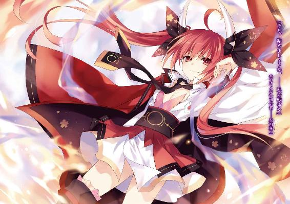

| デート・ア・ライブ 9 七罪チェンジ <デート・ア・ライブ> (富士見ファンタジア文庫) | |
| 橘 公司 & つなこ | |
| Kadokawa / 富士見書房 (2013) | |



デート・ア・ライブ９
七罪チェンジ
橘 公司

富士見ファンタジア文庫
本作品の全部または一部を無断で複製、転載、配信、送信したり、ホームページ上に転載することを禁止します。また、本作品の内容を無断で改変、改ざん等を行うことも禁止します。
本作品購入時にご承諾いただいた規約により、有償・無償にかかわらず本作品を第三者に譲渡することはできません。
本作品を示すサムネイルなどのイメージ画像は、再ダウンロード時に予告なく変更される場合があります。
本作品は縦書きでレイアウトされています。
また、ご覧になるリーディングシステムにより、表示の差が認められることがあります。
口絵・本文イラスト つなこ
第六章 子供たち
一〇月二九日、日曜日。
五河家の中は今、騒然としていた。
「シドー！ おなかがすいたぞ、シドー！」
「しどう、おしっこ。ひとりではできない。ついてきて、しどう」
「だーりーん！ だーりーん！」
「あ、あの......しどうさん......」
「みんなちょっとおちつきなさい！ って、あ！ かぐや、それわたしのチュッパチャプスじゃないの！」
「シドー！ ごはんがたべたいぞ、シドー！」
「くく、ちいさきものよ。さまつなことにこうでいするは、おのがわいしょうさをろていするにほかならんぞ？」
「しゅこう。ひとつくらいいいではないですか」
「って、あなたも！ かえしなさいよー！」
「う......っ、うぇぇぇぇぇ......」
『ああっ、ほら、だいじょーぶ、だいじょーぶ』
「しどう、もれてしまう」
「くーくくく！ いちどわがりょうちにはいったものはかえせぬなー！」
「とうぼう。かえしてほしかったらつかまえてみるがいいです」
「だーりーん！ だーりーん！」
「............」
無言で頰に汗を垂らしながら、五河士道は頭を抱えた。
ただでさえ寝不足で痛む頭を、ひっきりなしに響く甲高い声と、バタバタという足音が容赦なく叩いていく。ついでにシャツの裾は先ほどから四方に引っ張られ、びろびろに伸びてしまっていた。
今、五河家のリビングには、七人の小鬼......もとい、小さな女の子たちの姿があった。
皆、歳は恐らく一〇にもなるまい。ただでさえ手のかかりそうな年代である。加え、それぞれが思い思いに泣いたり、叫んだり、士道を引っ張ったり、追いかけっこをしたりしているのである。数日前から彼女らの世話に追われている士道の疲労は推して知れようというものだった。
だが、それも仕方のないことではあった。彼女たちとて、好きこのんでそんな姿をしているのではないのである。士道は小さく息を吐いてから顔を上げ、リビングで暴れ回るリトル・モンスターたちに目を向けた。
一人は、お腹が空いたと連呼する、夜色の長い髪と水晶の瞳が綺麗な女の子。
一人は、先ほどから執拗に士道をトイレに誘う、人形のように表情のない女の子。
一人は、今にも泣き出してしまいそうな、左手にパペットを着けた女の子。
一人は、口にチュッパチャプスをくわえ、髪を二つに括った、勝ち気そうな女の子。
一人は、その女の子から飴を奪って逃走する、いたずらが好きそうな女の子。
一人は、いたずら好きそうな女の子と瓜二つの顔をした、ぼうっとした表情の女の子。
一人は、皆より少し背の高い、とても声の綺麗な女の子である。
皆、黙ってさえいれば可愛らしい少女たちだ。だが──重要なのはそんなことではなかった。士道は改めて彼女らの顔を順繰りに眺め、ごくりと息を吞んだ。
士道は彼女らの顔立ちに、見覚えがあるのである。
十香、折紙、四糸乃、琴里、耶俱矢、夕弦、そして、美九。
そう。彼女らは士道の友人や妹たちと、まったく同じ身体的特徴を有していたのだ。
何も事情を知らぬ者が見れば、親戚か、或いは奇跡的な他人の空似と思うだろう。
だが、士道は知っている。彼女らは、いずれもが間違いなく本人なのだ。
通常であれば考えられない現象。普通、生物は時間の流れに従って身体が成長、あるいは老化していくものである。だというのに十香たちは、皆数年分もの時を巻き戻されてしまったかのように、子供の姿になってしまっていたのだ。
否......正しく言うのなら、その表現すら適当ではないのかもしれない。
十香や四糸乃たち精霊の身体が、人間のそれと同じように年を経ていくのかどうかはわからない。数年前の十香たちがこのような姿をしていたのかどうかの確証はなかった。
つまり、彼女らは時間を巻き戻されたわけではなく、身体を子供に『変えられて』しまったのだ。
一人の──凶悪な力を持つ精霊の手によって。
「七罪......一体、なんでこんな......」
脳裏に浮かぶ魔女の姿をした少女に向け、独り言を呟くように言う。
今から数日前。士道は七罪という名の精霊ととある勝負をし──勝利を収めた。
しかしその後、七罪はその場にいた皆の姿を変化させ、どこかへと去って行ってしまったのだ。
結果、その日からずっと、五河家は簡易託児所状態となってしまっていたのである。
「シドー！ シドー！」
「しどう、そろそろげんかい」
「う、うう......」
「この、まちなさいよっ！」
「ふはは！ ここまでくるがいい！」
「ちょうしょう。そのていどですか」
「だーりーん！ だーりーん！」
「わかった！ わかったからとりあえずみんな一旦落ち着いてくれ......！」
四方から引っ張られ、身体をゆさゆさと揺らされながらも、叫ぶ。しかし一向に、皆はおとなしくならなかった。
と。
「......お邪魔するよ」
士道が学級崩壊したクラスの担任のような調子で困り果てていると、不意にリビングの扉が開き、一人の女性が入ってきた。
適当に纏めた髪に、立派な隈に飾られた眠たげな双眸。服の胸ポケットには、縫い跡だらけのクマのぬいぐるみが収まっていた。士道のクラスの副担任にして、秘匿機関〈ラタトスク〉の解析官、村雨令音である。
「令音さん！」
「......大変そうだね、シン」
令音はそう言うと、状況を把握するようにリビングを見回したのち、ゆっくりと前方に手を伸ばした。そして、リビングを駆け回っていた八舞姉妹の首根っこを捕まえてその動きを止める。
「のあッ!?」
「しょうげき。くはっ」
急に動きを止められた耶俱矢と夕弦が、目を白黒させる。だが令音は落ち着き払った様子でその場に膝を突くと、優しく諭すように二人に目線を合わせた。
「......耶俱矢、夕弦。人のものを取ってはいけないよ。君たちも、自分のお菓子を勝手に食べられたら嫌だろう？」
令音が言うと、二人は気まずそうに口ごもった。
「ぐむ......」
「......はんせい。すいません」
「......よし、では二人で琴里に謝ろう」
令音がぽん、と耶俱矢と夕弦の肩を叩く。すると二人は琴里の方に向き直り、ぺこりと頭を下げた。
「ふん......すまなかったな」
「しゃざい。もうしません」
「......どうだろう、琴里。取られた分のキャンディはあとで補充しておく。彼女たちを許してやってはくれないだろうか」
そう言って令音が琴里の方に目を向けると、琴里がフンと鼻を鳴らしながら腕組みした。
「も、もういいわよ、別に。......私も、分けてあげなくて悪かったわ」
「......ん、三人とも、いい子だ」
令音が琴里、耶俱矢、夕弦の頭を順に撫でていく。すると三人は、少し恥ずかしそうに視線を逸らした。
「......さて、そちらはどうしたのかな」
と、次いで令音は士道のもとに歩いてくると、士道にしがみついている十香、折紙、四糸乃、美九の四人に目を向けた。そして一通り四人の声を聞いたのち、ゆっくりと言葉を続ける。
「......十香、今シンはちょっとだけ忙しいんだ。ご飯はもう少し待ってくれるかな？ その代わり、特別にこのクッキーを上げよう。......折紙、シンは一人でトイレに行ける子が好きだと言っていたよ。......四糸乃、安心したまえ。君が朝、食器を壊してしまったことなんて、シンは気にしていないさ。......美九、シンはちゃんと君の声を聞いているよ。無視しているわけではないんだ」
などと、一人ずつに話しかけ、騒がしかった皆をいとも簡単に宥めてしまった。何とも鮮やかな手管である。
「すいません......助かりました。俺だけではどうにもならなくて......」
「......いや、皆の世話を任せてしまってすまなく思っているよ」
「いえ、七罪の反応を捜してくれてるのはわかってますから。にしても──」
士道はすっかりおとなしくなった皆を眺めながら苦笑した。
「すごいですね、令音さん。まるでお母さんみたいだ」
「............」
何の気なしに士道が言うと、令音は無言のまま小さく眉の端を動かした。
そこで、ハッとする。別に他意はなかった......どころか、純粋な尊敬の念が籠もった言葉だったのだが、冷静に考えてみると、未婚の女性に対して言うようなことではなかったかもしれない。慌てて手を振り、訂正する。
「す、すいません。違うんです。そういう意味じゃなくて......」
「......いや、構わないよ」
しかし令音はさして気にするふうもなくそう言った。......日頃から表情が窺いづらい女性であるため、本当に気にしていないのかどうかは今ひとつ判別しづらかったのだが。
「そ、そういえば、令音さん。七罪は見つかったんですか？」
話題を変えるように士道が声を発すると、令音はふっと目を伏せて首を振った。
「......やはり七罪は霊波を隠蔽することができるようだ。広範囲に観測機を回しているが、未だ反応は見受けられない。......無論、既に隣界に消失しているという可能性もあるが」
「そう......ですか」
原因である七罪が見つからない限り、この状況が好転しないのは確かだった。士道は改めて、様変わりしてしまった少女たちを眺めたのち、令音に視線を戻した。
「でも......なんで七罪はこんなことをしたんでしょう」
「......そうだね、あの場から逃走するための緊急措置という可能性もあるし、精霊たちの戦力を削ぐことにより、君に何らかの警告を残していったとも考えられる。あとは──」
「あとは？」
士道が首を傾げると、令音は指を一本立ててみせた。
「......単なる嫌がらせ、かな」
「............」
令音の言葉に、士道は頰をぴくつかせた。冗談めかした調子ではあったものの、士道にはそれが正解に思えて仕方がなかったのである。
◇
イギリスはヒースロー空港から日本の成田空港まで、およそ一二時間。
プライベートジェットの機内で簡単な残務処理をこなしたアイザック・ウェストコットは、空港の専用ターミナルを出るなり、待たせていた車に乗り込み、日本での宿泊先である東京都天宮市のホテルに向かっていた。
くすんだアッシュブロンドに、抜き身の刃物のような鋭い双眸が特徴的な長身の男である。年の頃は三〇代半ばといったところだったが、全身に纏わりついた剣吞な雰囲気が、彼を年相応に見せるのを妨害していた。少なくとも、ＤＥＭインダストリーという世界レベルの企業を背負って立つには些か若すぎる──という感想は、彼と直接対面したことのある人間であれば決して持ち得なかっただろう。
「しかし、こうも短期間に往復が続くと、さすがに疲れてしまうな。どうだろう、エレン。いっそのこと日本に居を構えてしまうというのは」
ウェストコットが小さく肩を回しながら言うと、隣に座ったノルディックブロンドの少女がギロリと視線を鋭くしてきた。
「本来であれば今回の渡日も延期していただきたかったくらいです。あんなことがあったばかりだというのに、よくご自分の城を空にできるものだと感心してしまいます」
少女が強い口調で言ってくる。エレン・Ｍ・メイザース。ウェストコット直属の部下にして、ＤＥＭインダストリー影の実行部隊たる、第二執行部の長である。
「そう褒めないでくれ。照れてしまうよ」
「褒めていません」
エレンがぴしゃりと言う。ウェストコットは小さく肩をすくめた。
とはいえ、彼女の言うこともわからないではない。実はウェストコットは数日前、本国イギリスのＤＥＭインダストリー本社にて行われた取締役会にて、解任要求を出されてしまっていたのである。
そのときはエレンの物理的説得により事なきを得たのだが、こうも頻繁に本社を空けていては、ウェストコットのことを快く思わない若手の取締役たちに格好の準備期間を与えることになってしまう。彼らが再び何らかの形で反旗を翻してくる可能性は十分あった。エレンが神経質になるのも当然といえば当然である。
しかし、ウェストコットは小さく唇の端を歪めた。
「別に、それならばそれで構わないさ。隙あらばこちらののどを食い千切ろうとしてくるくらい野望に溢れた人間の方が、私は好きだよ」
「あなたはそれでいいかもしれませんが、後処理をする方の身にもなってください」
「善処するよ」
ウェストコットが言うと、エレンが少しだけ不満そうに唇を尖らせた。
「それより、例の件は調べてくれたかい？」
「......はい、こちらです」
エレンが小さく息を吐き、鞄からクリップで留められた書類の束を差し出してくる。ウェストコットはそれを受け取ると、そこに印刷された写真と文字列に視線を落とした。
それは、五河士道という少年と、彼を取り巻く環境についての調査資料だった。
「......なるほど。十数年前に今の家の養子になった、か。そして妹には精霊〈イフリート〉の疑い......よくもまあ、ここまで揃ったものだな。いや......揃えた、というべきか」
ウェストコットはくつくつと笑い、資料を捲った。次の紙には、数名の少女たちの写真が印刷されていた。
「〈プリンセス〉、〈ハーミット〉、〈ベルセルク〉、〈ディーヴァ〉──そして先の〈イフリート〉。確認できているだけで実に六名もの精霊が、彼のもとに集まっている。エレン、君はこれをどう見る？」
「......〈ラタトスク〉の関与は間違いないかと」
ウェストコットの問いに、エレンが微かに不機嫌そうな調子を覗かせながら口を開いた。
「それは間違いないだろう。精霊の力を封印することのできる少年──それを〈ラタトスク〉が利用しているのは疑いようがない。如何にそんな力を持っていようと、巨大な組織のバックアップがなければ、これだけの数の精霊を封印することは......いや、それ以前に、接触を図ることすら不可能だろう。だが──」
ウェストコットは言葉を切ると、ピン、と書類を指で弾いた。
「本当に、それだけかな」
「と、言いますと？」
エレンが怪訝そうに問うてくる。ウェストコットは肩をすくめた。
「そのままの意味さ。この奇異で歪な状況を作り上げたのは、果たして本当に、我らが御敵〈ラタトスク〉の意志のみによるものなのかな」
「......他に、裏で糸を引いている者がいると？」
「さてね。だがもし仮にそうだとしても、我々のやることに変わりはないさ。──そうだろう、エレン。エレン・Ｍ・メイザース。人類最強の魔術師よ」
そう言うと、エレンは数秒の間ウェストコットの思惑を探るようにじっと顔を見つめてきたのち、こくりと首を前に倒した。
「無論です」
その顔に、迷いや逡巡などは一切見受けられない。ウェストコットは満足げに首肯した。
「それでこそだ。──準備ができ次第、早速動いてもらうよ」
「──は。一体、誰から始めましょう。やはり〈プリンセス〉ですか？」
エレンがウェストコットの手元の資料に視線を落としながら言ってくる。だが、ウェストコットは「いや」と首を横に振った。
「この資料に載っている精霊たちは、しばらく泳がせておくことにしようと思っている。──もちろん、好機とあらば首を取っても構いはしないがね」
「どういうことですか」
エレンの問いに、ウェストコットは〈プリンセス〉夜刀神十香の写真を示してみせた。
「〈プリンセス〉が反転体となったことは記憶に新しいだろう。愛しき『魔王』が、我々の前にその姿を現したことは」
「はい」
「その原因となったのは──他ならぬこの少年、イツカシドウだった。君が彼を殺そうとしたとき、〈プリンセス〉は絶望の淵に立ち、自らの領分を超えた力を強烈に欲し──結果、魔王〈暴虐公〉の柄を摑むに至った」
ウェストコットは資料を膝に置き、両手を広げてみせた。
「我らが焦がれてやまなかった『魔王』が、ああも容易く現れるだなんて、一体誰が想像できたろう。精霊は──少なくとも〈プリンセス〉は、彼を心から尊び、信頼し、愛している。素晴らしいことじゃあないか。彼らには、もっともっと信頼関係を深めておいていただこう。来るときのために......ね」
そこでエレンも、ウェストコットの意図を察したらしい。表情は変えぬまま、なるほど、と首を前に倒してくる。
五河士道と精霊たちの関わりが深ければ深いほど、精霊たちが五河士道に依存すればするほど、それを失おうとしたときの絶望は深く、大きくなる。それこそ──己の領分に収まらぬ力に手を伸ばしてしまいかねないほどに。
「五河士道を、『鍵』としてお使いになるつもりですか」
「『鍵』、か。なるほど、いい表現だ」
エレンの言葉に、ウェストコットは小さく笑った。
「皮肉なものだな。〈ラタトスク〉が見出した対精霊用の秘密兵器が、我々にとっても切り札となり得るだなんて」
「薬が毒となるのは、取り立てて珍しいことではありません。ですが──」
エレンが言いたいことは、最後まで聞かずとも察することができた。要は、ならばエレンはどの精霊を狩ればよいのか、ということだろう。
ウェストコットは大仰な仕草でうなずいてから、続けた。
「ああ、それについては既に優先目標を設定してある。先日、おあつらえ向きなことに、ＡＳＴから報告があっただろう。変身能力を持つ精霊──〈ウィッチ〉が、天宮市近郊に出現し、そのまま、消失が確認されていない......と」
◇
「......おはよう」
翌朝。大きなあくびをしながら、士道は五河家のリビングへと入っていった。
結局、昨日は子供化してしまった皆を隣のマンションに帰すわけにもいかず、士道の部屋グループ（士道、十香、四糸乃、美九）と琴里の部屋グループ（琴里、耶俱矢、夕弦）とに分かれて雑魚寝することになったのだが......夜中中ずっと四糸乃と美九にしがみつかれ、ついでに十香が胸の上に乗っていたため、あまりよく眠れなかったのである。
とはいえ、全員が全員五河家に泊まったわけではなかった。唯一、折紙のみが「やることがある」と、もの凄く名残惜しそうに自宅に戻っていたのだ。
そういえばその後なぜか、士道の下着や歯ブラシなど、いくつかの私物が見当たらなくなっていたのだが......一体いつなくしてしまったのだろうか？
「おはよう、しどう」
「おはよーございまーす、だーりーん」
「お、おはよう......ございます......」
『うーん、いい朝だねー』
と、既にリビングにいた琴里、美九、四糸乃、そして『よしのん』が、士道の方に目を向けて挨拶を返してくる。
「おう、みんな早起きだな」
士道が言うと、三人と一匹は思い思いの表情を浮かべてきた。
「さいていげんのじこかんりよ」
「あの、いつも......おきるじかんなので」
「はやねはやおきは、おはだのみかたなんですよー。アイドルとしてはとーぜんですー」
琴里が半眼で腕組みをし、四糸乃が照れるように肩をすぼませ、美九が自分の頰を撫でながら得意げに言ってくる。なるほど、この三人は、子供化してしまっても生活リズムが崩れていないらしかった。
士道は、自分の部屋を出てくるときに見た、十香の幸せそうな寝顔を思い出して、思わず笑ってしまった。ここに姿がないということはきっと八舞姉妹も琴里の部屋でまだ寝ているのだろう。なんというか、妙に微笑ましかった。
「──さて。ちょっと待ってな。すぐ朝飯にするから」
士道はそう言うと、エプロンを身につけ、手を洗ってから朝食の調理を開始した。
卵と牛乳、砂糖を混ぜたものに、食べやすい大きさにカットした食パンを浸し、バターを溶かしたフライパンでこんがりと焼き上げる。簡単で美味しい、お手軽フレンチトーストである。無論、パンに味を染み込ませている間に、サラダとスープを拵えておくのも忘れない。二〇分もしないうちに、五河家のリビングにはいい匂いが漂い始めた。
「ほら、もう少しでできるからテーブル空けといてくれ」
『はーい』
士道が声をかけると、リビングにいた三人が行動を開始した。四糸乃がテーブルの上にあったものを片付け、琴里が台布巾でテーブルを拭き、美九が料理の盛りつけられた皿を運んでいく。別段珍しい光景でもないのだが、今は彼女らの幼い容姿のためか、妙に「おてつだい」感が出ていた。
「さ、じゃあ食べようか。いただきます」
『いただきまーす』
三人が士道に倣うように手を合わせ、ぺこりと頭を下げる。
「！ おいしい......です」
「ん、まあまあね」
フレンチトーストを口に運んだ四糸乃が目を見開き、琴里がふふんと鼻を鳴らす。なんだかんだ言っても、自分の料理を喜んでくれるのは素直に嬉しい。士道は頰を緩めながら自分のトーストにフォークを刺した。
「ねぇねぇ、だーりん、だーりん」
と、士道がトーストを食べようとしていると、隣に座った美九が袖を引っ張ってくる。
「ん、どうしたんだ、美九」
士道が言うと、美九は両手を胸元で組み合わせながら目を伏せ、「あーん」と口を開けてきた。
「え？」
「んもうっ、あーんですよ、あーん」
美九はぷりぷりと怒るような仕草をしたのち、再び口を広げてきた。
「あ、ああ......」
トーストを一口大に切ってから、美九の口に運んでやる。すると、美九は両手でほっぺを押さえながら嬉しそうに声を弾ませた。
「うぅーん！ おいしいですぅ。だーりんにたべさせてもらうとまたかくべつですぅ」
「はは......まあ味は変わらないと思うけどな」
士道が苦笑しながら自分の皿に向き直ると、正面に座っていた琴里と、はす向かいに座っていた四糸乃が、愕然とした表情を作っているのがわかった。
「二人とも......？」
士道が言うと、琴里と四糸乃は「むむぅ......」と難しげに眉をひそめた。
と、そこで。
『とうっ！』
「きゃ......!?」
一体何を思ったのか、『よしのん』が急に四糸乃の右手首に鋭いチョップを食らわせ、四糸乃が握っていたフォークをその場に取り落とさせてしまった。
「お、おい、よしのん？」
『あぁーん！ ゴメンね士道くーん。よしのんのうっかりで四糸乃のフォークを落としちゃったよー。悪いんだけど、四糸乃にも食べさせてあげてくれないかなぁ？』
「は......？ それは構わないけど、それより新しいフォークを......」
『食・べ・さ・せ・て・あ・げ・て・く・れ・な・い・か・なぁ？』
『よしのん』が顔をずずいと寄せ、凄むように言ってくる。士道は気圧されるように「お、おう......」とうなずいた。
「あ、あの......しどうさん......ごめんなさい」
「いや、四糸乃のせいじゃないだろ。ほら、あーん」
「あ、あーん......」
士道がフォークに刺したトーストを差し出してやると、四糸乃が躊躇いがちに、小さな口をいっぱいに広げた。
そして四糸乃はそのままトーストを頰張ると、あむあむ、と咀嚼してから、少し恥ずかしそうに微笑んだ。
「ありがとう......ございます。ほんとうに......おいしいです」
「そっか。そりゃ何よりだ」
士道は微笑み、落ちてしまった四糸乃のフォークを交換してやってから、再び自分の皿に向き直った。が──
「............むぅぅ......」
そこで、向かいの席の琴里が、今にも泣いてしまいそうなくらい目を真っ赤にしているのを発見し、またも食事を阻まれた。
「......ええと」
さすがに、士道でもわかった。子供化しているためだろうか、いつもよりも感情の起伏を読み取りやすい気がする。士道は先ほど美九や四糸乃にしたように、一口大に切ったトーストを、琴里の方に向けてやった。
「ほら琴里、あーん」
「......！ べ、べつにたのんでないわよ、そんなの。こどもあつかいしないでくれる!?」
「......いや、子供だろ」
「うぐ......！」
琴里は、むー......とうなってから、トーストを頰張った。
そしてそれを飲み込んでから、唇を尖らせて目を逸らし、小さな声を発してくる。
「......ありがと」
「あいよ、どういたしまして」
士道はそう言うと、ようやく自分の口にトーストを放り込もうとした。
が、その瞬間、不意にリビングの扉がガチャリと開き──もの凄く眠そうな顔をした十香が部屋に入ってきた。
「......むう、なにやら、いいにおいが......」
言って、ふぁぁぁ......と大きなあくびをする。
あまりに十香らしい目覚め方である。士道たちは目を見合わせると、誰からともなく笑ってしまった。
「──そういえば、きょうはどうするつもりなの？」
それからどれくらい経った頃だろうか、朝食を終え、すっかり調子を取り戻した琴里が士道に向かって問うてくる。ちなみに十香は、フレンチトーストを食べたあと、満足そうな顔をしてソファに寝転がって、再び夢の世界に旅立ってしまっていた。
「ああ、今日はとりあえず、学校に行ってみようかと思ってる。七罪のこともあるし、十香たちを置いていくのも不安だから昼前には早退してくるつもりだけど......やっぱり殿町たちのことも気になるしな」
士道は頰をかきながら言った。そう。実は先日の事件に巻き込まれたのは、十香や琴里たちだけではなかったのだ。
士道のクラスメートの殿町宏人、山吹亜衣、葉桜麻衣、藤袴美衣、そして担任の岡峰珠恵教諭の五名が、精霊・七罪の手によって、一時的とはいえ天使の中に閉じ込められてしまっていたのである。
幸い彼らは十香たちのように子供にはされなかったのだが、士道が危険な事件に彼らを巻き込んでしまったことに変わりはない。意識を取り戻した彼らの無事を、直接自分の目で確認しておきたかった。
「そ。わかったわ。とはいえ、なつみがどこにいるのかわからないじょうきょうよ。じゅうぶんちゅういしてちょうだい」
「ああ、わかってる。──そろそろ出るから、耶俱矢たちが起きてきたら、朝ご飯を温めてやってくれ。本当は焼き立てが美味いんだけど、火を使わせるのも怖いしな」
「だから、こどもあつかい......」
琴里は、そこで言葉を止め、不満そうに口を歪めながらもこくりとうなずいた。
士道は「いい子いい子」をするように琴里の頭を撫でた（無論、四糸乃と美九にもせがまれた）のち、ブレザーを羽織って身支度を調え、靴を履いて玄関のノブに手をかけた。
「じゃあ、あとはよろしくな。一応インカムは着けていくから、何かあったら連絡くれ」
「はいはい、わかってるわよ」
「いってらっしゃい......です」
「だーりん、ちゅーは？ いってきますのちゅーは？」
琴里、四糸乃が手を振り、美九がキスをせがむように唇を突き出してくる。士道は苦笑しながら手を振り返すと、玄関を開けて外に出て行った。
天気は快晴。今士道たちを取り巻く複雑な状況とは対照的に、気持ちのいい秋晴れの日である。
「んー......」
士道は陽光に身を晒すように大きく背伸びをすると、学校に向かって歩き始めた。
「......？」
が、家の門を出て数歩歩いたところで、士道は不意に足を止めた。そしてそのまま右に左に目をやり......首を傾げる。
「誰もいない......よな？」
一瞬、誰かの視線を感じた気がしたのだが......気のせいだろうか。
もしかしたら七罪の件が解決していないことで神経質になっているのかもしれない。士道は大きく深呼吸をして心拍を落ち着けると、再度学校の方向に足を向けた。
「聞いてくれよ五河！ 俺、超絶不思議体験しちまったんだよ！」
士道が二年四組の教室に入るなり、髪をワックスで逆立てた少年が、興奮した様子で士道に詰め寄ってきた。件の生徒──殿町宏人である。
見たところ、どうやら身体に異常などはない様子だった。悪友の元気そうな様子に胸を撫で下ろしながら、士道はやれやれといった様子で口を開いた。
「一体どうした殿町。自分がビッグフットの末裔であることを思い出したのか？」
「そうなんだよ、最近妙に腕毛が伸びるのが早いと......っていやいやいや」
殿町は士道の軽口にオーバーリアクションを取ったのち、ブンブンと首を振ってきた。
「そうじゃないっての！ 宇宙人だよ宇宙人！」
「宇宙人？ そうか、地球上のＵＭＡだとは思っていたがまさか宇宙人だったとは......」
「って、違う違う！ そうじゃなくて！ 俺、二五日の夜に眠ったと思ったら、次起きたとき、二八日になってたんだよ！」
「おいおい、いくらなんでも寝過ぎだろ」
「そう！ おかしいよな!? 実際不思議なんだよ！ 目覚めてみたら何日も過ぎてて、しかも家族に聞いてみたら、その間、俺はどこかに消えてたらしいんだ！ 気がついたら自分の捜索願が出されてんだぜ!? ビビったよ！」
「それで、宇宙人だと」
「ああ！ だって他に考えられないだろ!?」
士道はポリポリと頰をかいた。殿町が言っているのは、間違いなく七罪の天使に囚われていたときのことだろう。だが、それを話すわけにはいかなかったし、何より「いや殿町、それは宇宙人ではなく精霊の仕業なんだ。おまえは精霊の天使に囚われていたんだ。ちなみに空間震も精霊の仕業なんだ。そして実は、俺は精霊の力を封印することができるんだ」なんて正直に打ち明けたとしても、「あ、そ、そうですか......じゃあ俺、授業の準備ありますんで......」と妙によそよそしい態度になって去って行かれるのがオチだろう。士道は疑わしそうな目で殿町を見るにとどめておいた。とにかく、無事で何よりである。
と、殿町がテンション高く喋っていたのを聞きつけたのか、士道の視界に、三人の女子生徒の姿が入り込んできた。
「おおっ、ちょっとちょっとー」
「気になる話してるじゃなーい」
「殿町くんも不思議体験組なのー？」
十香の友だちであり──殿町と同じく、先日の事件に巻き込まれてしまった三人組、背の高い順に亜衣、麻衣、美衣だ。
「お？ その口振りからするとおまえらもか？」
殿町が問うと、亜衣麻衣美衣がうんうんとうなずいた。
「そうそう、そうなのよー。みんな信じてくれないんだけどさー」
「私たちもここ数日間の記憶がないのよー」
「これってやっぱり宇宙人？ それとも謎の秘密結社の仕業とか？」
三人が口々に言い、やんややんやと色めき立つ。
「そういえばタマちゃん先生も同じような体験したって言ってたのよー」
「えっ、本当？ これはもう偶然じゃないわね」
「これで五人目......何かの陰謀の臭いを感じるわ......！」
「まさか、私たち本当に 謎の秘密結社に拉致られてたの!?」
「改造手術を受けた私たちには人間を超えた力が!?」
「しかも人数は五人......これはヒーロー戦隊を組む流れ！」
亜衣麻衣美衣が示し合わせたように『とうっ！』と格好いいポーズを取る。
「ほら、レッドも！」
「お、おう!?」
殿町も取り込まれた。三人の前で、格好いいポーズを取らされる。
「さあ、力を合わせて、世にはびこる悪の怪人を倒すのよ！」
「悪の怪人......？」
「そう、私たちの近くには既に、人間に擬態した怪人が潜み、悪事を働いているのよ！」
「具体的には、突然女の子の胸を揉みしだいたり、スカートを捲ってみたり、唇を奪おうとしたりするのよ！」
「覚悟しろ！ 淫猥怪人イツカシドー！」
「俺!?」
突然矛先を向けられ、士道はビクッと肩を揺らした。
そういえば先日、士道そっくりに化けた七罪が学校でいろいろ悪さを働いてしまったことがある。そのことをまだ根に持っているのかもしれなかった。
「そ、そうだったのか五河......どうりで最近様子がおかしいと思ったぜ」
「やっぱり何か思い当たるフシがあるの、殿町くん！」
「あ、ああ......俺の記憶が途切れる少し前から、妙に五河の視線が気になったというか......サウナに呼ばれてやたらボディタッチしてきたりとか......」
「きゃー！ きゃー！」
「い、五河くん、そっちもいける人だったの......!?」
「尾木ちゃーん！『腐女子が選ぶ校内ベストカップル』選考委員長の尾木ちゃーん！ ランキングを塗り替える事案が発生しましたー！」
「五河......やっぱりあれは、そういうあれだったのか......？」
「いや、何殿町まで乗ってるんだよ！ ていうかほら、そろそろホームルームだぞ」
士道が言うと同時、キーンコーンカーンコーン......と、聞き慣れたチャイムが教室中に響き渡った。
「ほらほら、先生くるぞ」
「誤魔化すんじゃあない！ 五河、おまえは、本当に......！」
殿町がチャイムに構わず、熱っぽく言ってくる。だが、
「あ、もうホームルームかー」
「席戻んないとー」
「今日の一時間目なんだっけー」
亜衣麻衣美衣はあっさりと去って行った。自覚はしていないだろうが、見事な梯子の外しっぷりである。それを見て、しばし頰に汗を垂らしていた殿町もまた「じ、じゃあ、また......」と自分の席に戻っていった。
それからほどなくして、教室の扉が開き、小柄な眼鏡の女性が入ってくる。士道たちのクラスの担任であり、先の事件に巻き込まれた一人でもある、岡峰珠恵教諭、通称タマちゃんである。
どうやら、先生も無事だったようだ。士道は安堵の息を吐こうとし──眉をひそめた。
理由は単純。タマちゃん先生の様子がおかしかったからだ。額に汗が滲み、目は泳ぎ、見るからに動揺しているように見える。一体何があったというのだろうか。
士道が怪訝そうにその様子を見ていると、不意にタマちゃんが士道の方に視線を寄越してきた。そして躊躇いがちに口を開いてくる。
「あのぉ......五河くん」
「な、なんですか？」
士道が答えると、タマちゃん先生は困惑した顔を作った。
「あ、あのですね、五河くんにお客さんが来てるんですけど、その......」
「俺に、客......？」
士道は首を捻った。わざわざ学校に訪ねてくるような知り合いに心当たりがなかったのである。〈ラタトスク〉の関係者かとも思ったが、それならば通信でその旨を伝えてくるだろう。
「............！」
と、そこで士道の脳裏に、二つの可能性が過ぎった。
すなわち、ＤＥＭインダストリーと......精霊・七罪。
「その客は、どこにいるんですか？」
「あ、はい、今は職員室の方に......」
が、タマちゃん先生がそう言いかけた瞬間。
「シドー！」
やたらと元気のいい声が、教室の入口から聞こえてきた。
「な......っ!?」
そちらに目をやり──士道は声を詰まらせた。
そこにいたのは、ＤＥＭインダストリーの刺客でもなければ七罪でもなく......家で寝ているはずの、小さくなった十香だったのである。
タマちゃん先生が、慌てて十香を止めようとする。
「ああっ、駄目ですよ！ 職員室で待っててくださいって言ったじゃないですかぁ！」
「む？ なぜだタマちゃんせんせいよ。わたしはきょうしつにいてはいけないのか？」
「えっとですね、ここはお兄さんやお姉さんたちがお勉強をするところなので......」
「わたしもシドーといっしょにべんきょうをするぞ！」
「ええと、だからそれは、もう少し大きくなったらで......」
タマちゃん先生が困り顔で十香を宥める。
すると、十香の後ろからさらに小柄なシルエットが現れた。
「くく、なにをしておるか」
「じゃま。あとがつかえています」
「............」
同じく五河家で眠っていたはずの耶俱矢、夕弦、そして自宅に帰った折紙が、十香とともにぞろぞろと教室に入ってくる。
予想外の来訪者に、教室がにわかにざわめきだした。反応は大きく分けて三タイプ。「なんでこんなところに小学生が......？」と首を捻る者、「やーん、可愛いー！」と黄色い声を上げる者、そして「あれ？ なんかこの子たち、どこかで見たような気が......」と眉をひそめる者、といったところだった。
その瞬間。耳に着けていたインカムから、琴里の声が聞こえてきた。
『──どう！ しどう！ きこえる？ きんきゅうじたいよ！ とおかたちがいえからいなくなってるわ！』
「......ああ、こっちに来てるよ」
『え......!?』
と、そこで十香が士道の方を向き、パァッと顔を輝かせたかと思うと、ててて、と走って士道に飛びついてきた。
「おおシドー！ やはりここにいたか！」
そしてそれに次いで、耶俱矢と夕弦も士道のもとに駆け寄ってくる。
「おいしどう、われらがにねんさんくみのたんにんに、はなしをとおすがよい。われらがやまいといってもしんじぬのだ」
「ためいき。がいけんでしかものごとをはんだんできないおとなです」
言って、やれやれと息を吐く。そうこうしている間にも、士道の周囲ではひそひそと何かが囁かれていた。何を話しているのかはよく聞こえなかったが、「ロリコン」「犯罪」「ダメ、ゼッタイ」などという言葉だけは聞き取ることができた。
明らかにろくでもないことが囁かれているが、今はそちらに構っている場合ではない。十香たちに向き直り、声を発する。
「......おまえら、なんでここに」
「む？ おかしなことをきくな。きょうはがっこうではないか。いっしょにねていたのに、きづいたらシドーがいなくなっていたのでびっくりしたぞ！」
『......ッ!?』
十香の言葉に、クラスの面々が驚愕の表情を作り、士道に視線を向けてくる。
「ちょっと五河くん、この子たちは......？」
「一体どーゆーご関係で......？」
「ていうか一緒に寝てるの......？」
亜衣麻衣美衣が訝しげに眉をひそめ、士道と十香の顔を交互に見てくる。士道はどうにか言い訳をしようと慌てて思考を巡らせた。
だが、士道が声を発するより早く、小さな影がつつつ......と士道に寄ってくると、十香と同じようにがっしと士道に抱きついてきた。──折紙だ。
そして、
「──パパ」
なんて言ったものだから、一瞬にしてクラス中が騒然となった。
「な......ッ!?」
「パパ!? 今パパって言った!?」
「えっ、パパって!? ポリネシア神話の地母神!? ギリシアの数学者!?」
「お、お嬢ちゃん、お名前は......？」
亜衣が膝を折り、折紙と目線を合わせるようにして優しく（目は動揺に泳ぎまくっていたが）問いかける。すると折紙は礼儀正しくペコリとお辞儀をしてから、言葉を続けた。
「五河千代紙です。いつもちちがおせわになっています」
「お、おい......!?」
「ママのなまえは鳶一折紙です。わたしはパパとママのあいのけっしょうです」
『............えッ!!』
クラスに衝撃が走る。あちらこちらで、ざわざわひそひそと動揺の声が広がった。
「た、確かに言われてみれば鳶一さんに似てる......!?」
「えっ、噓、鳶一さん高校生で出産......!?」
「いや、でも結婚は一六歳からできるし、法律上は......」
「男の方は一八からじゃん！ 五河くんアウトじゃん！」
「ていうかこっちの子は夜刀神さんに似てない？ あっちは隣のクラスの八舞さんに！」
「え、まさか一夫多妻ってやつ!?」
「で、でもそれっておかしくない!? この子たち、見た感じ八、九歳はいってるよね？ みんな八歳とかで子供産んだの......!? 五河くん、八歳で女の子妊娠させたの......!?」
「いや、でも出産の最年少記録は五歳七ヶ月だから、不可能では......」
「ちょ、ちょっと待った！ 誤解だ、誤解！」
これ以上変な噂が流れるのはゴメンである。士道は腹の底から大声を上げて、際限なく盛り上がる話題を止めた。
「この子たちは......その、あれだ！ 親戚の子供を預かってるだけなんだよ！ パパとかいうのはほら、あだ名みたいなもんでさ！」
「ええー......？」
士道の弁明に、疑わしげな視線が寄せられる。正直、自分でも苦しい言い訳だとは思ったが、冷静になって考えれば、高校生である士道にこんな歳の子供がいるはずがないことくらいはわかったのだろう、クラスの面々は腑に落ちない顔を作りながらも、一応は納得を示してきた。
「うーん......なるほど。五河のことだからそういうのもあるのかと思っちまったぜ」
「ねー。ありそうだよねー」
「でもこの子たちと一緒に寝てたのは本当なんだろ？ ロリコン疑惑は消えないぞ」
「......おい」
口々に呟かれる疑惑に半眼を作ると、クラスの面々は、あははとわざとらしく笑った。やれやれとため息を吐く。
「ったく、好き勝手言いやがって......ほら、みんな。今日は俺も学校早退するつもりだったし、一緒に帰ろうな」
向き直ってそう言うと、十香は意外そうに目を丸くした。
「ぬ？ もうかえるのか？」
「ああ、もう目的は果たしたしな。ホームルームが終わったらすぐ行くから、ちょっと職員室で待っててくれないか？」
「むう......わかった。シドーがそういうならまっているぞ」
十香がそう言って、素直にうなずく。
「悪いな。じゃあ少しの間──」
と、士道が十香の肩に手を置いた瞬間。
「え......？」
士道は思わず眉をひそめた。教室の窓の外で、何かが光った気がしたのである。
だが、そんな違和感はすぐにかき消されることになった。──下方から響いた十香の声と、周囲に満ちたクラスメートたちのざわめきによって。
「な......っ！」
「？ どうした、十香──」
視線を窓から十香の方に戻し、士道は言葉を止めた。
だがそれも当然だろう。何しろ十香が纏っていた衣服の縫製が、士道が触れた場所からはらりと解けてしまっていたのだから。
「な、なにをするのだシドーっ！」
十香が顔を真っ赤にし、露出した肩を隠すようにその場にうずくまる。
「ちょっと五河くん、どういうつもり!?」
「本性を現しやがったなロリコン野郎！」
「え......？ へ......？」
しかし、士道には何が何だかわからなかった。士道が触れた瞬間に、十香の服がバラバラになった......？ そんなこと、可能なはずは──
だが、そこで士道の頭の中に、一つの可能性が浮かんできた。先ほど窓の外で輝いた光。あれはもしかしたら──
「まさか、七罪......!?」
士道は誰にも聞こえないくらいの声で言うと、再び窓の方を見た。
そう。物質を思い通りに変化させることのできる天使を持った精霊・七罪。彼女ならば可能なはずだった。つまり服の縫製を解いたのではなく、『服』を、『バラバラの布』に変化させたのだ。
それを認識した瞬間、士道は窓の方へと足を向けていた。
が、クラスの面々にはそれが犯罪者の逃走と映ったらしい。亜衣麻衣美衣が壁を作るようにして、士道の進路を阻んでくる。
「ちょっと待てゴルァァァァァ！」
「乙女を辱めておいてどこに行こうってのよ！」
「現行犯よ！ 逃がさないんだから！」
「ちょ......違うんだよ！ 頼む、邪魔をしないでくれ！」
しかし士道がいくら言おうとも、亜衣麻衣美衣に退くつもりはないようだった。がっしりと肩を組み、士道の眼前に立ちはだかる。
「く──」
士道は仕方なく三人を押しのけようとした。するとその瞬間、再び窓の外に光が生まれたかと思うと、三人が着ていた制服がハラハラと解け、乙女の柔肌が露わになった。
「き、きゃぁぁぁぁぁぁぁぁぁぁッ!?」
「な、何よこれぇぇぇぇぇ！」
「ルカナァァァァン!?」
三人が悲鳴を上げてその場にうずくまる。教室に戦慄が広がった。
「お、おい、やり過ぎだぞ五河......！」
と、殿町が士道を止めるように肩に手を置いてくる。だが、そう言われても士道にはどうしようもなかった。
「いや、俺は何も──」
すると、三たび窓の外がキラリと光ったかと思うと、今度は殿町の服が弾け飛んだ。
「いやぁぁぁぁぁッ!?」
殿町が叫びを上げ、そのまま仰向けに倒れ込む。ちなみに、解けた服の一部が上手い具合に股間を隠していた。奇跡である。
「お、おい、何だよ今の......！」
「一瞬にして服を......!?」
「五河くんに触られたら脱がされる!?」
「いや、だから、俺は──」
士道が弁明をしようとした瞬間、今度は士道の視線の先にいたタマちゃん先生の服がバラバラになる。
「うわきゃぁぁぁっ!?」
タマちゃんが、出席簿で胸元を隠しながら、士道に非難の眼差しを向けてくる。
「な、何するんですか五河くん！ これはもう、責任取って結婚してもらうしか......！」
「いや、今のは俺触ってませんよね!?」
深刻な冤罪に叫びを上げるも、クラスの面々は聞いていないようだった。
「まさか、視線だけで......!?」
「なんてこった！ 奴は化け物か!?」
「ああもう......ッ！」
士道は頭をかきむしると、自分のブレザーを十香の肩に掛けた。
「みんな！ 七罪だ！ 一旦帰るぞ！」
『......！』
十香、折紙、耶俱矢、夕弦の四人は、七罪の名で全てを察したらしかった。こくりとうなずくと、士道とともに教室から出て行く。
「ちょっと待てコラ五河ァァァァッ！」
「次きたとき覚えてろよぉぉぉぉ！」
「マッパに剝いてやるからなぁぁぁ！」
背に亜衣麻衣美衣の怒号を聞きながら、士道は廊下を駆け抜けた。
「......大変な目に遭った」
途中の道で折紙と別れたあと。士道は自宅への道をのたのた歩きながら、大きなため息を吐いた。
「だいじょうぶか、シドー」
と、士道のブレザーを腕まくりしながら着た十香が、心配そうに顔を上げてくる。士道はその頭を優しく撫でると、十香を安心させてやるように微笑を浮かべた。
だが、事態は何も解決していなかった。あのあとすぐに琴里に連絡を取り、七罪がいたと思しき場所を探ってもらったのだが、手がかりらしきものは何一つ見つかっていないという話である。もし今後もこのような陰湿な嫌がらせが続いたとしたなら、士道は社会的に殺されてしまいかねない。
無論、それを抜きにしても、十香たちに不便を強いてしまっているのは無視できない問題だった。士道は三人を見ると、決意を新たにするように拳をぐっと握った。
「早く......七罪を見つけないとな」
「くく、そうであるな。われをかようなすがたにしただいしょう、そのいのちをもってつぐなってもらうぞ」
「しゅこう。ぼかすかじゃんです」
「いや、そんな物騒なことはしないけどな......？」
士道は苦笑しながら角を曲がり、五河家の前へと至った。が。
「......ん？」
士道は首を捻った。記憶にある場所に、自分の家がなかったのである。
否。正しく言うのなら、自分の家があるはずの場所に、別の建物が建っていた、という方が正しいだろうか。それは閑静な住宅街には似つかわしくない、まるでお城のような形をしていて──
「おお！ ドリームパークではないか！」
十香が弾んだ声を上げる。そう、なぜか士道の家が、街の外れにある、ご休憩のあるホテルそっくりの形に変貌していたのだ。
「こ、これは......」
数秒の間、何が起こったのかわからず目を白黒させるも、すぐに気づく。こんなことが可能な精霊に一人、心当たりがあったのである。
「七罪......」
士道は頰に汗を垂らしながら言うと、耳元のインカムに触れた。
「......おい、琴里、琴里」
そう呼びかけると、ほどなくして、琴里の声が聞こえてくる。
『なに？ どうしたの。なつみのこんせきならまだ──』
「いや、そうじゃなくて。......ちょっと窓から顔出してみてくれないか？」
『え？』
それから数秒後。ホテルの壁面に設えられた窓のうちの一つから、琴里が顔を出した。
『なッ、なによこれ......!? いえのかたちが......!?』
どうやら気づいていなかったらしい。琴里が驚愕の声を上げる。変化させられているのは外観だけのようだ。
「......ああ、多分、七罪の仕業だろう」
『ち......やっかいなちからね。とにかく、なかはぶじだからもどってきてちょうだい』
「あ、ああ......」
士道はうなずくと、十香たちを伴ってホテルにしか見えない自宅に入っていこうとした。
しかしそこで、路上で世間話をしていた奥様方が声を上げてくる。
「あれ、五河さんちの士道くん？ その子たちって一体......」
「え!? い、いや、これはその......」
「あら？ ここ、こんな建物建ってましたっけ......？」
「ていうか士道くん......？ その子たち、ここに連れ込もうとしてたの？」
「ええっ！ 大変！ おまわりさーん！ おまわりさーん！」
「い......ッ!?」
通報されてはたまらない。士道は十香たちを連れてその場から逃げ出した。
第七章 闇からの手招き
ＤＥＭインダストリー英国本社の会議室の中には今、重苦しい空気が満ちていた。
まるで本当に空気が粘性を帯びているかのような様相である。深呼吸を一度するだけで肺がどろりとしたもので満たされ、息が苦しくなるような感覚さえあった。何も知らぬ者がいきなりこの部屋に放り込まれたなら、何の冗談でもなく呼吸困難に陥ってしまうかもしれない。
居並んだ男たちには幾つかの共通点があった。一つは、皆イギリス人であるということ。一つは、皆ＤＥＭインダストリーの取締役であるということ。そして一つは──皆、右腕ないし左腕を、ギプスと包帯で覆われている、ということだった。
「......くそッ！」
長い沈黙を破ったのは、眼鏡をかけた壮年の取締役、ロジャー・マードックだった。
「皆さん、このままでいいのですか!? ここまでされて、黙っているつもりですか!?」
忌々しげに叫び、皆と同じく首から吊られている右腕を示す。
──先日の取締役会の際、切り落とされた腕を。
そう。今ここにいる取締役たちは、数日前ＤＥＭインダストリー業務執行取締役に解任要求を突きつけ──物理的暴力で以てそれを覆された面々だったのである。
切り落とされた腕は、既に医療用顕現装置によって綺麗に接がれ、もう自分の意思で指先を動かすことも可能になっている。しかし、己の腕が一瞬にして消え去っていた光景が脳裏から消えず、未だ誰もギプスを外すことができていないのだった。
「......そうは言ってもな」
顎髭を生やした男──シンプソンが、マードックの方に目を向けてくる。その視線には微かな怯えと──マードックに対する非難が籠もっているように思えた。
とはいえそれは、その男に限った話ではない。会議室にいる面々が皆、口には出さないものの、似たような感情を抱いていることは想像に難くなかった。
だがそれも仕方あるまい。もとはといえば事の発端──ウェストコットの解任要求は、マードックが絵図を描いたものだったのである。
顕現装置という革命的な技術を作り出し、ＤＥＭインダストリーという会社を作り上げたウェストコットの功績は計り知れない。だが現在のＤＥＭ社の取締役会にとっては、対外的な影響をまったく考えずに絶対的な権能を振るう傍若無人な彼の存在は、目の上の瘤に他ならなかったのだ。
そんなとき、ウェストコットが日本で途轍もない不祥事を起こしたというニュースが舞い込んできた。
ＤＥＭ日本支社第一、第二社屋と、それに付随する関連施設数棟を半壊させた挙げ句、魔術師を幾人も死傷させてしまったというのである。責任を問うには格好の機会だった。
しかし──結果はこれだ。
シンプソンが、表情に諦めを滲ませながら、首を振ってくる。
「今回の件で、改めてわかったろう。彼は怪物だ。我々とは違う。思考も、価値観も、それを実行する権能も......何もかもが。一瞬でも夢を見た我々が愚かだったんだ」
マードックは左拳を握りながら、シンプソンに視線を返した。
「......だとしても、です。彼には、然るべき報いを受けていただくつもりです」
マードックの言葉に、取締役たちが小さなため息を吐く。恐らく、それをマードックの虚勢と取ったのだろう。
「報い......ね。一体どうするというんだい」
肩をすくめながらシンプソンが言ってくる。しかしマードックに、虚勢や強がりを言っているつもりは微塵もなかった。居並んだ取締役たちを睥睨するように眺めてから、のどを震わせる。
「確か今ウェストコットＭＤは、日本にいるのでしたね。なんでも精霊の出現頻度が極端に高い場所があるとかで」
「それが、どうかしたかね」
「心配ですね。──万が一、彼が事故や、空間震に巻き込まれでもしたら大変だ」
『......ッ!!』
意味深にアクセントを強めたマードックの言葉に、取締役たちが息を吞んだ。
「マードック、まさか君は......」
シンプソンが、戦慄した様子で言ってくる。
彼だけでなく、この場にいる皆が理解しただろう。
──マードックが、ウェストコットの暗殺を仄めかしていることに。
「............」
しばしの間、会議室に沈黙が流れる。皆が皆、他の取締役たちの反応を窺うように視線を泳がせ合っていた。
とはいえ、彼らの思案が、「人の命を奪う」ことを躊躇ってのものでないことは容易に想像が付いた。彼らにそんな殊勝な感情があるのならば、今ＤＥＭ社取締役の席に座ってはいるまい。
彼らを悩ませているのは単純に、恐怖だった。──要は、暗殺が失敗した際、己の身に返ってくるであろうウェストコットの報復が恐ろしいのである。
だが。どれくらいの時間が経った頃だろうか、一人の取締役が声を上げた。
「......そうだな。心配だ。とても、心配だ」
そのわざとらしい言葉は、マードックの提案への賛同に他ならなかった。
「......ああ、確かに、その通りだ」
そして、一人、また一人と、ウェストコットを気遣う言葉を述べていき──やがて全員が、マードックに賛意を示した。
マードックは唇の端を上げた。狙い通りである。
通常であれば、マードックの提案に乗ってこない取締役もいたかもしれない。だが、先の取締役会で腕を落とされたばかりという記憶に新しい経験が、彼らの思考を変化させていたのだ。
つまりは──ウェストコットという怪物とこれからも付き合っていかねばならないという恐怖が、彼に逆らう恐怖に勝ったのである。
しかし、皆の総意が得られたとはいえ、問題は山積みである。シンプソンが難しげな顔を作ってくる。
「......だが、そうするとして、方法はあるのかね」
その質問は当然のものだった。ＤＥＭ社は、どうしても平和的解決が見込めない問題を解消するため、希にそういった手段を用いることがあるのだが、その際の実行力は、他でもない、第二執行部所属の魔術師たちなのだ。しかし──
「第二執行部の魔術師たちは、全員がウェストコットの信奉者だ。恐らくどんな餌をちらつかせたとしても、こちらに寝返ることはないだろう」
シンプソンの言葉に、白髪の取締役がうなずく。
「それに、仮に協力を取り付けたとしても......ウェストコットの隣には常に彼女がいる」
彼女。その単語に、取締役たちがごくりと息を吞むのがわかった。
エレン・Ｍ・メイザース。ウェストコットの腹心であり、マードックたちの腕を落とした張本人である。
ＤＥＭ社の中で──否、人間という種の中で最強を誇るであろう魔術師。彼女がウェストコットの傍らにいる限り、どんな暗殺者を送り込もうとも返り討ちに遭うだけだろう。
だが、ウェストコットを討とうというのに、彼女の存在を忘れているはずはない。マードックは唇を歪めた。
「──現在、衛星軌道上に、ＤＥＭ製の人工衛星が幾つあるかご存じですか」
「何......？」
シンプソンが、怪訝そうに眉をひそめてくる。いきなり何の話をしているのだ、というように。
しかしマードックは、気に留めずに続けた。
「正解は、二三基です。そしてそのうち八基が使命を終え、処理を待っている状況です」
「ちょっと待ってくれ。話が見えない。それとこれと、一体何の関係があるんだ？」
取締役たちが困惑した顔を作る。ここまで言っても、まだ気づいた者はいないらしい。マードックは不敵な笑みを浮かべた。
「──廃棄処理予定の人工衛星〈ＤＳＡ‐Ⅳ〉を、天宮市に落とします」
『......！』
取締役たちは、一瞬顔を強ばらせた。
だが、ほどなくして、シンプソンが首を振ってくる。
「何を言い出すかと思えば......そんなことが可能だと思っているのかね。地球には大気圏があるんだ。人工衛星など、地上に到達する前に燃え尽きてしまうだろう。仮に残骸が残ったとしても、それを正確にウェストコットＭＤのいる場所に落とすなどという真似ができるはずがない」
「──本当にそうでしょうか」
「何？」
「計画を説明致しましょう。まずは──」
シンプソンが怪訝そうに眉をひそめてくる。マードックはニッと笑って説明を続けた。
すると、見る見るうちに、取締役たちの顔色が変わっていくのがわかった。マードックの説明を受けて初めて、この計画が夢物語でないことに気づいたのだろう。
「──以上です。何かご質問は？」
マードックが言うと、取締役の一人が顔に汗を滲ませながら声を上げてきた。
「......なるほど、確かにそれならば可能かもしれない。だが、その方法では天宮市にも甚大な被害が出るのではないかね」
「そうだ！ 確かにウェストコットは仕留められるかもしれんが、被害が大きすぎる！ 仮にそれが成功したとしても、世界にどう説明をつけるつもりだ！」
禿頭の男が、同調するように声を荒らげてくる。だが、それも想定内の反応である。マードックは悠然とうなずきながら返した。
「当該時刻、天宮市に空中艦を一隻派遣し、恒常随意領域を展開、地上の観測装置から人工衛星の存在を隠蔽します。そしてその後、空間震警報を発令させ、周辺住民を避難させます。まあ無論、空間震を想定して作られたシェルターがどこまで耐えられるかはわかりませんがね」
「な......！」
「なんたる不幸でしょう。東京都天宮市は、三〇年振りの大型空間震に襲われてしまう。しかも、シェルターをも吹き飛ばすほどの大災害です」
芝居がかった調子で、続ける。
「その上不幸なことに、そこには弊社のＭＤがいた。嗚呼、なんと痛ましい。彼のような天才を失うことは、ＤＥＭにとっても深刻な損失です。ですが、いつまでも嘆いてはいられません。我々は彼の遺志を継ぎ、ＤＥＭ社のさらなる発展に尽くそうではありませんか」
マードックが演説を締めくくるように言うと、取締役たちは一様に蒼白な顔を作り、マードックを見てきた。
だが──その非人道的な手段に異を唱える者は、いつまで経っても現れなかった。
◇
「............おお」
一一月一日。士道は疲れきっていた。
なんとか通報は避けられたものの、あれからも執拗に、七罪の嫌がらせは続いていたのである。
ひとたび買い物に出たなら、商店街のど真ん中で士道の装いが、ピチピチのレザージャケットとブリーフ一丁のみという変質者にしか見えない格好に変貌していたり、周囲を歩いていた通行人が、士道の周りだけ全裸の幼女に変化してまたも通報されそうになったり、帰ってきたらきたで、今度は自宅がピンクのネオンに彩られた風俗店のようになっていたりしたのである。〈ラタトスク〉のサポートがなければ、一体何回社会的に抹殺されていたか見当もつかなかった。
「シドー、げんきがないぞ、だいじょうぶか？」
と、十香が、不安そうに士道の顔を覗き込んでくる。よくよく見ると、十香だけではなく、四糸乃や八舞姉妹、美九、そして柱の陰から琴里も、士道に視線を送ってきていた。
士道は皆に心配をかけまいと、ブンブンと首を振ってから息を吐いた。──一番辛いのは、身体を子供化させられてしまった十香たちだというのに、士道がへこたれていては面目が立たない。
「ああ、大丈夫だ。ごめんな、みんな」
「うむ......そうか！ だいじょうぶならばよいのだ」
士道が言うと、十香が安心しきった様子で満面の笑みを浮かべてくる。なんだか娘を持つ父の気持ちがなんとなく理解できた気がした。ポンポン、と頭を撫でてやる。
確かに七罪の嫌がらせは日を追うごとに悪趣味になっていったが、裏を返せばこれはチャンスでもあった。
少なくとも、七罪は士道の衣服や周囲のものを変化させる際、〈贋造魔女〉の効果範囲にいなければならない。無論、彼女自身も様々なものに変身できるため、特定は困難だが、この数日における霊波反応の分析の結果、ようやくパターンが見えてきたとのことだった。今は、令音を初めとした〈ラタトスク〉解析班が、五河家を中心に網を張っている状態である。そう遠くないうちに七罪を補捉できるだろうという話だった。
むしろ士道にとって一番警戒すべきは、七罪が士道への嫌がらせに満足、もしくは飽きてしまい、どこかへ姿を眩ませてしまうことだったのである。
と──まさにそのとき。
「......っ！」
窓の外で何かがキラリと輝くのを見て、士道は息を詰まらせた。
この数日間、幾度となく見てきた光。──〈贋造魔女〉の変身能力発動の印である。
次の瞬間、士道の視界にある五河家の内装や、十香たちの姿が、全て淡く発光し、その姿を変容させていった。
そして、数秒後。
「な......っ」
数秒前とはまったく様変わりしてしまった皆の姿を見て、士道は愕然と目を見開いた。
何しろ、目の前にいた小さな十香たちの衣服が、みなバニーガールのようなレオタードと網タイツになっていたのである。
よくよく見ると、それぞれ頭についている耳の形と、レオタードのお尻についている尻尾の形が違う。十香は犬、琴里は猫、四糸乃はウサギ、八舞姉妹はサル、美九は牛だった。
ただでさえ扇情的な格好だというのに、今は皆身体が子供化している状態である。何だかもう周囲に漂う犯罪臭がもの凄かった。
しかも、それだけではない。
五河家の見慣れたリビングが、〈贋造魔女〉の力によって変化させられ、十香たちを、まるで動物園にあるような巨大な檻が囲っていたのである。ついでに士道の装いは、漫画に出てくる貴族のような煌びやかな格好になっており、手には革製の鞭が握られていた。
無論、家の壁は取っ払われ、ご近所様にご開帳状態である。ご丁寧に檻の上には、『僕だけの動物園』などという看板が掲げられていた。
なんかもう、言い訳のしようもないくらい変態だった。
「なっ、なんだこれは！」
「あ、あぅぅ......」
十香たちが自分の格好に気づき、顔を真っ赤にしてうずくまる。耶俱矢だけは「まて、なぜわれがサルなのだ！」と不満げに吠えていた。
突然の光に驚いたのか、ご近所の皆様方が『僕だけの動物園』に目を向け、何やらひそひそ話を始めたり、一一〇番通報したりしていたが、士道は見ない振りをして、耳に装着していたインカムに手を当てた。
「令音さん！」
『......ああ、わかっている。──捉えた。七罪の反応だ』
「！ 本当ですか!? 今どこに!?」
『......君たちの居る場所からおよそ一キロメートル──市街地、建設中のビルだ』
「一キロ先......そんなところから」
士道は光の見えた窓（があった場所）に顔を向けながら呟いた。
「しどう」
そんな士道の反応に、どんな返事が来たのかを察したのだろう、琴里が真剣な眼差しで士道を見ながら、こくりとうなずいてくる。
「ああ......行こう、みんな！」
士道はそれに返すように、大きく首を前に倒した。
......なんというか、端から見ればもの凄くシュールな光景である気がしたが、士道はできるだけ気にしないことにした。
◇
「ふふ──はは......あっはははははははっ！」
遠目に、慌てふためく士道の姿を見て、七罪は腹を抱えて笑い転げた。
魔女のような霊装を纏った、二〇代中盤くらいの美女である。すらりと伸びた手足に小さな顔。モデルが裸足で逃げ出すようなプロポーションを惜しげもなく捩りながら、目尻に涙さえ浮かべて笑い声を響かせる。
七罪がいるのは、五河家から一キロほど離れた場所にある、建設途中のビルの上だった。鉄骨の一部を巨大な望遠鏡に変化させ、士道の反応を覗いて楽しんでいたのである。
「あー、可笑しい。いい気味よ。私にあんな恥をかかせておいて、のうのうと暮らそうだなんて許さないんだから」
言って、七罪は視線を鋭くした。
そう。七罪は数日前、あの男、五河士道に、誰にも知られたくない秘密を暴かれてしまっていたのである。
フンと鼻を鳴らし、手にしていた箒型の天使──〈贋造魔女〉を逆さに構える。
「さあて......次は何をどう変身させてやろうかしら」
七罪は唇を歪めると、不敵な笑みを浮かべた。頭の中に、様々な嫌がらせのアイディアが浮かんでくる。
できるだけ、士道の精神をすり減らし、士道の社会的な立場をズタズタにできるようなものがいい。もう二度とお天道様の下を歩けないようにしてやるのである。交番の前を通ったところで士道の服をバラバラにし、猥褻物陳列罪で前科持ちにさせてやるのも面白いかもしれない。いや、それならばいっそ──
と、ものっすごく悪い顔を作りながらそんなことを考えていた七罪は、不意に眉根を寄せ、バッと顔を上げた。
「......！ 何か、近づいてくる......？」
一瞬何かの勘違いかと思ったが──確かに、七罪の方に何者かが接近してきている気配があった。
「まさか、士道くんに見つかったっていうの......？」
七罪はチッと舌打ちをした。あり得ない話ではない。士道の背後に大きな組織があることは何となくわかっていた。士道本人には気づかれなくとも、その周囲に網を張られていた可能性は否定できなかった。
「悪いけど、こんなところで捕まってあげないわよ」
七罪は未だ姿の見えない追跡者にべっ、と舌を出すと、〈贋造魔女〉に跨がった。
「ふふふふっ、じゃーぁねーぇ」
そしてトン、と足場を蹴ると同時、七罪の身体が〈贋造魔女〉ごとふわりと宙に浮く。七罪はそのまま遠方を見つめると、箒に沿うように体勢を低くし、凄まじい速度で空を駆けていった。
辺りの景色が、目まぐるしく後方へと吸い込まれていく。自分の身体が錐のように鋭くなっていくかのような感覚が、全身を支配する。
如何に七罪の居所が知られようとも、それを追跡できる人間がいなければ無意味である。七罪は、今まさに狼狽えているであろう士道の仲間たちの姿を想像し、くすくすと笑った。
「──ま、こんなところでいいかしらね」
それからどれくらい飛行しただろうか。念を入れてあちこちを飛び回った七罪は、ひとけのない山の中腹あたりに着地した。
しかし、士道の周りに網を張られているとなると、今後は少し手段を変えた方がいいかもしれなかった。とはいえ、やりようはいくらでもある。士道の周りのものを変化させるのではなく、七罪自身が姿を変え、士道に悪戯をしたっていいのだ。たとえば服を乱暴に破られた女の子に変身して、警官に「あ、あの人が......！」とでも言えば、士道は一発アウトである。
「あはは、でも、そんなんじゃ済まさないわよ。もっと時間をかけて、じっくり──」
と。そう言いかけたとき、七罪は心臓を直接摑まれるかのようなプレッシャーを感じ、後方に飛び退いた。
次の瞬間、今の今まで七罪が立っていた場所に光が炸裂し、地面を深々と抉る。
間違いなく、七罪を狙った攻撃だった。
「な......!?」
──尾けられた？ あの速度で!? 七罪は顔を驚愕に染め──しかしすぐに不敵な表情を作った。わざわざ動揺を相手に知らせてやる義理などない。
「......何よ、士道くんのお仲間にしては、随分刺激的なご挨拶ね」
そう言って鼻を鳴らしながら、砲撃の元──上方に目を向ける。
するとそこに浮遊していた人影は、冷徹な眼差しで七罪を見つめながら、ゆっくりと地面に降り立った。
全身に白金の鎧を纏った少女である。目が覚めるような淡い金髪に、碧眼。ドールのように整った顔立ちをしているが、その全身から漂うのは、可憐な令嬢の儚げな雰囲気ではなく、屈強な戦士のそれであった。
「残念ですが、私は五河士道の仲間ではありません」
「ふぅん......？ そうなの。じゃあＡＳＴさんかしら？ まあ、別にどっちでもいいけどね。私に何か用かしら？」
「知れたことです」
七罪が言うと、少女は、背に負った長大な剣を抜きながら返してきた。
「──〈ウィッチ〉。あなたを、狩らせていただきます」
エレンがそう宣言すると、対した精霊〈ウィッチ〉は一瞬ぽかんと目を見開き、すぐにくすくすと笑い出した。
「へえ？ ま、無駄だと思うけどね。──それより、その〈ウィッチ〉っていうの、あんまり好きじゃないのよね。ちゃんと七罪って呼んでくれない？」
〈ウィッチ〉──七罪が肩をすくめながら言ってくる。その表情や仕草からは、別段エレンを警戒している様子は見受けられない。狼狽を見せまいとあえてそうしているのか、本当に自分が負けるわけがないと思っているのか。──もし後者であるのなら、舐められたものである。エレンは不快そうに眉をぴくりと動かした。
「無駄かどうか、やってみればわかります」
「ふうん......」
七罪はニッと唇の端を上げると、手にしていた箒のようなものをエレンに向けてきた。報告書で見た記憶がある。〈贋造魔女〉。対象を自由な形に変化させる力を持つという天使である。
確かに厄介な力ではあるが──エレンの敵ではない。エレンもそれに対するように、右手に握った高出力レイザーブレイド〈カレドヴルフ〉を構えた。
エレンと七罪の視線が、交錯する。
──と、それに合わせるようなタイミングで、上空から数名の魔術師たちが、エレンの背後に降り立った。エレンと一緒に〈ウィッチ〉七罪を追っていた、ＤＥＭの魔術師たちである。どうやら、ようやくエレンと七罪に追いついたらしい。
否、エレンのシグナルを追ってここにやってきた、といった方が適当かもしれなかった。彼女たちだけで七罪を追っていたのなら、間違いなく見失ってしまっていただろう。
「遅いですよ」
エレンが視線を七罪の方に送ったまま言うと、魔術師たちが、ヒッと息を詰まらせるのが聞こえてきた。
「も、申し訳ありません、エレン様......！」
「ですが、我らにはあの速度は......」
予想通りの返答に、エレンは小さなため息を吐いた。
彼女らとてＤＥＭの魔術師。凡百の魔術師たちよりは遥かに練度は高いはずだった。だというのに実際はこうだ。
実際に集団での行動を体感してみて、崇宮真那とジェシカ・ベイリーの損失が如何に大きなものだったかを痛感するエレンだった。
「......なるほど、アイクの言うこともわからないではありませんね」
左手で、大きな裂傷の痕が残った腹部を撫でながら独り言を呟く。スタンドアロンでエレンに匹敵せずとも、最低限エレンのサポート役が務まる者が一人いるだけで、作戦の成功率は大きく変わってくるだろう。
「執行部長殿、何か......？」
「......何でもありません。戦闘に集中してください」
『！ は......ッ！』
エレンが言うと、魔術師たちは一斉に思い思いの武器を抜き、七罪に鋭い視線を向けた。
その様を見て、しかし七罪は、恐れるでもなく肩をすくめてくる。
「えぇ？ もしかして自信のもとはそれ？ 一対多なら私に勝てると思ってるの？」
七罪が挑発するように言ってくる。エレンはピクリと頰を動かした。
「いいえ。ご心配なさらず。あなたを失望させはしませんよ」
「ああ、そう。まあどうでもいいけど──ねッ！」
瞬間──七罪が、掲げていた〈贋造魔女〉をブンと振り抜いた。
同時、その動作に合わせて霊力の光とそれに付随する風圧が り、エレンとその後ろに居並んだ魔術師たちを襲う。
り、エレンとその後ろに居並んだ魔術師たちを襲う。
「────」
しかしエレンは小さく鼻を鳴らしながら地面をトンと蹴ると、随意領域を操作して上空に飛び上がった。背後の魔術師たちも、七罪の攻撃を避けるように辺りに散開する。
「この......！」
辺りに散った魔術師たちが、七罪目がけて何発ものマイクロミサイルを射出する。生成魔力を纏った円筒形の殺意は、空中に白い痕跡を残しながら七罪に迫っていった。
「ふふん」
だが、強大な威力を持つミサイルの雨に晒されてなお、七罪の不敵な笑みは消えなかった。トン、と箒の柄頭を地面に当てたかと思うと、迫るミサイルに向かって声を上げる。
「〈贋造魔女〉！」
すると、〈贋造魔女〉の先端──箒のようになっている部分が放射状に展開し、その中央に据えられた鏡が凄まじい光を放った。
「ぐ......!?」
それが小賢しい目潰しなどでないことはすぐに知れた。〈贋造魔女〉の鏡から発された光に触れた瞬間、七罪に迫っていたミサイルが、キャンディやチョコレートなどの、無数のお菓子に変貌していたのである。
「な──」
魔術師の狼狽が響くと同時、お菓子が辺りに着弾し、ポン！ とコミカルな音を立てて弾け飛ぶ。辺りに甘い匂いが漂った。
「あらあら、私にお菓子のプレゼント？ 嬉しいわね」
七罪はくすくすと笑うと、再び〈贋造魔女〉を掲げた。
「じゃあ、お返しをしないといけないわね。──〈贋造魔女〉！」
七罪が叫ぶと、再び〈贋造魔女〉が光り輝き、辺り一帯を目映い光で覆っていく。
「............？」
エレンは自分の身体を襲った奇妙な感覚に、微かに眉をひそめた。別に屈んだわけでもないのに、少し視線が低くなった気がしたのである。
同時、周囲に展開していた魔術師たちの悲鳴が、あちこちから響いてくる。
「う、うわぁっ!?」
「な、なんだこれは......！」
眼球運動のみでそちらを見やる。そこには、見慣れぬ小さな子供が何人も確認できた。
否──違う。よくよく見てみると、それらの子供が皆、エレンの部下の特徴を残していることがわかった。恐らく〈贋造魔女〉の能力によって、子供の姿に変えられてしまったのだろう。
エレンはレイザーブレイドを握っていない左手に視線を落とした。──当然といえば当然であるが、そこにはエレンの記憶にあるものよりも、ずっと小さな手のひらが確認できた。エレンも他の魔術師たちと同じように、小さくされてしまったようだ。ワイヤリングスーツも身体とともに小さくされているようだが、ＣＲ‐ユニットの大きさはそのままのようで、妙にアンバランスである。
「あははははははは！ そっちの方が可愛いわよぉ？」
七罪が大層可笑しそうに腹を抱えて笑う。
「まだしょうぶはついていませんよ」
「へぇえ？ その小さな形で一体何ができるっていうの？ おとなしくおうちに帰ってお母さんにでも甘えてなちゃい。ふふふふふっ」
「............」
エレンは静かに目を細めた。脳に指令を発し、随意領域を操作。身体をスキャニングし、自分の状態を確かめる。筋肉量、骨密度、代謝機能、神経系、その他諸々を、一瞬のうちに把握。なるほど、確かに全ての能力に低下が見られた。舌を動かす筋力までも退行しているのか、発音さえも阻害されているようだ。何とも厄介な能力である。
だが。
「──じゅうぶんです。あなたをころすには」
舌足らずな調子でそう言うと、エレンは〈カレドヴルフ〉の柄を握り直して空を蹴り、一瞬のうちに七罪に肉薄した。
「へ────？」
油断しきっていた様子の七罪が、エレンの瞬撃に呆然と声を発し、目を見開く。
エレンは構わず、〈カレドヴルフ〉を振り抜いた。
「え......っ、え......っ？」
七罪は目を丸くしながら、そんな声をのどから絞り出した。
──今、何が起こったのかがわからない。
七罪はいつも通り、〈贋造魔女〉で相手の力を封殺した。自分に対する魔術師たちを退行させ、全ての能力を半減させた。そもそも魔術師など、精霊たる七罪に敵うはずのない雑魚の群れである。それで勝負は決するはずだった。
だが、そのうちの一人が構わず七罪に剣を振るってきたのである。
「え、あ......」
今までにない事態に、頭が混乱する。
そう。エレンと呼ばれていた少女が光り輝く剣を一閃させた瞬間、胸部から腹部がカァッと熱くなるような感覚が通り抜け──七罪は後方に倒れ込んでしまっていたのだ。
七罪は霞む目に、腹部に当てていた手をゆっくりと掲げた。──夥しい量の血がべったりと付着した、手のひらを。
「ひ......ッ」
それを見た瞬間、まだどこか現実感が湧いていなかった強烈な痛みが、七罪の身体を駆け抜けた。
──痛い。痛い、痛い、痛い、痛い、痛い痛い痛い痛い痛い痛い痛い痛い......ッ!!
「あ、ああああああああああああああああ......ッ!?」
今まで感じたことのない凄まじい痛みに、七罪は悲鳴を上げた。鋭い棘が身体の中を刺していくかのような感覚。朦朧とする意識。霞む視界。しかしひっきりなしに襲う激烈な刺激が、気を失うことを許してくれない。地獄のような連鎖が延々と続いていく。
「う、そ......何、なのよ、これ......」
エレンの振るった光の刃の一撃が、七罪の身体を霊装ごと深々と切り裂いた。その事実を脳が認識してなお、七罪は今起こったことを信じられずにいた。
しかし、七罪がそれを認めようと認めまいと、現実は変わらない。倒れ込んだ七罪の視界に、光の剣を携えたエレンが映り込んだ。
「──なるほど、やはりちからはおちているようですね。わたしがあのしきんきょりできゅうしょをはずすなんて」
と、そう言った瞬間、エレンの身体が淡く発光し──もとの、一八歳くらいの少女の姿に変貌した。
恐らく七罪がダメージを負ったことにより、優先度の低い対象から変化が解除されたのだろう。実際、まだ七罪の身体は、変身を保ったままだった。
「おや、元に戻りましたね」
エレンが、身体の感覚を確かめるように左手を握ったり開いたりしてから、再び七罪に視線を落としてくる。
「さて、どうしましょうか。私としては生け捕りでも、殺して霊結晶のみを取り出してもよいのですが」
エレンが冷淡に言葉を発してくる。七罪は必死にのどから声を絞り出した。
「......ッ、だ、ず......げ......、死に......だぐ、な──い......」
「構いませんが、それはあなたにとって苦痛が増す選択肢になると思いますよ」
エレンがそう言うと同時、周囲に、エレンと同じく変化が解除された魔術師たちが群がってきた。
「執行部長殿。いかがいたしますか」
「生かして連れていきましょう。この傷ならば暴れることもないとは思いますが──」
言いながら、エレンが再び剣の柄を握り直す。
「厄介な能力を持っているようですし、念のため四肢を落としておきましょう」
「──ひ......ッ!?」
七罪は息を詰まらせると、エレンから逃れようと手足を動かそうとした。だが、思うように力が入らない。
そうこうしている間に、エレンがゆっくりと剣を振り上げ──
「すぐに済みます。途中で死なないでくださいね」
淡々とした調子でそう言って、剣を振り下ろしてきた。
「──────ッ!!」
思わず目を閉じ、すぐに襲ってくるであろう痛みに耐えるように奥歯を嚙みしめる。
右手？ 左手？ 右足？ それとも、左足......？ まだ痛みはやってこない。確認するために目を開けることも、指先を動かすことさえ恐ろしかった。が──
「な......」
微かな驚きに染まったエレンの声が聞こえてきて、七罪は恐る恐る瞼を開けた。
「え......？」
そして予想だにしていなかった光景に、呆然と声を発する。
目の前にあったのは、小さな女の子の背中だった。淡く輝く霊装を纏った女の子が、身の丈ほどもありそうな巨大な剣を掲げ、エレンの一撃から七罪を守っていたのである。
すぐに、その女の子の姿に覚えがあることがわかる。──夜刀神十香。先日、七罪が子供に変身させた少女だった。
「はぁっ！」
十香が裂帛の気合いとともに大剣を振り抜く。するとエレンはそれに対抗するでもなく、間合いを取るように後方へ跳んだ。
十香が、油断なくエレンを睨みながら、声を上げてくる。
「だいじないか!?」
「な、なんで、あなたが......こんなところに......」
七罪が言うと、それに合わせるようにして、周囲にさらなる変化が現れた。
どこからか勇猛な曲調が聞こえてくると同時、辺りの気温が急激に低下し、空気中の水分がぱりぱりと音を立てて凍結し始めたのである。辺りの木々や地面、さらには魔術師を覆っている見えない壁のようなものにまで、うっすらと霜が降り始める。
「ぐ......!?」
「随意領域が凍結を......!?」
「このままでは危険だ！ 随意領域を解除したのち、再展開、空中へ離脱せよ！」
魔術師たちが凍り始めていた随意領域を一瞬だけ解除し、すぐに再展開しようとする。
しかし。
「くくく！ さかしいせんじゅつよ！ まあ、ふつうであればそれがせいかいだ！」
「ざんねん。しかし、ゆづるたちがいるいじょう、それはあくしゅといわざるをえません」
魔術師たちが随意領域を再展開するよりも一瞬早く。そんな声が聞こえたかと思うと、辺りに凄まじい風が吹き荒れ、防護を失った魔術師たちの身体を軽々と吹き飛ばした。
「う、うわっ!?」
「くかかか！ ぬるい！ ぬるいぞ！」
「ちょうしょう。なさけないです」
快活な笑い声と、平坦な調子の声を響かせながら、瓜二つの双子が地面に降り立つ。八舞姉妹。彼女らもまた、七罪の能力によって子供化してしまった少女たちだった。
「............!?」
七罪は、先ほどとは別種の困惑に頭を支配されていた。
意味がわからない。なぜ──七罪のせいで様々な被害を受けているはずの彼女たちが、七罪を助けようとしているのだろう。
「七罪！」
しかし七罪のそんな思考は、突然響いた呼び声によって一瞬中断された。
後方から五河士道が現れ、七罪の傍らに膝を折ってきたのである。
「血が......！ 七罪！ 大丈夫か！」
「......士、道......くん......？」
──なんで、あなたまで。
その言葉は、最後まで発せなかった。出血し過ぎたためか、身体に力が入らない。
「く......、すぐに治療してやるからな......！」
「──させるとお思いですか？」
士道の言葉を遮るように言ったのは、エレンだった。八舞姉妹の風に吹き飛ばされた魔術師たちの中、ただ一人随意領域を保持したまま、魔力密度を高めることにより凍結を防いでいるようだった。
「〈プリンセス〉、〈ベルセルク〉、この冷気は〈ハーミット〉ですか。それにこの曲──〈ディーヴァ〉もどこかに隠れているようですね。なるほど、力の低下した〈プリンセス〉が、不意打ちとはいえ私と打ち合えたのはそういう道理ですか」
言いながら、エレンが目を細める。
「六体もの精霊がいて、うち五体は子供状態、残りの一体は重傷ときたものです。......アイクからは様子を見るよう言われていますが、ここまでの好機ならば話は別でしょう」
エレンが剣を構える。士道が緊張感に満ちた視線でそれを睨み付けながら口を開いた。
「......いいのか、エレンさんよ。お仲間はみんな伸びてる。多勢に無勢だぜ」
「お気遣いは無用です。彼女らなど最初から数に入れていません」
エレンの言葉に、士道の頰に汗が滲むのが見えた。
実際、七罪の目から見てもエレンの優位は明らかだった。如何に士道たちの方が数が多いとはいえ、エレンの力はあまりにも異常である。全員が十全の力を有しているのならまだしも、こんな状況では勝ち目などあるはずがない。
しかし、士道はぺろりと唇を舐めると、叫ぶようにのどを震わせた。
「そうかい。なら遠慮なく多勢を活用させてもらうぜ。──美九！」
士道の言葉に呼応するように、辺りに響いていた音楽の曲調が変わる。
先ほどまでの曲が、身が奮い立つような行進曲だったのに対し、今度は優美で繊細、まるで心の中に音符が入り込んでくるかのような妖しい魅力を有する曲だった。
「何をしようと無駄です。私にはそんなもの──」
「ああ、効かないだろうな。あんたには」
「何ですって？」
エレンが怪訝そうに眉をひそめた瞬間、周囲に吹き飛ばされていた魔術師たちが操り人形のように不自然な体勢で身を起こし、エレンに群がり始めた。
「ち──」
忌々しげにエレンが舌打ちをし、片足を踏みしめる。すると、エレンの周囲に展開されていた見えない壁が膨張し、ゾンビのような挙動で迫っていた魔術師たちの動きを止めた。
だが、士道はそんなものは予想済みといった様子で耳元に手を置いた。
「──今だ！ 琴里！ 回収頼む！」
と、士道が言った瞬間、七罪は自分の身体が奇妙な浮遊感に包まれるのを感じた。
「な、に......」
「傷口が痛むかもしれないけど、少しの間我慢してくれ......！」
「ぇ──」
士道の声を聞きながら、七罪は身体が上方に引っ張り上げられる感覚と、変身させていた身体がもとに戻ってしまう感覚を覚え──そのまま、意識を失った。
◇
「............!?」
自宅のリビングで。折紙は、不意に身体を襲った違和感に眉をひそめた。
何の前触れもなく身体が淡く発光したかと思うと、ゆっくりと、しかし確実に背丈が伸びていき、精霊・七罪に子供にされてしまう前の状態に戻ったのである。
「これは......」
身体の感覚を確かめるように、手を握ったり、肩を回したりしてみる。特に異常らしい異常は見られない。本当に元に戻ったらしい。
「......一体」
何があったというのだろうか。七罪がこの遊びに飽きた？ それとも士道が七罪を発見し、説得に成功したのか、ＡＳＴが七罪の討伐に成功したのか──いくつか理由は考えられたが、どちらにせよ朗報には違いない。折紙はその場に立ち上がった。
「く......」
と、急に身体が元に戻った影響だろうか、立ちくらみでもしたかのように、少し頭がふらついた。テーブルに手をつき、身体を支える。
だが、数秒程度でそのふらつきは収まった。軽く頭を押さえながら、再び立ち上がる。
まずは事実関係の確認をしなければならない。士道のもとに行き、何があったのかを聞く必要がある。それに、夜刀神十香をはじめとした精霊たちも元に戻ったのか確認しておいた方がいいだろう。もし子供状態のままであれば、学校は邪魔者の入らない折紙と士道の愛の巣になる。
それに、ＡＳＴの天宮駐屯地にも顔を出しておいた方がいいかもしれない。今折紙は、先の命令違反に対する処分を待っている状態であるため、任務には参加できないのだが、同僚の美紀恵や、整備士のミルドレッドあたりから、部隊の近況は聞けるだろう。
とりあえず方針を定めてから、着ていた服の首元を引っ張る。子供用の服を着たまま身体が元に戻ってしまったため、サイズが合っていなかったのである。
寝室に向かい、クロゼットから適当に服を見繕う。手早く着替えを済ませて、折紙は玄関に向かった。
が──そこで折紙は、ぴくりと眉を動かした。
理由は単純。玄関の外に、何者かの気配が感じられたのである。
折紙のマンションは、エントランスにもオートロックが施されており、居住者が許可を出さなければマンション内に入ってくることすらできない。宅配便や突然のセールスということも考えづらかった。だとすると──
「............」
折紙は無言のまま壁の後ろに身を潜ませると、玄関の方に注意を払いながら、レッグホルスターから小型の自動拳銃を抜いた。
するとほどなくして、カチャリという小さな音が鳴ったかと思うと、ドアが開け放たれ、数名の男たちが部屋に入ってきた。
が、その瞬間、ドアに取り付けられていたワイヤーが引っ張られ、男たちに向かって催涙スプレーが勢いよく噴霧される。
「ぐわっ!?」
「な......これは......！」
まさか普通のマンションに侵入者防止用のトラップが仕掛けられているとは思わなかったのだろう。男たちが狼狽の声を上げる。
折紙は微かに眉を寄せた。予想よりも人数が多い。交戦しても、確実に勝てるかどうかは微妙なところだった。
一瞬のうちにそう判断を下すと、折紙は部屋を突っ切り、窓から外に出た。
こんなこともあろうかと、マンションの壁面には、（大家には内緒で）簡単な足場が取り付けられている。折紙はリズミカルにその足場を伝って、地面に降り立った。
「窓から逃げたぞ！」
「追え！」
上方から男たちの声が聞こえてくる。このままここに留まっているわけにもいかないだろう。折紙は、いざというときのためにマンションの敷地内に隠しておいた靴を取り出すと、手早くそれを履いて街の方へと走りだした。
「彼らは......」
一体何者だろうか。逃走しながら、折紙は小さく呟き、頭の中で心当たりを探してみた。が、いきなり自宅に押しかけてくるような乱暴な客は思い当たらない。
と、そんなことを考えていると、ポケットの中の携帯電話が震え始める。
速度を落とさないよう注意しながら手でポケットを探って携帯電話を取り出すと、画面に『日下部燎子』の名が表示されているのがわかる。折紙の所属するＡＳＴの隊長の名だ。
通話ボタンを押して耳に電話を押し当てると、すぐに聞き覚えのある声が聞こえてきた。
『もしもし、折紙？』
「なに」
と、折紙が走りながら返事をすると、その状況を察したように燎子が息を詰まらせた。
『まさか折紙、あなた今逃げてるの？』
「......、なぜそれを知っているの」
折紙が短く問うと、燎子はしばしの間無言になってから、言いづらそうに続けてきた。
『落ち着いて聞いてちょうだい。──ついさっき、あんたの懲戒処分が決まったわ』
「............っ」
重苦しい燎子の言葉に、折紙は息を詰まらせた。
だが、その一言で折紙は全てを理解した。先ほど押しかけてきた男たちは、折紙を拘束するために派遣されたエージェントなのだ。問題のある対象者は、処分を伝える前に抵抗ができないよう拘束すると聞いたことがある。
先月。折紙は士道を守るため、使用が禁止されている討滅兵装を使い、友軍であるＤＥＭ社の部隊に攻撃を仕掛けた。その件が決着するまで、ＡＳＴの任務に参加することが禁じられていたのである。
だがその件は、ＤＥＭの勝手過ぎる行動が根底にあったこともあり、上層部の中でも折紙に同情的な意見が出ていたという話だった。それが一体なぜ──
折紙の思考を察したように、燎子が言葉を続けてくる。
『......今回の件は、特例として処理しようって意見が大勢を占めてたわ。でもいざ処分が出てみれば懲戒。──何らかの力が働いたと見て間違いないでしょうね』
「......ＤＥＭ」
『............』
燎子は答えなかったが──その無言が何よりの回答だった。
『──とにかく。私はこれからお偉方に掛け合ってみるつもり。今は──』
「いたぞ！ こっちだ！」
と、その瞬間、前方の道から男が現れ、折紙の行く手を塞いできた。先回りされたとは考えにくい。恐らく、最初から別動隊がいたのだろう。
「......っ」
仕方なく脇道に入るが──その先は行き止まりだった。すぐに、壁を背にして追い詰められてしまう。
「手間をかけさせてくれたな、鳶一一曹。貴様の処分が決定した。一緒に来てもらおう」
隊長格と思しき男が進み出、折紙を睨みながら言ってくる。折紙はその言葉には答えず、眼球運動で辺りの様子を見やった。前方、後方、上方、左右──しかし、この人数を相手に逃げ切れるルートは見当たらなかった。
それを察したのだろう、隊長格の男がフンと鼻を鳴らしてくる。
「無駄だ。大人しくしろ」
「く......」
折紙が忌々しげに男を睨み付けると、不意に、手にしていた携帯電話が震え始めた。──着信だ。どうやら、今男たちから逃げる際に、誤って通話を切ってしまっていたらしい。きっと燎子が電話をかけ直してきたのだろう。
もしかしたら、新たな情報が得られるかもしれない。折紙は油断なく男たちを睨みながら、画面を見ずに手探りで通話ボタンを押し、電話を耳に押し当てた。
だが。
『──もしもし？ これは鳶一折紙一曹の携帯電話で間違いありませんか？』
電話口から聞こえてきたのは、予想とは異なる声だった。
「......っ、エレン・メイザース......？」
折紙は眉根を寄せながらその名を呼んだ。エレン。ＤＥＭ社の魔術師である。
その名を聞いてか、男が微かに眉を揺らす。
「一体、何の用」
『そう邪険にしないでください。鳶一一曹』
折紙の声に宿った微かな険を感じ取ったのか、エレンが言ってくる。
だが、折紙は今まさにＤＥＭによって力を失おうとしているところだったのだ。敵視するなという方が無理な話だろう。
それ以前に、折紙とエレンは先日、ＤＥＭ日本支社で刃を交えたばかりである。無論実力の差は歴然であったが──折紙も、エレンに一撃を浴びせている。少なくとも、彼女も折紙に好感情など抱いてはいるまい。
しかしエレンは、折紙に対する悪感情を覗かせることもなく、至極事務的な調子で言葉を続けてきた。
『単刀直入に申し上げます。──鳶一一曹。私の下に付くつもりはありませんか？』
「......、どういうこと？」
予想外の言葉に、折紙は怪訝そうに眉をひそめた。
『そのままの意味です。ＤＥＭインダストリー第二執行部に入るつもりはありませんか？ あらゆる面で今以上の待遇をお約束しますが』
「──士道に危害を加えるような組織に手を貸すつもりはない」
『それならばご心配なく。五河士道については、当面積極的攻撃を行わない方針です』
「......そんな言葉を信じろというの？」
折紙が言うと、エレンが小さく息を吐いてきた。
『そうですか。残念です。ですが、本当によろしいのですか？ どうやら、窮地に立たされているようですが。今捕まれば、あなたは永久に精霊に対する力を失うことになる』
「............！」
エレンの言葉に、折紙は視線を鋭くした。──彼女は、今の折紙の状況を知っている。
瞬間、全てが繫がった。ＤＥＭの介入によって、折紙の処分が決定された理由が。
「......あなたは、私に傷を付けられた恨みがあるのではないの？」
『絶無とは言いません。ですが今はそれよりも、使える部下が欲しいという欲求が勝っています。──それこそ、私の身体に傷を付けるくらいの』
「............」
無論電話口の向こうに折紙の表情などは届いていまいが、エレンは折紙の反応を見透かしているかのように続けてきた。
『ＤＥＭインダストリーには、各国に配備されているそれとは比べものにならない性能のＣＲ‐ユニットが多数存在します。──ご両親の無念を晴らしたくはありませんか？』
「......ッ」
どうやら、折紙の過去も調査済みのようだ。折紙は不快そうに息を漏らした。
が、続けて発されたエレンの言葉に、折紙はその不快そうな声を止めさせられた。
『──五年前、天宮市南甲町を襲った大火。そのとき、現場には複数の霊波反応が確認されていました。無論それはＤＥＭの極秘資料ですが──あなたが第二執行部の魔術師となるのであれば、それを開示しても構いません』
「な──」
目を見開き、息を詰まらせる。
複数の霊波反応。それは、士道の言葉を裏付けるものだった。
士道の妹、〈イフリート〉五河琴里。折紙は、その炎の精霊を両親の仇と追ってきた。
だが士道は、あのときあの場には別の精霊が存在し──琴里は折紙の両親の仇ではないと言ってきたのである。
と、それに合わせるように、折紙の前に立っていた男が、苛立たしげに声を発する。
「さっきから何を話している！ もういい、捕らえろ！」
隊長格の号令に従い、男たちが折紙を囲うように距離を詰めてくる。
「く──」
『──さあ、いかがなさいますか？ 鳶一折紙』
「............、............」
数秒の沈黙のあと。──折紙は、その決断を、声にした。
「──わかった。私に、力をちょうだい」
すると、その瞬間。
「ぐ......っ!?」
「く、あ──」
折紙を捕らえようと距離を詰めてきていた男たちが、一斉に苦悶の呻きを発し、バタバタと地面に倒れ始めた。
「っ、これは......」
折紙が眉をひそめていると、倒れ伏した男たちの背後から、携帯電話を耳に押し当てたノルディックブロンドの少女が一人、ゆっくりと歩いてきた。
そして折紙に向かって、手を差し伸べてくる。
『──ようこそ、ＤＥＭインダストリーへ』
正面と電話口、二方向から。
エレン・メイザースの声が、折紙の鼓膜を震わせた。
第八章 変身
「──七罪が目を覚ましたって!?」
扉を開けるなり、士道は声を上げていた。
〈ラタトスク〉が市内に所有している地下施設の一角である。部屋の中は〈フラクシナス〉の艦橋のような造りになっており、様々な計器と、巨大なモニタが設えられていた。
「ああ、早かったわね、士道」
と、士道の声に応ずるように、部屋の中央に置かれていた椅子がくるりと回転し、そこに座っていた少女が顔を向けてくる。──琴里だ。七罪が意識を失った際に〈贋造魔女〉の変身能力は解除されており、その姿は士道の記憶にある通りのものに戻っていた。
否──正しく言うのであれば少し違う。士道は怪訝そうに首を傾げた。
「ん......？ 琴里、どうしたその顔」
よくよく見ると、琴里の顔にうっすらと赤い線が見えたのである。そう、まるで猫に引っ搔かれでもしたかのように。
琴里は「あー......」とぽりぽり頰をかいたのち、「......ま、士道も気を付けなさい」と言ってきた。
「いや、何をだよ。......まあいい、それより七罪はどこだ？ 意識が戻ったんだろ？」
「ええ、ついさっきね。──こっちよ」
士道は琴里に促されるままに部屋を出て、〈フラクシナス〉のそれよりも幅の広い廊下に、カツカツと規則的な足音を響かせていった。
ここに来るのは初めてだったが、先日、七罪の正体を突き止める際に使用した施設と似たような造りをしていることは見て取れた。なんでも〈ラタトスク〉は、様々な事態に備えて、このような施設を幾つか保有しているらしい。
琴里たちは昨日七罪を〈フラクシナス〉で回収したのち、すぐにこの施設に移送し、処置と検査を行っていたのである。エレンに負わされた傷はお世辞にも軽いものとは言い難かったが、幸い命に別状はないという話だった。
「──エレンのこともあるし、本当であれば〈フラクシナス〉に収容しておくのがベストなんだけど......さすがに未封印状態の精霊をあそこに置いておくわけにはいかないしね」
廊下を歩きながら、琴里がちらと士道の方を見ながら言ってくる。
それはそうだろう。もしもフルパワー状態の精霊が内部で暴れたなら、如何に隔離エリアとはいえひとたまりもあるまい。
「ここよ」
と、不意に琴里が足を止める。目の前に、頑丈そうな扉が見て取れた。
そして琴里が慣れた動作で、扉の横に設えられた端末にナンバーを入力し、手のひらを当てる。すると軽快な電子音が鳴って、扉がスライドしていった。
「さ、士道」
「ああ......」
琴里に促され、中に入る。
扉の中は、広い空間になっていた。薄暗いエリアの中に様々な機械が並び、その中央に、頑丈そうなガラスで仕切られた部屋が見て取れる。かつて〈フラクシナス〉で、力の戻った琴里が入れられていた隔離スペースとよく似た造りになっていた。
そしてその中に置かれたベッドの上に、不機嫌そうに顔を歪めた少女が一人、ぬいぐるみを弄くりながら座っていた。
「......七罪」
士道は静かにその名を呼んだ。
寝癖だらけの髪に、不健康そうな生白い肌。背は低く、手足は枝のように細かった。
そんな少女が病衣を纏いベッドに座っているのである。士道の目には一瞬七罪が、重い病に冒された余命幾ばくもない患者に見えてしまった。
昨日士道たちが助けた精霊・七罪とは、似ても似つかない。だが、士道は知っていた。今ガラス越しに見えるその姿こそ、七罪の本当の姿なのだと。
「──わかってるとは思うけど」
琴里が、口にくわえたチュッパチャプスの棒をピコピコ動かしながら言ってくる。
「十分注意してちょうだい。エレンから受けたダメージの影響で一時的に天使は使えなくなってるみたいだけど、相手は精霊。しかも現時点で士道への印象値は最悪よ」
「ああ......でも、俺が話さなきゃ意味がないんだろ」
「その通り。七罪が士道に対して心を開いてくれなければ、七罪の能力を封印することは不可能よ。今ここで七罪をデレさせろだなんて言わないけれど、何か糸口を摑んでちょうだい。これだけの大チャンスなんだから」
「大チャンス？」
士道が不思議そうに問うと、琴里がわざとらしく肩をすくめてきた。
「そりゃあそうでしょう。大怪我をして思い通りの力が出せない、しかも見知らぬところに軟禁状態なわけよ。強がっていても、少なからず不安感はあるはずよ。そこを士道が解消してあげられれば、好感度が上がる可能性は高いわ」
「そう上手くいくかね......俺だったら警戒しちまうけどな」
「まあね。でも、一応あなたは、身を挺して七罪を救ったヒーローなのよ。そう邪険にはされないでしょ」
「ならいいけどな」
士道は軽く呼吸を整えると、「行ってくる」と琴里に小さく言って、ガラスで仕切られた部屋の入口に手をかけた。
ゆっくりと扉を開け、中に入る。外からは透明に見えていた壁は、内側から見ると普通の白い壁に見えた。部屋の中にはベッドの他に、戸棚やテーブルが置かれている。ついでに様々な娯楽品が備えてあり、どうにか七罪を飽きさせないようにしようという〈ラタトスク〉の涙ぐましい努力が窺えた。
「............ッ！」
と、士道が部屋に入った瞬間、ベッドの上にいた七罪がビクッと肩を揺らした。
「よ、よう......七罪」
士道ができるだけにこやかな顔を作り、挨拶をする。しかし七罪は挨拶を返してくるどころか、ベッドに置かれていた枕やクッション、ぬいぐるみなどを、手当たり次第に投げてきた。
「......ッ！ っ......！」
「わっ！ ちょっ！ 危ないだろ七罪！」
「こ......ッ、み......、......な......っ！」
「え？」
七罪が何かを言うも、上手く聞き取れなかった。眉をひそめて聞き返す。
「こっち......見ん......なっ！」
「え、いや、なんで......」
士道が首を傾げると、パンダのぬいぐるみが飛んできて、顔面にクリーンヒットした。
「へぶッ!?」
「............！」
だが、そのパンダが最後の弾だったらしい。ベッドの上にもう投げられるようなものがないことに気づいた七罪は、しばらくあわあわと慌ててから、ガバッと布団に潜り込んだ。
そして数秒の間モゾモゾと蠢いたのち、目元だけを出して士道を睨んでくる。まるでギリースーツを着て茂みに潜むスナイパーのような様相だった。
「な......何の用......ッ！」
敵意に満ちた視線で士道を睨みながら、七罪が言ってくる。
「いや、ちょっと、話をしようと......」
「話なんてない......！ で、出てって！」
「そ、そんなこと言うなって。傷の方は大丈夫か？」
「ぅ......っ」
士道が言うと、七罪は気まずげに口ごもった。
そして数秒の無言のあと、言葉を続けてくる。
「......なんで......助けたの。私のこと」
「なんでって......そりゃあ、おまえがエレンにやられてたから......」
「そういうことじゃなくてっ！」
士道が答えると、七罪は士道の言葉を遮るように叫びを上げてきた。
「わ、私は......、あんたに化けたり、あんたの仲間を消したり......酷いことばっかしたじゃない！ なんで......なんで助けるのよ！ あんたも！ あんたの仲間も......！」
言って、七罪がビッ！ と士道に指を突き付けてくる。士道は腕組みすると、疲れたようにため息を吐いた。
「ああ......あれにはマジで参ったよ。さすがに肝が冷えた。もうやめてくれよ？」
「だからぁ......っ！」
七罪が焦れたように言ってくる。士道は一瞬考え込んだが、すぐにポンと手を打った。
「あ、そうか。ちゃんとみんなにも謝るんだぞ？」
「あぁっ、もう......！」
七罪がバッサバッサと布団の中で手を振る。辺りに埃が舞った。どうやら、士道の返答がお気に召さないらしい。
だが士道としては、「なぜ助けた？」だなんて言われても困ってしまうだけである。ぽりぽりと後頭部をかきながら、返す。
「そう言われてもな......あんな場面に出くわしたら、助けるしかないだろ」
「ふ......っ、ふざけんなっ！ そんなわけないでしょうが！ 言いなさいよ！ 何が目的!? 一体どんな打算があれば、自分を困らせた犯人を助けるっていうのよ！」
「......いや、まあ、なんだ。確かに結構な被害は受けたけど......精霊と話すときは、程度の差こそあれ似たようなもんだったからな。ほら、十香とか四糸乃とかいるだろ？ もう知ってるかもしれないけど、あいつらもおまえと同じ精霊なんだ。正直何度か死にかけたぜ？」
「し、死に......？」
「ああ。問答無用でビーム撃たれたり、街ごと氷漬けにされそうになったり」
「は......はぁっ!?」
「マジで喰われそうになったり、消し炭になりかけたこともあったっけな」
「え......えっ？」
「あとは台風に襲われて吹き飛ばされそうになったり......ああ、最近で言うと街の人たちが全員洗脳されて一斉に襲ってきたときはさすがにヤバかったな」
「............」
七罪が、布団の隙間から、信じられないものを見るような目で見てくる。士道は苦笑しながらあとを続けた。
「だから......なんというか、被害を受けた人がいる以上、気にするなだなんて言えねえけどよ、十香たちはみんな、そういうのを反省して、乗り越えて、今ああして暮らしてるんだ。だったら、おまえにそれができない道理はないだろ？」
士道が言うと、七罪はしばしの間無言になったのち、荒く鼻を鳴らしてきた。
「な、何よそれ......格好いいこと言ったつもり？」
「や、別にそんなつもりは......」
ない、とは言い切れなかった。頰をかきながら、再び七罪に話しかける。
「それより、俺からも一つ、質問いいか？」
「..............................何よ」
たっぷりの間を置いてから、七罪が返してくる。とはいえ、にべもなく断られなかっただけでも上等だろう。士道は小さくうなずきながら問いを発した。
「おまえが俺に化けたり、みんなを消したりした、そもそもの理由だよ。一体なんであんなことをしたんだ？」
「............ッ！」
士道が問うと、七罪は布団の隙間から、ギロリという視線を送ってきた。
「そんなの......あのときあんたが、私の秘密を見たからに決まってるじゃない......！」
「秘密......って」
「わッ、私の......本当の姿に決まってるでしょ！」
「は......？ ち、ちょっと待ってくれよ。なんでその姿を見られたのが動機になるんだ!?」
涙目になりながら叫んでくる七罪に返す。すると七罪はギリギリと奥歯を嚙みしめてから続けてきた。
「なんで......ですって......？ ふッ、ふざけるのも大概にしてよッ！ そんなの見ればわかるじゃない！ こッ、こんなみすぼらしい姿を見られて......平然としていられるわけないでしょ!? それとも何？ それを私の口から言わせることが目的だったわけ!?」
ヒステリックな調子で七罪が叫び、ベッドの上をボッフボッフと叩く。士道にはよくわからなかったが、それは七罪にとって致命的な出来事であるらしかった。目を血走らせながら、興奮した様子で続けてくる。
「最初に私とあんたが会ったとき、結構いい雰囲気だったわよねえ？ 私のこと、綺麗って言ってくれたわよねえ？ でもそれはなぜ？ 私があの、お姉さんの姿だったからでしょ!? もし私が最初から今の姿だったら、あんたあんな反応した？ しなかったわよねえ？ 緊張なんかするわけないわよねえ？ 何なら、話しかけられてもスルーしてたかもしれないわよねえ!?」
「そ、そんなこと......」
「あぁぁりぃぃぃまぁぁぁすぅぅぅぅぅ！ 現に──こっちの人たちは、『私』が『私』のままじゃ、誰も相手にしてくれなかったんだから......！」
「七罪......？」
一瞬、言葉の調子がふっと悲しげなものに変わった気がして、士道は眉根を寄せた。
だがすぐに、七罪は再度キッと視線を鋭くしてくる。
「とにかく！ 私は、私の本当の姿を知っている奴がこの世にいるのが許せないの......！」
言って、乱れていた布団を再度被り直す。なんだかもう芋虫みたいになっていた。
士道は七罪の勢いに気圧されるように、足を一歩引きながらも、七罪の言葉を脳内で纏めていた。
要は......七罪は自分の本当の姿がえらく嫌いらしい。そこで、〈贋造魔女〉の能力を使って自分の身体を理想のお姉さんに変身させていた......というわけだ。
その構図だけを見れば、昔ながらの魔女っ子ヒロインとそう変わらない。......まあ、七罪の場合、自分の本当の姿に対する嫌悪感が段違いのようだったが。
だが、それを理解してなお、士道は未だ腑に落ちない点があった。
単純な問題である。それは──
「うーん......でも七罪。今のお前って、そんなに悲観するほどか？」
確かに髪はぼさぼさであるし、お世辞にも健康的とは言い難いが、七罪が卑下するほど悪い見た目ではない気がしたのである。小綺麗にすれば、十分可愛いといえるレベルになるだろう。
しかし七罪は、士道の言葉に敵意剝き出しの視線を返してきた。
「そんなこと言って......！ 騙されないんだから！ 騙されないんだから！」
「いや、騙してなんてないって。ちょっと、よく顔を見せてくれよ」
言って、士道はベッドにゆっくりと歩いていくと、七罪の被っている布団に手をかけた。
「！ んー！ んんーっ！」
七罪はバタバタと暴れ、抵抗を試みてきたが──傷に障ったのだろうか、すぐに大人しくなり、士道に布団を剝ぎ取られた。
「............っ！」
七罪が顔を真っ赤にしながらきゅっと目を瞑り、身体を縮こまらせる。
確かに大人バージョンの七罪のような、肉感的かつ官能的な魅力はないが、きちんと身だしなみを整えれば、きっと素敵なレディに変身するだろう。
「ん、やっぱりだ。そう自分を悪く言うなよ。今のおまえには、ちゃんと今のおまえの魅力があるんだから」
「何を......！ 知った風な口を......！」
七罪は憎々しげな顔を作ってくるが、士道はジッとその顔を見つめ返した。七罪が言葉を止め、困ったように目を泳がせる。
そしてしばしの無言のあと、七罪が小さく口を開いてきた。
「............本当？ 私は......このままでもいいの？」
「ああ、本当だ」
士道は力強くうなずくと、七罪に向かって差し伸べるように手を伸ばした。
「だから、ちゃんとおまえの姿で、おまえの言葉で、みんなに謝ろう。大丈夫。みんなわかってくれる。そうしたら──みんなと、友だちになれるはずさ」
「............友、だち......」
「ああ」
七罪は、どうしたらよいのかわからないといった様子で顔を俯かせていたが、やがて、恐る恐るといった調子で、士道の手に、自分の手を伸ばしてきた。
だが、二人の手が触れようとした瞬間。
七罪が手のひらをくるりとひっくり返し、ビッ！ と中指を立ててきた。
「──って、そんな言葉に騙されるかっ！ ばかぁぁぁ！」
そして、大声でそんなことを言ってくる。
「へ......？」
「友だちぃぃぃ？ どうせそんなこと言って、騙された私を物笑いの種にするのが目的なんでしょ!? うわっ、あいつあんな言葉真に受けて出てきちゃったよ、バッカでー！ とか言ってみんなでケラケラ笑うんでしょ!?『ドッキリ』とか書いたパネルが用意してあるんでしょ!? わかってるんだから！ わかってるんだから！」
「い、いや......七罪？」
七罪に気圧されるように一歩後ずさる。だが七罪は、落ち着くどころかさらにヒートアップしていった。
「こんなブスが、キレイなお姉さんの皮かぶって調子に乗ってるなんてキモーイ！ とか思ってるんでしょ!? うっせぇンなこと言われなくたってわかってんだよ！ 自分が救いようのないゴミクズだってことくらい、この世で一番私がわかってんのよ！ でもしょうがないじゃない！ 他にどうしろっていうのよ！」
「お、落ち着け、七罪！ 誰もそんなこと思って──」
「う・る・さぁぁぁぁぁぁぁいっ！ あんたみたいに善人ぶった奴に限って、陰でコソコソコソコソ人の悪口言ったり、ＳＮＳにバリゾーゴン書き込んだりしてるに決まってるのよ！ 今日こーんなブス見たんだけどマジ気分悪くなったわーとか写真付きで投稿するんでしょ！ あああああああああもう死ね死ね死ね死ね死ね死ねェェェェッ！ 炎上させてやるぅぅ！ 魚拓取って巨大掲示板に晒して退学に追い込んでやるぅぅぅぅッ！」
「随分現代社会に詳しいなおまえ!?」
思わず突っ込んでしまった士道だが、今はそれどころではない。荒れる七罪をどうにか宥めようとする。
「と、とにかく落ち着こう。な!? ほら、大きく深呼吸して......」
「うがぁぁぁぁぁぁぁっ！」
しかし、無駄だった。興奮した七罪は両手をブンブン振り回し──爪を立てて、士道の顔をガリッと引っ搔いてきた。
「............」
「だから気を付けろって言ったじゃない」
士道が七罪の部屋から出ると、士道と同じように顔に引っ搔き傷を作った琴里が、肩をすくめながら言ってきた。どうやら琴里も、同じように七罪に引っ搔かれていたらしい。
「......一応聞くけど、精神状態の方は？」
「多少の上下はあったものの、到底封印できるようなレベルじゃあないわね」
「だよなぁ......」
士道は未だ痛む顔の引っ搔き跡を撫でながら、透明な壁で仕切られた隔離室の方を見やった。ベッドの上で、七罪が激しく肩を上下させているのが見て取れる。
士道がいなくなって幾分か落ち着いたのか、七罪は呼吸を整えるとそろそろとベッドから下り、先ほど自分が投げ飛ばしたぬいぐるみや枕を拾い集めていった。
見ている限りは、規範的な行動である。しかし士道にはその行動が、整理整頓を目的としたものではなく、また誰かが部屋に入ったとき、迎撃するための弾を補充しているようにしか見えなかった。
「よっぽど自分の本当の姿に自信がないみたいね。何とかしてそのコンプレックスを解消しないと、仮に霊力を封印できたとしても、すぐに逆流が起こっちゃうわ」
琴里があごに手を当てながら難しげに言う。
実際、琴里の言うとおりだろう。もし七罪の力を封印したのなら、七罪は変身能力を使うことができなくなってしまう。無論──あのお姉さんの姿にもなれず、本当の姿のまま過ごさねばならなくなるのだ。七罪の現状を見るに......それは非常に困難だろう。
「でものんびりもしていられないわ。タイムリミットもあることだしね」
「タイムリミット？」
士道が問うと、琴里は「当然でしょ」と言いたげに首肯した。
「今、七罪が大人しくしてるのは、エレンから受けたダメージが癒えていないからよ。天使を自由に使えるくらいまで身体が回復したら、すぐにでも逃げられちゃうでしょうね」
「あ......そうか。そう考えると、猶予はどれくらいなんだ？」
言うと、琴里はピースサインを作るように指を二本立ててきた。
「令音の見立てだと、長くてあと二日ってところらしいわね。なんとかして二日の間に、七罪と打ち解けないと」
「うーん......」
士道は腕組みしながら眉根を寄せ、考えを巡らせた。
時間はない。その上、七罪はこちらとまともに話すことすら嫌がっている状況である。やはりまずは、七罪の強烈なコンプレックスをどうにか緩和しなくては──
「......あ」
そこでとあることを思いついて、士道はポンと手を打った。
「なあ琴里。上手くいくかどうかはわからないけど、こんなのはどうだ？」
「？ どんなのよ」
琴里が片眉を上げながら首を傾げる。士道は思いついた案を簡潔に説明した。
「ふむ......なるほど」
すると琴里はあごに手を当て、くわえていたチュッパチャプスの棒をピンと立てた。
「いいわ。他に有効な手段もないし、試してみましょう。必要なものは全部〈ラタトスク〉で用意してあげる」
「ああ、頼む。俺はみんなに協力してもらえるかどうか聞いてくるよ」
「ええ、お願いするわ。──決行は明日。七罪の朝食が終わり次第急襲をかけるわ」
「おう。寝坊するなよ」
「そっちこそね」
琴里はそう言うと、チュッパチャプスを指で挟み、ニッと唇の端を上げた。
「さあ──私たちの戦争を始めましょう」
◇
「ん......」
翌朝。七罪が目覚めると、部屋にいい匂いが漂っていることがわかった。
匂いのもとはすぐに知れた。壁の一部が変形してテーブルのようになり、その上に朝食が置かれていたのである。ロールパンが二つにベーコンエッグ、それにスープとサラダが付いている。スープからは湯気が立ち上り、ベーコンは未だにじゅうじゅうと音を立てている。出来合いのものでなく、たった今調理したばかりであることが知れた。
どうやら壁の一部が開閉し、食事を部屋の中に入れる仕組みになっているらしい。昨日の昼食と夕食も、七罪が気づかないうちに部屋に用意されていた。
「............」
七罪はトレイを壁からテーブルに移動させると、皿の上に置かれた料理の匂いを注意深く嗅いでから、恐る恐る口に運び始めた。
ジューシーなベーコンの脂の旨味と、まろやかな卵の味が、口の中で複雑に混じり合う。七罪は頰を緩ませかけ──ブンブンと首を振って耐えた。
「くそぅ......なんでこんな美味しいのよ......」
悔しげにぶつぶつと呟きながら、料理を食べ進める。
七罪はジャムをたっぷりつけたパンを頰張りながら、改めて自分が閉じ込められている部屋を見回した。
ベッドにテーブル、テレビ。他にも生活に必要なものは粗方揃っている。しかも食事とおやつが自動で配給され、人と顔を合わせることもない。ある意味最高の環境だった。
だが──いつまでもここにいるわけにはいかない。七罪は腹部の傷をさすりながら奥歯を嚙んだ。
一体、士道や琴里にどんな狙いがあるかはわからなかったが、それが七罪にとって不利益になるものであろうことは想像に難くなかった。きっと何らかの方法で七罪に復讐するつもりに決まっているのだ。それこそ、肥え太らせてから食べてしまうつもりかもしれない。それならば、七罪にこんなに美味しいご飯を与える意味もわかるというものだ。
「そうはいかないんだから......！」
エレンに受けた傷は、順調に治りつつある。上手くいけばあと数日のうちに、〈贋造魔女〉を顕現させることができるくらいまで回復するだろう。そうなれば、こんな部屋の壁など、文字通り紙同然である。すぐにでも脱出してしまえばいい。
一応、消失して隣界に逃げてしまう手もあることはあったのだが、世界間の移動は身体に負担がかかる上──隣界に戻った瞬間、こちらの世界に引っ張られてしまう可能性があるため、できるだけ使いたくない手段ではあった。
ごく少ない確率であるとはいえ、もしこちらに引っ張られたとき、あのエレンとかいう魔術師と鉢合わせてしまったら、今度こそ殺されてしまいかねないのである。
とにかく今は、体力を付けて身体を治すことを第一に考えなくてはならない。そう考えて、七罪は残る食事を一気に口にかき込んだ。
すると、その瞬間。
いきなり部屋の扉が開いたかと思うと、幾つもの人影がササッと部屋に入ってきて、一瞬のうちに七罪を包囲した。
「え......っ!?」
突然のことに驚き、素っ頓狂な声がのどから漏れ出る。
慌てて周囲を見回すと、それらが皆見知った顔であることがわかった。
士道に琴里。そして、七罪が容疑者候補に選んだ十香、四糸乃である。
琴里はもちろん、恵まれた容姿を持ちながら鼻にかけない十香も、気弱そうな態度で男の気を引く四糸乃も、七罪の嫌いなタイプの女だった。
だが、今問題なのはそんなことではない。七罪を囲んだ全員が、なぜか手に大きな麻袋やロープなどを携えていたのである。
「な、何......一体!?」
四方を囲まれた七罪が狼狽に満ちた声を上げると、琴里がビッ！ と七罪の方を指さしてきた。
「確保ーっ！」
『おおーっ!!』
琴里の号令に合わせ、士道、十香、四糸乃が一斉に動いた。
背後からバサッと麻袋が被せられ、視界が真っ暗になる。次いで再び琴里の号令が響くと同時、今度はその袋の上から、身体がロープでぐるぐる巻きにされた。
「んー！ んんんんんーッ!?」
慌ててもがくも、無駄だった。手足はロープでがっしりと固定され、動かすことができない。七罪にできるのは、波打ち際に打ち上げられたアザラシのように、びったんびったんと身体を捩ることくらいだった。
そしてすぐに、ひょいと身体が持ち上げられ、何者かに担ぎ上げられる。
『それで、琴里。このあとはどうするのだ？』
『ええ、そのままこっちに連れてきてちょうだい』
『うむ、わかったぞ！』
丈夫な麻袋越しにそんな会話が聞こえたのち、七罪を担いだ十香が移動を始める。
──どこかに連れて行かれる!? 七罪の脳内に、最悪の想像が駆け巡る。袋から出されたらまな板の上......!? もしくは、袋ごと煮えたぎった鍋に放り込まれるかもしれない!?
「わーっ！ わーっ！ わッ、私なんて食べたら、お腹壊すわよぉぉっ！」
しかし、七罪を担いでいる十香はびくともしなかった。ゆさ、ゆさと振動が響いてきて、目的地に着々と近づいていくことを七罪に伝えてくる。
それから、どれくらい経った頃だろうか、七罪が叫び疲れて身体をぐったりと十香の肩に預け始めた頃、不意に十香が足を止め、七罪をその場にゆっくりと下ろした。
次いでロープが解かれ、麻袋が外される。暗闇に慣れていた七罪の目に、柔らかい光が飛び込んできた。
「う......」
手で顔に影を作りながら、目が慣れるのを待ち──七罪は、そこに広がっていた意外な光景に、口をポカンと開けた。
「な、何よ、ここ......」
そこは、巨大なまな板の上でも、ぐらぐらと煮立つ地獄の大鍋の上でもなかった。
暖色系の光に照らされた部屋に、人一人が横になれるくらいのベッドが置いてあり、辺りには微かに花のような香りが漂っている。拍子抜けするくらい穏やかな空間である。
七罪が呆然としていると、ベッドの傍らに立った、看護師のような服を着た少女が、小さく手を振ってきた。
「はぁーい、一日限定エステサロン、『サロン・ド・ミク』へようこそー」
言って、少女が笑顔を向けてくる。見知った顔。確か名は──誘宵美九である。豊満なわがままおっぱいをこれ見よがしにぶら下げた、七罪の嫌いなタイプの女だった。
「ちょ、ちょっと、何よこれ......」
「何って、今美九が言っただろ。エステサロンだよ。お肌のケアをするんだ」
「............ッ!?」
士道の返答は明確だったが、七罪は余計に混乱してしまった。
「ちょっと待って。意味わかんない。なんで──」
そこで、七罪はハッと肩を揺らした。士道たちの真の狙いに見当がついたのである。
「は......ははっ、なるほどね......私にこんなことさせて、勘違いブスの滑稽な姿を笑おうってわけ？ あっはは......いい趣味してるわあんたら。私と同じくらい性根が腐って......」
「とうっ」
「あたっ！」
七罪の言葉の途中で、琴里が脳天にチョップをしてきた。思わず頭を押さえてうずくまる。
「な、何すんのよぉ！」
「外見以上に、このネガティブさと被害妄想癖は何とかしないといけないわね。いいから、早く横になりなさい。予定が詰まってるんだから」
「嫌よ......！ なんで笑われるのがわかってるのにわざわざそんなこと......っ！」
「あなたねぇ......」
琴里がため息を吐きながら頭をかく。と、そこで士道が琴里の肩に手を置いた。
「じゃあ七罪、こういうのはどうだ？ 俺たちは今日、思いつく限りの方法でおまえを『変身』させてみせる。それが成功したなら俺たちの勝ち。俺たちの話を、面と向かって聞いて欲しい。──でも、何一つ変わっていないと思ったなら、俺たちの負けだ。あとのことは好きにすればいい」
「......好きにって、どういうことよ」
「そうだな......さしあたっては、おまえを好きな場所に逃がしてやるってのはどうだ？」
「......！」
士道の言葉に、七罪は目を見開いた。その提案は琴里にとっても意外だったのか、琴里が士道を肘で小突いた。
「ちょっと、士道」
「いいじゃないか。他に手はないんだ。──どうだ、七罪。悪い話じゃないと思うんだが」
「............」
七罪は士道の腹を探るように目を細めた。
どうせ身体が回復すれば〈贋造魔女〉を使って逃げることはできる。だが、士道たちの側に十香や四糸乃といった精霊がいる以上、それを邪魔される可能性も否定できなかった。
それに、そもそも勝負が勝負になっていない。いくら頑張ったところで、このみすぼらしい容姿がどうこうなるとは思えなかった。相手の口車に乗って笑われるのは癪に障るが、それで安全に逃げられるのであれば悪くない話である気がした。
「......わかった。それならいいわ」
「そうか。──じゃあ、とりあえずここでは美九の指示に従ってくれ」
「............」
七罪は無言のまま、キッと士道を睨み付けた。が、士道は微塵も怯むことなく、視線を返してきた。
「教えてやるよ、七罪」
「......は？ 何をよ」
「──女の子は天使なんて使わなくたって、『変身』できるんだってことをさ」
「............っ」
その物言いに無性に腹が立って、七罪はプイと士道から顔を背けた。
「──じゃあ、頼むぞ美九」
「はいはーい。任せちゃってくださぁーい」
士道が小さく手を振り、部屋の奥の扉から外に出て行く。すると美九がくるりと身体の向きを変え、七罪の身体に視線を這わせてきた。
「さぁーあ、じゃあ始めましょうか。とりあえず、今着てる服を脱ぎ脱ぎしましょうねー」
言って、両手をわきわきさせながら美九がにじり寄ってくる。なぜだろうか、士道がいたときと、目の輝きが違う気がした。
「え......っ、や......っ」
七罪は思わず後ずさった。こんなホルスタインみたいな乳をした女に自分の貧相な身体を見られるだなんて死んでもゴメンだったし──何より、本能的に身の危険を察知してしまったのである。
だが、背後に控えていた琴里にガッと肩を摑まれ、身動きが取れなくなる。
「ちょ......っ！」
「往生際が悪いわよ。大人しくなさい」
「だいじょーぶですよー。痛くしませんからねぇー」
「きゃーっ！ きゃーっ！」
美九が鼻息を荒くしながら、七罪の病衣を剝ぎ取りにかかる。七罪はジタバタともがいたが、抵抗むなしくすぐに一糸纏わぬ姿にされ、ベッドにうつ伏せに寝転がされた。
「なっ、何するつもり......!?」
「うっふっふ、あなたにはさんざん怖がらされましたからねぇー。たぁーっぷりとお返しをさせてもらいますよぉー？」
そう言うと美九はニヤリと笑い、棚に置いてあった瓶のようなものを手に取ると、その中に入っていた怪しい液体を七罪の背に塗りたくり始めた。
「きゃぁぁぁっ！ 何!? 何してるの!?」
「ほらほらぁ、暴れちゃ駄目ですってばぁ。最高級のアロマオイルですよぉ」
美九が指先をチロチロと動かしながら、七罪の肌を優しく撫でていく。
「あ......っ、あふぅ......っ」
今まで体験したことのない感覚に、七罪は自分ののどから変な声が漏れるのを聞いた。
「うふふ、気持ちいいでしょう？ さすがにプロ級とはいきませんけど、結構得意なんですよねー。駄目ですよぉ？ お肌はきちんとお手入れしなきゃ」
「そ、そんなこと......言われても......」
「第一、あなた自分に自信がないって言ってるらしいですけどぉ、何も努力しないでそんなこと言われるのは納得いかないんですよねー。そりゃあ世の中には十香さんみたいなナチュラルボーンビューティーもいるわけですけどぉ、あなたが嫉妬してる世の女性たちはみぃんな頑張って綺麗になろうとしてるんですからー」
「だって......私なんかが、何しても......」
言いながら、七罪は意識に靄がかかっていくのを感じた。身体に疲労が溜まっていたためか、美九のマッサージが心地よすぎるためか、急に眠気が襲ってきたのである。
「わ、たし、は......」
その言葉を最後に。七罪は、すーっと眠りについてしまった。
「──はいっ！ 出来上がりですよー！」
「......っ！」
美九の声によって、七罪はハッと目を覚ました。
いつの間に身体の向きを変えられたのだろうか、ベッドに仰向けに寝かされている。一応胸元にバスタオルはかけられていたものの、なんだか気恥ずかしかった。
「どうですか？ 感想は」
「え......っと」
美九に問われ、七罪は自分の肌を軽く撫でてみた。
そして──驚愕に目を見開く。
「！ な、何、これ......」
にわかには信じられなかった。自分のカサカサ乾燥肌が、まるで赤ちゃんのようなみずみずしい肌に変貌していたのである。
「うっふっふー。エステ初体験の人はみんな驚くんですよねー。ま、もちろんその状態がずっと続くわけじゃないんですけど、やっぱり感動ものですよねー」
「すご......えっ、これ......ホントに私の手......？」
「ええ、紛れもなく本物ですよー。うふふ、そこまでいいリアクションしてもらえると、次のお部屋が楽しみですねー」
「え......？」
「さ、服着たら今度はこっちよ」
と、部屋の端に置かれた椅子で待っていたと思しき琴里が、立ち上がりながら言ってくる。ちなみにその隣では、十香と四糸乃が互いにもたれ合うようにして眠っていた。
七罪は言われるがままに、先ほど脱いだ病衣に袖を通すと、部屋の奥の扉を抜け、次の部屋に進んだ。
「くくく、よく来たな。我ら八舞の領域に！」
「賞賛。その度胸だけは褒めて上げます」
七罪が次の部屋に入ると、瓜二つの顔をした双子が、何やら格好いいポーズを取りながら出迎えてきた。
スレンダーな耶俱矢に、グラマラスな夕弦という隙のない布陣。やはり、七罪の嫌いなタイプの女たちである。
「こ、ここは......」
七罪は目を見開きながら部屋の中を見回した。壁に大きな鏡があり、それに向き合う形で、大きな椅子が設えられている。一目でわかった。ここは──美容室だ。
「誘導。まずはこちらに来てください」
言って、夕弦が七罪の手を引いてくる。
「わ......っ」
七罪はそのまま、部屋の奥にある椅子に座らされ、首から下を覆う大きなクロスをかけられた。
そして椅子を倒され、仰向けにされる。
「な、何を......」
「続行。すぐにわかります」
夕弦はそう言うと、手元のコックを捻り、七罪の頭にほどよい温度のお湯をかけてきた。
そうしてからシャンプーを泡立て、七罪の長い髪を丁寧に洗い始める。
「う、ぁ......」
人に頭を洗われるという慣れない感覚に、七罪は小さく身じろぎした。そんな様子を見てか、隣に立っていた耶俱矢が高らかな笑い声を上げた。
「くかかか！ 夕弦のシャンプーは至極の快楽であろう！ 何しろ、第九一試合のシャンプー合戦において、一分足らずで我から勝利をもぎ取ったほどの腕前だからな！」
「微笑。耶俱矢がくすぐったがりだったのもありますが」
夕弦が静かに言いながら泡を流し、いい匂いのするトリートメントで、七罪の髪をコーティングしていく。あまりの心地よさに、再度眠ってしまいそうになる七罪だった。
「交替。──さあ、ここからは耶俱矢の領分です」
と、トリートメントを終え、七罪の髪を拭き終わった夕弦が椅子を起こしながら言うと、耶俱矢が腰に差していた散髪用の鋏を抜き、器用にくるくると回して両手に構えた。
「くくく！ 任せるがよい！」
「か、髪......切るの？」
「応とも！ しかし案ずるがよい！ 我の腕は、第九二試合、ヘアーカット対決の結果を見ても明らか！」
「......ホント何でも対決してるわよね、あなたたち」
脇で見ていた琴里が、苦笑しながら言う。耶俱矢は得意げに胸を反らすと、「応！」と答えてから七罪の背後に立った。
「何、そう派手に斬り散らすつもりはない。しかし──毛先の傷みと重い髪の束！ 貴様らだけは見逃せぬな！ 我が鋏技・超帝双刃烈風陣によって花と散るがよい！」
叫ぶと、耶俱矢は手にした鋏を軽快に鳴らし、七罪の髪の毛先を周囲に飛ばしていく。
数十分後には、枝毛だらけの七罪の髪が、驚くほど綺麗に整えられていた。
「うそ......すご」
「ふ......まあ、このようなところか」
耶俱矢が決闘を終えたガンマンの如く、鋏の先にフッと息を吹きかけてから、指穴に指を引っかけ、くるくると回してから腰元にしまい込む。
そうしてから次はドライヤーと櫛を取り出し、七罪のごわごわした髪を入念にブローしていった。
「くく......随分と癖が強い様子だが、手がないことはない。濡れ髪のうちに仕留めてしまえば、彼奴らが暴れることもあるまいて」
「は、はぁ......」
七罪は頰に汗を垂らしながらうなずいた。
だが、自負の通り腕は確かなようだった。いつも寝癖だらけの七罪の髪が、信じられないくらいふわりと軽くなっている。心なしか、少し輝いているようにすら見えた。
「くく、上出来だ。次なるエリアへと進むがよい」
「首肯。こちらです」
「ええと......」
次なるエリア。その言葉に、七罪は不安そうに眉をひそめた。
だが、ここまで来てあとには引けない。七罪は促されるままに、部屋の奥にある扉を開いた。後方から、琴里と八舞姉妹、そして美九と、七罪が髪を切られている間に目を覚ましたらしい十香と四糸乃がついてくる。
扉の向こうにあったのは、今までで一番広い空間だった。白熱灯で照らされた広いフロアの至る所に、綺麗に畳まれたシャツや、ハンガーに掛けられたコート、スカートなどが並べられている。
そう──そこは、いわゆるセレクトショップとかブティックとかと呼ばれる店に酷似した空間であったのである。
「こ、ここは......」
七罪は辺りをきょろきょろと見回した。するとそこで、背後にいた琴里と目が合う。
「ふふん。エステ、美容室ときたら、次は服選びに決まってるじゃない」
琴里の言葉に、十香たちがうんうんとうなずく。
「......は、はぁ？ ちょっと待って、私、そういうのはあんまり──」
「はいはい、話はあとで聞くわ。──さ、みんな」
七罪の声を遮るように、琴里がパンパンと手を叩く。
「うむ！」
すると、いつの間に用意していたのか、手に思い思いの服を持った皆が、ずずいっと七罪に迫ってきた。十香が可愛らしいワンピースを七罪の身体に押し当てながら、快活な声を上げる。
「これなどいいのではないか!? 可愛いぞ！」
「うん、そうね。悪くないんじゃないかしら。でも、今の時期だと少し寒いかも」
琴里があごをさすりながら言うと、今度は四糸乃が上着を、夕弦が帽子を示した。
「じゃあ、これを一緒に......」
「提案。これもお勧めです」
「ん、いいじゃない。ほら、とりあえず着てみなさいよ、七罪」
言って、琴里が当然のごとく七罪を更衣室の方に押してくる。
「ちょ......っ、何勝手に話進めてんのよ！」
七罪が叫ぶと、「そうだそうだ」と耶俱矢が同調を示してきた。
「七罪の言うとおりだ。控えるがよい。七罪には我が相応しき衣を誂えてくれようぞ」
言って、耶俱矢がチェーンとベルトが沢山付いた黒い服を差し出してくる。
「あーっ、駄目ですよそんなの。七罪ちゃんにはこっちの方が似合いますってばー」
と、それに異を唱えるように、美九が別の服を示してくる。こちらはこちらでやたらとフリルの付いた、お人形さんのようなドレスだった。
「............」
七罪は無言で十香と四糸乃、夕弦から服を受け取ると、そのままのしのしと更衣室に歩いていき、勢いよくカーテンを閉めた。
『な、何故だ！ 何故我が漆黒の衣を拒む......！』
『あぁーん！ 絶対可愛いと思ったのにぃー！』
カーテン越しに、耶俱矢と美九の声が聞こえてくる。
「くそっ、何よ、何なのよこれ......」
七罪はぶつぶつと言いながら、着ていた病衣の合わせに手をかけた。
まったく気は進まないが、あのままごねていては耶俱矢や美九のチョイスをごり押しされてしまいかねなかった。陰鬱な心地のまま病衣を脱ぎ、ワンピースと上着を着込んで、帽子を被ってみる。
『む、七罪、まだか？』
『まだ渋ってるようなら、私と十香でひん剝くわよ』
カーテンの向こうから、十香と琴里の声が聞こえてくる。七罪は大きなため息を吐いてから覚悟を決め、閉めたときとは打って変わって、そろそろとカーテンを開けた。
十香、琴里、四糸乃、八舞姉妹、美九の視線が、七罪に集まる。
「う......」
七罪はのどの奥からせり上がってくる嘔吐感を抑えるように目をきゅっと瞑り、奥歯を嚙みしめた。やがて七罪の耳には、十香たちの嘲笑めいた笑い声が......
「うむ！ よいではないか」
「うーん、個人的にはもう少しシックな方が似合う気がするけど、どうかしら」
「あ......こんなの、ですか？」
『ええー、もうちょっとダイタンにいこうよー。こんなのどーお？』
──聞こえて、こなかった。
「............へ？」
鼓膜を揺らした意外な声に、目を開く。するとそこには、楽しげな、あるいは真剣な面持ちを向けてくる六人と一匹の姿があった。
「あの......」
予想外の反応に戸惑う。すると琴里が、質の良さそうなブラウスとモノトーンのスカートを手渡してきた。
「さ、七罪。今度はこれ着てみて、これ。私はこっちの方がいいと思うのよね」
「え、えっと......」
「ほら、早く」
──それから三時間くらいの間、七罪は様々な服を代わる代わる着させられた。
正しく言うのであれば、服だけではない。靴や帽子、様々なアクセサリーに、時計や眼鏡（無論、伊達である）などの小物類をつけさせられ、ついでに終盤はポーズまで取らされていた。気分は着せ替え人形か、さもなくばオンラインゲームのアバターである。もう何が何だかわからない。皆が納得を示す服が選定されたころには、七罪はすっかり疲れてしまっていた。
「──よし！ これなら間違いないでしょ」
「はい......素敵です」
『うんうん、いいんじゃないかなー』
「うむ！ よいと思うぞ！」
十香が快活に笑い、うんうんとうなずいてくる。次いで、琴里が視線を向けてきた。
「さ、じゃあ、いよいよ次が最後の部屋よ」
琴里が言うと、皆がぴくりと眉を揺らす。そのただならぬ様子に、七罪は思わず頰に汗を滲ませた。
「な、何......？」
七罪が不安そうな顔を作っていると、八舞姉妹がくつくつと愉快そうに笑ってくる。
「くく、行けばわかる。さあ、こちらだ」
「首肯。そこで、最強の刺客があなたを待っています」
「さ、最強......!?」
不穏な言葉に、ごくりとのどを鳴らす。正直、あまり先に進みたくなかった。
「ほーら、行きましょうねー」
「あ、ちょっと......！」
だが、背を美九に押され、半ば強制的に次の扉を開けさせられてしまう。
最後の部屋、と称されたそこは、今までよりも手狭な空間だった。部屋の真ん中に椅子がぽつんと置いてあり──その横に、一人の少女がこちらに背を向けて立っている。見覚えのない後ろ姿。あれが、八舞姉妹の言っていた最強の刺客とやらだろうか。
七罪が緊張にのどを濡らすと、少女がゆっくりと振り向いてきた。
背に煙るくらいの髪を四つ葉のクローバー型の髪飾りで留めた、どこか中性的な顔立ちをした背の高い少女である。
だが、なぜだろうか、何となく自暴自棄というか、やけくそというか、もの凄く無理をしている感じがした。よく見ると、目の端に涙が滲んでいる。
「──よく来ましたね！ ここが七罪変身計画、最後の部屋です！」
「な、何をするつもりよ......」
七罪が問うと、少女は小さな声で「......ええい、もうこうなりゃヤケだ」と呟いてからふっと唇の端を上げ、バッと両手を胸の前でクロスしてみせた。
よく見ると少女の指に、リップグロスやアイライナー、コンシーラーなどのメイク用品が挟み込まれていることがわかる。
「そ、それは──！」
「そう。私のメイクで、あなたを変身させてみせます！」
少女がビシッ！ と、七罪にリップグロスを突きつけてくる。その迫力に、七罪は思わず一歩後ずさった。
そして、すぐにブンブンと首を振る。
「な、何言ってるのよ。そんなんで私が変われるわけ......」
「変われます！」
「て、適当なこと言わないでちょうだい！ 私なんかが......！」
「本当に、そう思いますか？ メイク程度で、人が変われるわけがないと」
「あ、当たり前じゃない！」
七罪が言うと、少女は指に挟み込んでいたメイク用品を、腰に付けていたポーチにしまい込んだ。そのままゆっくりと、自分の首元に手を持っていく。
「それは、私が......いや──」
そして、少女は首に貼られていた小さな絆創膏のようなものを、勢いよく剝がした。
「俺が、男だとしてもかぁっ!?」
「は......!?」
突然少女の口から響いた男の声に、七罪はビクッと肩を震わせた。
「え......？ 何、どういう......」
七罪はしばしの間困惑したが、すぐにあることに気づいた。
そう。七罪はその声に、聞き覚えがあったのである。
「ま、まさか......あんた、士道......！」
「ああ、そうだ！」
少女（？）が、力強くうなずく。
よくよく見ると、その顔に、五河士道の面影があることがわかる。それを認識した瞬間、七罪は思わず声を上げていた。
「へ、変態......ッ!?」
「............」
「あ、傷ついてる傷ついてる」
「まあでも否定できませんもんねー」
背後から、琴里と美九の声が聞こえてくる。どうやら、彼女らは全て知っていたらしい。
「と、とにかくだ！」
その場にくずおれかけた士道が気を取り直し、再び七罪に目を向けてくる。
「図らずも俺のメイク技術は、男を女と誤認させられるレベルにまで達してしまった！ 今の俺になら、おまえに、自信を持たせることができる！」
「いや、そりゃ技術も上がったでしょうけど、ある程度は本人の素質もあるわよね」
「ですよねー。私最初ホントに女の子かと思ってましたしー」
またも琴里と美九が、ひそひそと会話し始める。士道がキッと視線を鋭くした。
「が、外野はちょっと黙ってろ！ とにかく、勝負だ、七罪！ 俺の全身全霊全技術を以て！ おまえを！ 『変身』させてみせる！」
「............っ！」
七罪は顔を強ばらせ──しかしそれに対するように奥歯を嚙んだ。
「......いいわ。やってもらおうじゃない。でも、忘れないでよ。私が納得しなかったら、勝負はあんたの負けだからね！」
「ああ、わかってる。──さあ」
士道が礼をし、七罪を椅子に促す。その様はまるで、お姫様に傅く従者のようだった。
七罪はそれに従って椅子に腰掛けた。すると、間近で士道の顔が見取れるようになる。士道の特徴を残しながらも、愛らしい女の子に仕上がっていた。見事と言う他ない。
──もしかしたら、私も......
「......い、いや、いや......」
ふっと頭に過ぎりかけた想像を振り払うように首を振る。──いくら士道の技術が優れていようと、どうせ、どうせ無駄なのだ。ならば最初から期待しない方がいい。中途半端な希望は、絶望をより深くするだけだった。
すると、士道はそんな七罪の思考を察したかのように、口元を笑みの形にした。
「大丈夫だ」
「......っ」
七罪はかぁっと頰を赤くすると、顔をうつむかせた。
「......あの、一ついい？」
「ああ、なんだ？ 言ってみてくれ」
「......その顔で男の声出されると気持ち悪いんだけど」
「............」
士道はどこか悲しそうに、先ほど剝がした絆創膏のようなものをのどに貼り直した。
「じ、じゃあ始めるぞ！ まずは全ての基本、洗顔からだ。これを怠ると化粧乗りが悪くなるからな！」
少し声の高くなった士道が、気を取り直すように言う。
七罪は士道の指示に従い入念に顔を洗うと、化粧水を適量手に取り、顔全体に馴染ませていった。
「──よし、あとは俺に任せろ」
そう言うと、士道は七罪の顔に手早く化粧下地を施し、パフを使ってうっすらとファンデーションを乗せ始めた。
「言っておくが、七罪」
作業の最中、士道が話しかけてくる。
「俺は別に、メイクでおまえの顔を別人に作り替えようとなんてしちゃいない。俺は背中を押すだけだ。おまえが、凝り固まった『自分は駄目だ』って考えから抜け出せるように、手伝いをするだけだ」
「......ふ、ふん、口だけは達者ね」
七罪が不機嫌そうに言うも、士道はただ静かに笑っただけだった。
そして、頰にチークを乗せ、アイメイクを施し──最後に、唇にグロスを塗っていく。
「──さ、完成だ」
士道は小さく息を吐くと、化粧用品をポーチにしまい込み、その場に立ち上がった。
「こ、これで完成？ 随分とあっさりしたもんね」
「言ったろ。もとの顔を殺しちゃ意味がないんだよ。でも──これで、十分だ。ほら」
「な、何よ......」
七罪が振り向くと、そこには十香たちがずらりと勢揃いしていた。そしてその中央に、何やら大きな布を掛けられた板のようなものが見受けられる。
すぐに気がついた。それは、巨大な姿見なのだ。それで七罪に、己の姿を見せようというつもりだろう。
──と、そこで七罪は、姿見の脇に並んだ少女たちの表情に気がついた。皆一様に、驚いたように目を見開いている。
「な、何よ、何なのよ......」
動揺した様子で七罪が言うと、十香が大仰にうなずき、姿見にかけられた布の端を握った。
「うむ！ 見てみるといい！」
そして、一気にそれを取り払う。大きな姿見が露わになった。
「え──」
鏡面に映し出された少女の姿を見て。
七罪は、一瞬、言葉を失った。
野暮ったく盛り上がっていた髪は、天然の癖を残しながらも綺麗に纏まり、照明の光を浴びてキラキラと輝いている。血色の悪かった肌は見違えるように艶を持ち、可愛らしい服と相まって、まるで淑やかな令嬢を思わせる佇まいを誇っていた。
だが何よりも七罪が驚きを覚えたのは、その、貌だった。
前髪が梳かれた分露出の増えた貌は、確かに七罪のものである。違いを挙げるのであれば、ほんのりと頰に差した朱や、少しだけ輪郭のはっきりした目、薄い桜色に彩られた唇など、いずれも僅かなものくらいしか思い当たらなかった。
だが、その一つ一つの小さな違いが、貌の印象をぐっと可愛らしくしているのである。一瞬、これは鏡ではなく別の映像を投影するスクリーンか何かなのではないかと疑ってしまったくらいだ。
「こ、これ......私......？」
「ああ、間違いなく、七罪、おまえだよ」
七罪が信じられないものを見るような調子で、ぺたぺたと自分の頰に触れながら呆然と呟くと、士道が小さく肩に手を置いてきた。
それに続くように、居並んだ少女たちが、一斉に声を上げ始める。
「うむ！ 綺麗だぞ！」
「あら、いいじゃない。どう？ 感想は」
「これはこれは......ねえ七罪さん。今度私の家に遊びに来ませんかー？」
若干一名ほど目の輝きが他の皆と違う気がしたが、呆然と立ち尽くす七罪は、そこまで気が回っていなかった。
「──どうだ？ 七罪。勝負の結果は」
言って、士道が鏡越しに七罪の目を見てくる。
「......っ！」
七罪は思わず息を詰まらせた。今、七罪は、この鏡の中の少女のことを一瞬──
──可愛いと、思ってしまったのである。
「あ......あ......」
七罪は目をぐるんぐるんと泳がせ、足をガクガクと震わせた。
嬉しいはずなのだ。喜ばしいはずなのだ。いままでさんざ嫌っていた自分の容姿が、こんなにも変貌するだなんて、数時間前は思ってもみなかった。
だが、短時間のうちにあまりにも予想外のことが起きすぎて、脳が状況を処理しきれていなかった。
──何？ 今、何が起こってるの？ これ誰？ わ、私？ ていうか、何なのこいつら。なんで私にここまでしてくれんの？ 私あんだけ酷いコトしたのに。頭おかしいんじゃないの？ 勝負？ 勝負って何？ 可愛かったら私の負けって、そんなん負けじゃん。大敗北じゃん。だってこれ、ちょうかわいいじゃん。え、でも、これ、え......？
「お、おい、七罪......？」
「う、あ、あ、ああぁぁぁぁぁぁぁぁぁぁぁ────ッ!!」
なんだかもう、意味がわからない。七罪は、頭をガリガリと搔き毟ると、大声を上げて元来た道を駆けていってしまった。
◇
結局七罪はあのあと、『サロン・ド・ミク』の床で足を滑らせて派手に転び、そのまま頭を壁に打ち付けて気絶してしまった。よほど気が動転していたのだろう。せっかく整えた髪はぐしゃぐしゃ、服は縫い目が解れてしまっていた。
今はもう、気絶した七罪を病衣に着替えさせ、再びもとの隔離スペースに寝かしつけてある。何か良くない夢でも見ているのだろうか、時折ベッドの上でのたうっては、うんうんと苦しげにうなされていた。
「ふむ......」
部屋の外部でモニタを見ながら、琴里があごに手を当てる。その難しげな表情を見て、士道は頰をかいた。
「やっぱり、無理矢理過ぎたかな。まさかあんなに嫌がるとは......」
「......いや、そういうわけでもなさそうだ」
「え？」
士道が首を傾げると、琴里の隣に座っていた令音が、手元の画面を示した。七罪の顔と、様々な数値が表示されている。
「......精神状態、機嫌、好感度......いずれもが、最悪の状況から脱している。無論、まだ力の封印ができるようなレベルには程遠いがね」
「そ、そうなんですか？」
「......ああ。彼女も決して、自分の変身を嫌がっていたわけではないようだ。まあ、戸惑いと動揺は大きかったようだがね」
「あー......」
令音の言葉に、士道はなるほどとうなずいた。確かに、七罪の慌てようは尋常ではなかった気がする。
「......恐らく、変身をしていない状態で褒められるのに慣れていないんだろう。自分は駄目なもの、変身をしないと誰にも構ってもらえないものと思い込んでいる。心の底では『自分』をちゃんと認めてもらいたがっているにも拘わらず、自分に自信が持てないようだ」
指を一本立てながら、令音が続ける。
「......問診と解析の結果、どうやら七罪は他の精霊に比べて、こちらの世界へ静粛現界している回数が極めて多いことがわかった。きっと好奇心の強い精霊なのだろう。こちらの世界の知識にも精通している。あまり褒められた手段ではないが、〈贋造魔女〉で紙幣を偽造することもできたため、買い物をするにも困らなかったようだ」
「なるほど......でも、それじゃあなんで、あんなに自分に自信がないんでしょう」
「......いや、だからこそ、なのではないかな」
令音は難しげにうなる。それを聞いて、士道は七罪の言っていたことを思い出した。
「そういえば、こっちの世界では、『七罪』が『七罪』のままじゃ、誰も相手にしてくれなかったって......」
「......恐らく、そういった経験の積み重ねが、七罪の価値観を歪めてしまったのだろう。なまじ自在に自分の姿形が変えられるため、段々と元の自分を否定していくようになってしまったんだ。......重要なのは美醜の問題ではなく、彼女自身が、誰かに認めてもらえたと思えるか否かさ」
「難儀なことね」
肩をすくめながら琴里が息を吐く。
「でもまあ、ちゃんと承認欲求があるなら攻略のしようはあるわ。要は、自分に自信が付けばいいわけでしょう？ そうすれば、こっちの言ってることを素直に受け取れるようになるはずよ。少しは態度も軟化するでしょ」
「そう上手くいけばいいけどな......」
「悲観的になってても何も始まらないわよ。とにかく、試してみましょ。早速明日から七罪のリハビリ開始よ」
「リハビリ......か。具体的には一体何をするんだ？」
士道が問うと、琴里は思案を巡らせるようにふうむとうなった。
「そうねえ......とにかく、『自分は可愛い』ってのを信じられればいいわけだから、第三者からの評価をダイレクトに伝えるのがいいんじゃないかしら」
「いや、でも俺たちがいくら可愛いって言っても......」
「だから、第三者なのよ。士道や精霊たちは、七罪を『変身』させるのに関わってるから難しいわね。こちらが正当な評価をしてるつもりでも、色眼鏡で見ていると思われたら意味がないし。──〈ラタトスク〉で人材を用意することもできるけど、できればこちらの思惑とはまったく関わりのない人間が望ましいわ。士道、誰か心当たりはない？」
「え？ そうだな......」
士道はぽりぽりと頰をかくと、一人の友人の顔を思い浮かべ、「あ」と声を発した。
「いやー、女の子を紹介してくれるって？ やっぱり持つべきものは友だちだな！」
翌日。殿町は、先日の騒動のことなどすっかり忘れた様子で、上機嫌そうに士道の背を叩いてきた。
そう。七罪のリハビリ役に、士道が呼んだのは、クラスメートの殿町宏人だったのである。士道の友人の中でももっともノリがよく、口も上手い。加え、先の事件の被害者でもあるため、七罪にとっては知らない顔ではないはずだった。それが初対面の緊張感を少しでも緩和してくれるのではないかと考えたのである。
「別に紹介ってわけじゃないんだが......まあ、なんだ、ちょっと引っ込み思案な子でさ。少し話し相手になってやってくれるか？」
「オーケーオーケー。任せとけマイベストフレンド。ちゃんと式には呼ぶからな」
「......はは」
殿町が胸をドンと叩きながらうなずいてくる。なんだか顔を合わせる前から発想が飛躍しすぎている気がした。......人選を間違えただろうか。
「ところで五河、ここはどこなんだ？ わざわざ目隠しまでしてタクシーなんか乗せてよ。正直どこに連れて行かれるのかとドキドキしたぜ......」
士道と殿町がいるのは、小洒落たホテルのラウンジのような空間だった。無論、七罪を地上に出すわけにはいかなかったため、地下施設の一角を改装したものである。客や従業員の姿も見受けられるが、全て〈ラタトスク〉の機関員だ。
「ま、まあ気にするなって。帰りも送るからさ」
士道が頰に汗を滲ませながら言うと、殿町がギラッと目を鋭くした。
「まさかとは思うが五河......その女の子って」
「えっ？」
全てを見透かしたような殿町の眼差しに、士道は思わずビクッと肩を揺らした。
殿町は精霊のことなど知らないはずだったが、さすがに不審感を持ったのだろうか。七罪と対面させるまえに先入観を持たせるのはまずい。士道はなんとか誤魔化そうと思案を巡らせた。が、
「もしかして、すっげぇお金持ちのお嬢様だったりするのか!?」
「へ......？」
興奮した様子で言ってくる殿町に、士道は素っ頓狂な声を返した。
「病弱であまり外に出られない深窓の令嬢......友だち（五河）の見せてくれる学校の写真が何よりの楽しみだった......ある日、写真の中に一人の男を見つける......ああ、この殿方に会ってみたい......！ そしてその子は勇気を振り絞って、その男を呼んでもらえるよう友だちに頼んだ......！ とかそんな感じか!?」
「お、おう、まあ......そんなところだ」
士道が適当に話を合わせると、殿町は「くぅぅぅーっ」と感極まったように身を捩った。
「我が世の春が来た！ ありがとう五河ッ！ 逆玉しても俺たち友だちだからな......！」
「あ、ああ......」
殿町ががっしと握手をしてくる。なんだか良心がチクチク痛んだ。
だが殿町はそんな士道の様子に気づいたふうもなく、キョロキョロと辺りを見回す。
「それで？ マイスウィートハニーはどこかな？」
「ああ......あそこだよ」
言って、奥の席を指さす。そこには、可愛らしい服を着て、綺麗にお化粧の施された──もの凄く不機嫌そうな顔をした七罪が座っていた。
「............」
七罪は、憮然とした顔を作りながら椅子に腰掛けていた。
朝目が覚めると、急に琴里がやってきて、何の説明もないままこんなところまで連れ出されたのである。
ここは一体どこなのだろうか。〈贋造魔女〉で変身していない状態で人前に出るのに慣れていないため、どうも居心地が悪い。周囲の客が談笑するたび、自分が笑われているのではと不安になっていった。
と、そんなとき。
「どうも、こんにちはー！」
やったらと元気のいい声が前方から響いてきて、七罪はビクッと身体を揺らした。
見やると、そこに一人の少年がいることがわかる。どこかで見た顔。──そう、士道のクラスメートだ。確か名前は──
「......と、殿町宏人......、なんでこんなところに」
七罪が目を合わせないようにしながら怪訝そうに言うと、殿町は驚いたようにハッと目を見開いた。
「おっ、俺の名前を知ってくれてるのかい!? 十香ちゃんや耶俱矢ちゃんは、いつまで経っても覚えてくれないのに......！」
言って、感涙に噎び泣く。なんだか気味が悪くなって、七罪は少し椅子を引いた。
だが殿町はそんな七罪の行動に気づいた様子もなく、テンションが上がった状態のまま向かいの席に座ってきた。
「初めまして！ 君、名前なんて言うの!?」
「......な、七罪......だけど」
「七罪ちゃん！ 素敵な名前だね！」
「............ッ」
馴れ馴れしく言ってくる殿町に、七罪は猜疑の目を向けた。
この男、いきなり現れたかと思えば一体何を言い出すのだろうか。もしや、士道や琴里に依頼されて、七罪を褒めるよう言われているのか......？
そうだ。そうに違いない。そうでなければ、開口一番七罪のことを褒めてくるだなんてあり得るはずがない。
「いやー、まさかこんな可愛い子だとは。ちょっとこれはマジで五河に感謝だなー」
七罪がそんなことを考えている間も、殿町は楽しげに声を弾ませ続けている。七罪はフンと鼻を鳴らした。
「......いくらよ」
「え？」
「一体いくらで頼まれたのよ。よっぽどいい額積まれたのね」
「......？ 何を言ってるんだい？」
殿町が首を捻る。その顔からは、図星を突かれた様子は見受けられなかった。
「............」
七罪は眉をひそめた。......どういうことだろうか。普通、人間は図星を突かれれば、少なからず身体に反応が出てしまうはずである。そして、観察を得意とする七罪がそれに気づかないはずはない。
ということは......まさかこの男、本当に七罪のことを可愛いと言っているのだろうか。
「............っ」
それを意識すると、七罪は急に心拍数が上がっていくのを感じた。いや、まさか。演技に決まっている。でも、今の七罪は昨日までの七罪とは違う。士道たちの手によって変身した七罪なのだ。もしかしたら──
と、七罪が目を泳がせていると、殿町が額に手を当てながら言葉を続けた。
「いや、マジで驚いたわ。ホント可愛いよ。思わずクラクラしちゃうね！」
「............!!」
殿町の言葉に、七罪はハッと顔を強ばらせた。
クラクラしちゃう。
くらくらする......意味：目眩がして倒れそうになること。
君を見てると目眩がして倒れそうになる。
見てるだけで気持ち悪いんだよブス。
「やっぱりかぁぁぁぁぁぁぁいッ!!」
七罪は大声を上げると、ガバッとテーブルをひっくり返した。
「う、わっ!? ど、どうしたんだい七罪ちゃん！」
「どうしたもこうしたもあるかーっ！ 馬鹿にしやがってェ、馬鹿にしやがってェ！ 私だって好きでこんなんなったのと違うわーっ！」
叫びながら暴れ始めると、周囲から従業員が飛んできて、七罪を押さえ込んだ。
「お、落ち着いてください、お客様......！」
「と、とにかく撤収だ！ このまま連れていくぞ！」
「り、了解......！」
「何すんじゃこらーっ！ 離せぇぇぇっ！」
七罪はそのまま、ラウンジの奥に引きずられていった。
◇
「......駄目だったな」
「......駄目だったわね」
七罪をどうにか落ち着かせたところで、士道と琴里は同時にため息を吐いた。
ちなみに、殿町は既に地上に送り届けてある。七罪が急に暴れ出したあと、終始動揺していた様子だったが、「やっぱり、大変な病気なんだな......でも、俺は七罪ちゃんを支えていくぜ......！」と、失礼なのか男前なのかわからないことを言っていた。
「こっちが考えてた以上にネガティブね......やっぱり何の説明もしてない外部要員じゃ限界があるのかしら」
「じゃあ、どうするんだ？」
「一応、次の手は考えてあるわ。──神無月」
「はっ！」
琴里が指をパチンと鳴らすと、一体どこに待機していたのか、長身の男がシュタッ！ とそこに現れた。琴里の副官にして〈フラクシナス〉の副艦長、神無月恭平である。
士道は、何度も顔を合わせているはずの神無月を見て、思わず眉をひそめた。しかしそれも当然だろう。今彼は、茶色いサングラスをかけ、袖を通さず肩に羽織ったカーディガンの袖を胸の前で結ぶという、ステレオタイプな胡散臭いプロデューサースタイルだったのである。
「神無月さん......？ なんですかその格好」
「ふふ──我に秘策ありです。ネガティブな子猫ちゃんに、自分の魅力を教えて差し上げましょう」
士道が言うと、神無月は自信ありげに親指を立ててきた。
「......何なのよ、今度は」
殿町の件からおよそ三時間後。落ち着きを取り戻した七罪は、今度は喫茶店のような場所に、一人放置されていた。
何でも、このあと連れて行く場所があるから、少しの間ここで待っていて欲しいとのことだったが......一体どこに連れて行かれるのだろうか。周囲からの視線を避けるように顔を少し俯けながら、七罪は思った。
と──そんなとき。
「おおっ？ おおおおおっ？」
などという声が聞こえたかと思うと、サングラスに肩掛けカーディガンという怪しい風体をした長身の男が、七罪の顔を覗き込むように近づいてきた。
「......っ、な、何よ......」
七罪が顔に警戒心を滲ませながら言うと、男はオーバーリアクション気味に自分の額をペチンと叩いた。
「おおっと、これは失礼！ 私、こういう者なのですが」
言って、男が懐から名刺を取り出し、七罪に差し出してきた。恐る恐るそれを受け取り、視線を落とす。
「......ラタトスクプロダクション、チーフマネージャー、神無月恭平」
「はい！ モデル、タレントなどのマネジメントや、映画、番組などの制作を行っている会社です！」
神無月とやらは大仰に礼をすると、興奮した調子で続けてきた。
「突然ですがお嬢さん！ あなた、モデルになってみる気はありませんか!?」
「え......っ？」
急に発された言葉に、七罪は目を見開いた。
「も、モデル......って、あの、雑誌なんかに載ってる......？」
「はいッ！ そのモデルです！」
神無月が力強くうなずいてくる。が、それに反して七罪は冷ややかに息を吐いた。
なんと、モデルときたものだ。七罪はこちらの世界で見た雑誌やテレビを思い起こした。七罪の記憶が確かならば、モデルというのは、スラリと背が高く、スタイルのいい女性のことである。〈贋造魔女〉で変身した七罪ならばまだしも、今の状態の七罪に務まるようなものでないことは明白だった。きっとこの男はあれだろう。甘言で女の子を騙し、レッスン料の名目で大金をせしめる悪徳業者に違いない。
「......悪いけど、冗談は嫌いなの。モデルって、もっと背が高くて、スタイルのいい人がやるもんでしょ。私なんかが──」
七罪が自嘲気味に言うと、神無月がブンブンと首を振った。
「冗談だなんてとんでもないッ！ スタイルがいい？ はッ、ただ大きいだけの胸に何の意味がありましょうか！ いやない！ 反語！ 真に美しきは、春を目前に控えた芽吹く前の花のごとき未成熟なバディ！ 素晴らしい！ 今のあなたは実に素晴らしい！ あなたこそがナイスバディ！ ずっとそのままでいて！」
「............っ」
鼻息を荒くしながら詰め寄ってくる神無月に、思わず後ずさる。彼も、先ほどの殿町と同じく、噓を吐いているようには見えなかった。
少々気持ち悪いが、彼は本当にそう思っているのかもしれない。世には、七罪のような者が好きな人間も存在するのだろうか......？ いやだが、いくらなんでも今の七罪がナイスバディというのは......
「は......っ」
七罪はカッと目を見開いた。
七罪はナイスバディ。
七罪は良い身体。
見た目は残念だけど、機能には問題なさそう。
君の臓器は高く売れそうだね。
「ひッ、人殺し......!?」
七罪は悲鳴じみた声を上げると、椅子から立ち上がった。
「おや、どうしたのですか？」
「よ、寄るんじゃないわよ！ 騙されないんだから！ 騙されないんだから！」
「騙してなどいませんよ！ さ、こんなところでは何ですし、よければ事務所の方に──」
言って、神無月が七罪の腕を摑んでくる。
「きゃぁぁぁぁッ！」
七罪は甲高い声を上げると、神無月の頰に平手打ちを食らわせ、そのまま店の奥に逃げていった。
◇
「......また駄目だったな」
「......また駄目だったわね」
ことの顚末を見て、士道と琴里は再びため息を吐いた。
「いやはは、面目ない」
あまり申し訳なさの見えない様子で、神無月が笑う。頰にはくっきりと紅葉型のあとがつき、サングラスのレンズが片方割れていた。
「まあ、神無月が気持ち悪すぎたのもあるけれど、七罪のマイナス思考は想像以上みたいね。これは、少しレベルを落とした方がいいかもしれないわね」
「レベルを落とす......っていうと？」
「そうね......まずは褒めるんじゃなくて、人と普通に会話しても笑われたりしないんだよ、ってことを理解させるところから始めましょ」
「ふむ......具体的には？」
「ファストフード店で注文をしてみるとか」
「......また、随分とレベル下げたな」
士道は苦笑しながら頰をかいた。が、今までの反応を見るに、確かに七罪にはそれくらいの方がいいのかもしれなかった。そこから徐々にならしていった方が確実だろう。
「よし、じゃあ次のセットに移動するわよ。七罪を部屋から連れてくるから、用意しててちょうだい」
琴里はそう言って、くわえていたチュッパチャプスの棒をピンと立てた。
「......で、今度は一体何なわけ」
七罪はムスッとした顔を作りながら、向かいに座る士道と琴里の顔を睨み付けた。
七罪が連れてこられたのは、ハンバーガーショップと思しき店だった。辺りには学校帰りの学生や、親子連れの客などの姿があり、わいわいと賑やかである。
「別に、ちょっと小腹が空いただけよ」
「ああ、そうそう。空いただけ」
琴里がしれっと、士道がわざとらしく言ってくる。七罪は不審そうに二人の顔を見た。
「で、悪いけど、お金渡すから注文してきてくれないかしら。メニューは任せるわ」
「は......はぁッ!? なんで私が......」
「いいから。ほらこれ、落とさないでね」
「ちょ、ちょっと......！」
七罪は半ば無理矢理紙幣を握らされると、注文カウンターに向かわされた。
「............ぐ」
いろいろと気に入らないことはあるが、仕方ない。七罪はのたのたとカウンターに向かうと、顔を俯けたままレジの前に立った。
「いらっしゃいませ！ ご注文はお決まりですか？」
と、レジに立った前髪の長い女が、にこやかに話しかけてくる。七罪はバクバクと鳴る心臓を宥めるようにしながら、震える声を発した。
「......は、ハン、バーガー......三つ......」
「はい！ ハンバーガー三つですね！」
「......そ、そうよ」
「ご一緒にポテトはいかがですか？」
「............ッ！」
店員がにこやかに聞いてくるのに、七罪はカッと目を見開いた。
ご一緒にポテトはいかがですか？
この場合、ポテト＝フライドポテトのことである。
炭水化物と油の組み合わせはとても太りやすい。
贅肉でも付ければ、その貧相な身体もちったぁマシになるんじゃねぇの？
「ど・ち・く・しょぉぉぉぉぉぉッ！」
「ええっ!?」
七罪がレジにコークスクリューパンチを打ち込むと、店員がビクッと身体を震わせた。
「言われなくてもわかってるわよンなこたぁぁぁぁぁ！ 私だって好きでこんな身体してるわけじゃないわよぉぉぉ！」
「ちょ......お、お客様!?」
「な、七罪！」
「士道！ 取り押さえて！」
背後から、士道と琴里の声が聞こえてくる。七罪はすぐに拘束されると、元の部屋に連れて行かれた。
第九章 噓に決まってる
『──〈ハンプティ・ダンプティ〉、ドッキングに成功しました』
『システム、オールグリーン。軌道の調整も問題ありません』
『今からおよそ五時間後に、目標地点上空に達します』
『ＤＳＳ‐００９、空中艦〈ヘプタメロン〉、所定の位置に着きました』
ＤＥＭインダストリー英国本社の会議室に設置されたスピーカーから、次々と報告が聞こえてくる。マードックは目の前の液晶画面に示された数々のデータを目で追いながら、大仰にうなずいた。
「──ウェストコットＭＤは、今どこに？」
『宿泊先のホテルから動いていません。空間震警報が発令されれば、避難するのはホテル内のシェルター、もしくは最寄りのＤＥＭ関連施設のものと思われます』
「耐久度は？」
『〈ハンプティ・ダンプティ〉の衝突位置が、誤差一〇キロメートル以内であれば、問題ありません』
「『セカンド・エッグ』の方は？」
『配備済みです。ご指示があれば、いつでも』
「けっこう」
「......『セカンド・エッグ』？」
マードックの言葉に、シンプソンが怪訝そうな目を向けてくる。マードックは唇の端を上げながらそちらに視線を返した。
「まあ、念のための保険ですよ。わざわざ気にしていただくほどのことでもありません」
「............」
シンプソンはしばし無言のままマードックのことを見ていたが、やがて手元の液晶画面に目を戻した。
その様は不満そうでもあり──マードックを気味悪がっているようにも見えた。
──いい兆候だ。マードックは満足げに唇を歪めると、会議室に居並んだ取締役会の面々に視線を這わせた。
「計画は非常に順調です。今日の夕方には、ウェストコットＭＤの訃報が届くことでしょう。社葬は盛大になりそうです。今のうちに、哀悼の言葉を考えておくことをお勧めします」
その言葉に、取締役たちは一瞬目を見合わせてから、ぎこちない笑みを浮かべてきた。
決行の日になったというのに、ウェストコットＭＤを敵に回すことを未だ恐れているらしい。恐らく、万が一作戦が失敗に終わったとき、全責任をマードックに押しつけるような工作をしている者もいるだろう。
マードックは誰にも聞こえないくらいの大きさで、フンと鼻を鳴らした。別にそれはそれで構うまい。そんなささやかな保険一つで、臆病者たちがこの作戦に賛意を示してくれるのであれば儲けものである。どうせこの作戦が失敗したのなら、首謀者であるマードックに命はない。どちらにしろ同じことだった。
本来であれば、わざわざ情報漏洩のリスクを冒してまで反ウェストコット派の取締役全員を作戦に取り込みたくはなかった。だが、作戦実行に必要な人員や空中艦の確保、作戦に関わる全ての情報隠蔽を考えると、マードック一人の権能ではどうしようもないのが実情だったのである。否──正しく言うのなら、この規模の作戦を一存で実行できる人間など、ＤＥＭ社にはウェストコット一人しかいなかったろう。
とはいえ、この鈍重な大所帯にも利点はないでもなかった。
単純な理由だ。──今ここにいる面子は、ウェストコットが消える理由と原因を、よく知っていることになるのである。
ウェストコットの訃報が届いたとなれば、すぐさま臨時の取締役会が開かれ、新たな最高権力者を決めることになるだろう。
そういった場が設けられたとき──今ここにいる面子は、一体最初に誰を意識するだろうか。
無論、前ＭＤ暗殺などは最悪の醜聞だ。一方的に情報を握られたなら、今度はその情報を知った者を消さなくてはならない。だが、今居並んでいる取締役の面々は、いわば共犯者なのである。その上、臆病者揃いときたものだ。マードックが次なるＭＤに名乗りを上げようとも、文句を吐く者はいないだろう。
そのためにマードックは今のうちから、こんな作戦を実行に移してしまう狂気の男を、逐一演出しているのだ。ウェストコットが消えたとき、彼に向いていた恐怖を、そのまま自分に纏わせるために。
「......いや、少し違うか」
マードックは包帯の取れた右手を握ったり開いたりしながら、小さな声で呟いた。
狂気の男を演じているつもりだった。あくまでも、人心を掌握する手段の一つとして。
だが──エレン・メイザースに片腕を切り落とされた瞬間から、ゆるやかに、しかし確実に。
自分は、本当に狂っていってしまっている気がした。
マードックはニィと笑うと、液晶画面に映し出された〈ハンプティ・ダンプティ〉からの映像を見ながら、口の中で童謡を口ずさんだ。
「......Humpty Dumpty sat on a wall. Humpty Dumpty had a great fall.......♪」
◇
ベッドの上に体育座りのような格好でうずくまり、あまつさえ頭からすっぽりと布団をかぶりながら、七罪は小さな声でぶつぶつと呟いていた。
「......何なのよ......何なのよ......何なのよ......ッ！」
わけのわからない感情の奔流が頭の中に溢れ、口から言葉として漏れ出る感覚。ぐるぐると回る思考。途方もない混乱に、七罪は先ほどから同じ姿勢で低く唸っていた。
「一体何なのよ......あいつらは......っ」
七罪は脳裏に浮かぶ少年少女たちの姿に、頭をガリガリとかいた。
なぜ彼らは、七罪をここまで構ってくれるのだろうか。七罪にここまで良くしてくれるのだろうか。
〈贋造魔女〉の力を使って、綺麗なお姉さんに変身した七罪を、というのであれば理解できる。変身した七罪は、誰もが足を止める美女だった。男は恋慕と劣情を、女は羨望と嫉妬を腹の裡に隠しながら、七罪に様々な美辞麗句を並べ立ててくるのだ。
だが──彼らは違う。
七罪を。〈贋造魔女〉の力で変身していない、そのままの姿の七罪を、可愛いと言ってくれたのだ。
その言葉は、七罪が何よりも待ち望んでいたもののはずだった。しかし......そんなことを言われたのは初めてだったため、どうしてもその言葉を素直に受け取ることができなかったのだ。
「そんなの......噓に決まってる。は、は......そ、そうよ。あいつら、全員で私を担いでるのよ。だって私は──」
七罪はそう呟きながら、かぶっていた布団を持ち上げた。すると壁に設えられている鏡に、自分の姿が映り込んでいるのが見えるようになる。
──彼らによって、可愛らしくプロデュースされた、その姿が。
「............っ！」
息を詰まらせ、再び布団をかぶり直す。思考はさらにぐちゃぐちゃに混乱していった。
──だって、七罪は醜いはずなのだ。どうしようもないブスで、不細工で、可愛くなんかないはずなのだ。そうでなくてはならないはずなのだ。そういう風に決まっているはずなのだ。
「......あ、れ......」
そこでふと、七罪の脳裏に疑問が浮かんだ。
──そういう風に決まっている......？
なぜ──そう決まっているの、だった、だろうか。
「......っ、と、とにかく......何の理由もなく、敵である私にあんなことをするだなんて考えられないわ。絶対......何か目的があるはずよ......」
七罪はそう言うと、手を胸元に掲げ、小さく呟いた。
「......〈贋造魔女〉......！」
すると、手元が淡く輝き、手のひらの上に鏡のようなものが出現する。
「ぐ......」
傷は痛むが......どうにか我慢できるレベルである。七罪は鏡を下方──ベッドの方に向け、ベッドを、『人一人が隠れられる穴の開いたベッド』に変化させた。
次いで、布団の中にぬいぐるみを一体引っ張り込み、それを〈贋造魔女〉で、眠っている七罪そっくりの形に変化させる。
七罪は布団の中でもぞもぞと蠢くと、ダミーの七罪をベッドの上に残し、自分はベッドの穴の中に入り込んだ。そして三たび〈贋造魔女〉を輝かせ、ベッドの表面を閉じてから、穴を掘り進むような格好で、ベッド、床、壁の中を〈贋造魔女〉で変質させ、通り抜けていく。
「......よし」
そして数分後。ひとけのない廊下に出た七罪は、壁を元の形に修復して、辺りを見回した。
七罪が監禁されていた部屋には幾つもの監視カメラがあったが、これでしばらくの間は誤魔化せるだろう。とはいえ、食事が配給されても手を付けなかったなら、チェックが入る恐れがある。そう猶予はなかった。
七罪は手早く目的を済ませるために、頭の中で、ここで出会った者たちの顔を思い浮かべた。恐らく、最も好都合なのは──
「......あいつかしら」
七罪は小さくうなずくと、〈贋造魔女〉の鏡を自分にかざした。
鏡が輝くと同時、七罪の身体が淡く発光する。そして徐々にそのシルエットが歪んでいき──数秒後には、七罪はまるで別の人物になっていた。
小柄な体軀に赤い軍服を纏った少女である。黒いリボンで二つ結びにした長い髪と、勝ち気そうな表情が印象的だった。
そう──五河士道の妹、五河琴里である。
皆の様子を観察しながら、この施設を歩くのには、彼女が最も適当であるという当たりを付けていたのだ。
しかしあれだ。この少女、髪型がツインテールときたものだ。可愛い髪型のエース、ツインテール。よほど自分に自信がないとできない髪型である。七罪はこの髪型が大嫌いだった。国の権力者に変身し、法改正をしてツインテールの禁止を憲法に定めてしまおうかと思ったことがあるくらいに。......だが今は仕方ない。あざといツインテール娘に身をやつすことは不本意極まるが、ここは能率優先である。
「おっと、忘れてた」
七罪は呟くと、目立たない位置のボタンを一つ引きちぎり、〈贋造魔女〉にかざした。
すると、布の端は淡く発光し、小さな棒付きのキャンディに変貌した。確かいつも、琴里が舐めていたものである。
「ま、こんなところかしらね」
数秒前とは様変わりした声でそう言って、七罪はパチンと指を鳴らした。瞬間、手のひらに浮かんでいた〈贋造魔女〉が、光の粒子になって空気に溶け消える。
「さて、と......」
〈贋造魔女〉を消し、完全に五河琴里になりきった七罪は、軽く深呼吸をしてからゆっくりと通路を歩き始めた。
道中誰かと鉢合わせても不審に思われないよう、眼球運動だけで辺りの様子を探る。広く、長い廊下に、時折電子ロックの施された扉が確認できる。この建物の全容は未だ知れないが、かなり大きな施設であることは容易にわかった。
「......本当に何なのよ、ここ......」
七罪は誰にも聞こえないくらいの声でそう呟いた。士道や琴里、十香たちと何らかの関わりがある施設であるということだけは確かだったが、それ以外は何もわからない。そもそも、あんな少年少女たちがこんな建物を自由に使えるはずはない。きっと彼らは何らかの組織に所属しているか──背後に巨大な支援者が付いているのだろう。
それを考えると、七罪は自然と背中が寒くなるのを感じた。
まさか彼らは、精霊である七罪を捕らえて、実験動物にでもするつもりなのだろうか。まるで病院か何かの研究施設を思わせる廊下の景色を見ながら、七罪はそんなことを考えた。
と、そんなことを思案しながら七罪が歩いていると、不意に後方から声がかけられた。
「あれ、司令？」
「......っ！」
微かに肩を揺らしながら振り向くと、そこに、琴里と色違いの軍服を着た、前髪の長い女が立っていることがわかった。七罪の姿を見て、不思議そうに首を傾げている。──よくよく見るとその女は、昨日士道たちに連れて行かれたハンバーガーショップの店員だった。
「どうかしたんですかこんなところで。さっき〈フラクシナス〉に戻るって言ってませんでしたっけ？」
「......、ああ、ちょっと、七罪の様子を見てから行こうと思って」
できるだけ動揺が滲まないよう、声を発する。すると女は、何ら疑いを持たずにうなずいた。
「あ、そうなんですか。......まあ、難物ですものね。このままじゃ封印もままなりませんし......」
「封印？ 何の話よ」
七罪が首を傾げると、女は不思議そうに目を丸くした。
「そりゃあ、霊力の封印ですよ。士道くんにキスをさせて、精霊の力を封印する。私たちはそのための組織じゃないですか」
「......っ！」
七罪はピクリと眉を動かしたが、動揺を悟られないよう平然とした風を装った。
「ああ......そうだったわ。悪いわね、少し疲れてるのかも」
「あはは......無理もありませんよ。では、私も仕事が終わったら戻りますので、後ほど」
そう言って、軽く礼をしてくる。七罪は内心ホッとしながら言葉を返した。
「ええ。──と、そうだ、一ついいかしら」
「はい？ 何でしょう」
女が聞いてくる。七罪は自然に声を発した。
「十香たちを......見なかった？ ちょっと、用があるのだけれど」
「十香ちゃん......ですか。ええと、確か向こうの休憩エリアにいた気がしますけど」
「そ、ありがとう。またあとでね」
「あ──はい。では後ほど」
女は別段七罪を不審がったりもせずに、そのまま歩いていった。
七罪はその後ろ姿を見送ると、女の指定した方向に爪先を向け、再度歩き出した。──不自然にならない程度に、早足で。
あの女からは収穫と損失が同時にあった。収穫は──十香たちの居場所と、今この施設の中に琴里がいない、という情報である。これで七罪がいくらここを歩き回ろうと、本人と鉢合わせることがないことが保証された。
そして何より、士道たちの目的が知れたのが大きかった。なるほど、どんな腹があるのかと思っていたが、まさか七罪の力を封印しようとしていたとは。
「おかしいとは思ってたのよ。あの偽善者め......！」
だがそれと同時に、この施設に琴里の姿をした者がいる、ということを知られてしまった。彼女が仕事を終え、〈フラクシナス〉とやらに帰った際、本物の琴里がそれを疑問に思う可能性がある。あまり悠長には構えていられなかった。
と、しばらく道なりに歩くと、道の先に、少し開けた空間があることが見て取れた。自動販売機や長椅子が幾つか並んでおり──そこに、十香と四糸乃が座っていることがわかる。
七罪はふっと目を細めると、そちらに歩み寄っていった。
「──ハイ、十香、四糸乃」
「む？」
「あ......こんにちは」
『おおー？ 琴里ちゃんじゃなーい』
十香、四糸乃、そして四糸乃の左手の『よしのん』が、順に振り向き、声を発してくる。七罪はにこやかに手を振ると、二人が座っているベンチの向かいに立ち止まった。
「おお、琴里！ ここはすごいな！ ジュースがタダで飲めるとは！」
「琴里さんも、飲み物......ですか？」
『何がいいのー？ よしのんが幻の左で押したげるよー？』
言って、『よしのん』がしゃっ！ しゃっ！ とシャドウボクシングをする。
七罪は苦笑しながら首を横に振ると、軽く腕組みしながら唇を開いた。
そして──問う。七罪が今、最も知りたいことを。
「今はいいわ。それより、みんなはどう思う？──あの、七罪って奴のこと」
そう。きっと彼女らだって、心の底では七罪のことを馬鹿にしているに違いないのだ。力を封印するために七罪の機嫌を取らなければならないのかもしれないが、七罪がいないこの場でなら、彼女らも悪意に塗れた本音を零すに違いなかった。
「どう......とは？」
十香が、首を傾げてくる。──じれったい女だ。それとも、自分が最初に悪口を言うのを嫌っているのだろうか。ならば──
七罪はフンと鼻を鳴らすと目を伏せ、吐き捨てるように言葉を続けた。
「あの七罪って奴、気持ち悪くない？ 私たちがちょっとおだてたら調子に乗っちゃってさ。ブスのくせにみっともないったらないわよね」
肩をすくめながら、そう言う。
──口火は切った。さあ、本音を吐き出してみろ。七罪は十香たちの様子を窺うようにうっすらと目を開けた。きっと彼女らは、「陰口を叩き始めたのは自分ではない」という免罪符を得て、嫌らしい表情を浮かべているに違いなかった。
だが──
「ぬ？」
「え......？」
『んんー？』
そこにあったのは、キョトンとした様子で顔を見合わせる二人と一匹の姿だけだった。
「え......？」
予想だにしていなかった反応に、七罪は目を見開いた。すると、十香が眉根を寄せながら言ってくる。
「琴里......一体どうしたのだ？ そんなことを言うなど、らしくないぞ」
「あ、あの......七罪さんは、気持ち悪くなんか、ないと......思い、ます」
『そうだよー。どったの琴里ちゃーん。司令官業務でお疲れモードー？』
「な......っ」
七罪は思わず一歩後ずさった。
「ど、どうしたのよみんな。いいじゃない、そんないい子ぶらなくても。どうせみんなだって思ってたんでしょ？ あんなみすぼらしい女の機嫌取らなきゃならないなんて面倒だなーって」
「何を言うのだ。そんなことはないぞ？ 服を選ぶのもとても楽しかったしな！」
十香が明るい顔で言うと、四糸乃と『よしのん』もそれに同意するように首を前に倒してきた。
「はい......七罪さん、きれいでした......」
『いやー、士道くんのメイクすごかったねー。今度よしのんもやってもらおうかしらん』
言って『よしのん』が、ウッフンと腰をくねらせる。その滑稽な様子に、十香と四糸乃が楽しげに笑った。
「だ、だって......そんな......それじゃあ......」
七罪は動揺に目を泳がせると、身体を小刻みに震わせた。
──この少女たちは、本心から、こんなことを言っている。
その事実は、七罪のアイデンティティにヒビを入れるほどの衝撃だった。
七罪の脳内には、一瞬のうちに様々な可能性が提示された。もしや七罪が琴里に化けていることを見抜いていて、口裏を合わせているだけなのではないだろうか。もしくは、何者かに大事な人を人質に取られ、七罪を褒めるよう強制されているのではないだろうか。いやいやそれとも──
荒唐無稽な考えが、現れては消えていく。だがそのどれもが、十香たちの笑顔の前には説得力を持たなかった。
「う、噓よ。どうして......」
と、七罪が、琴里を演じることも忘れて指先を震わせていると、前方から三人の少女たちが歩いてくるのが見えた。八舞姉妹に、美九である。
「くく、何を集まっておるのだ？」
「請願。夕弦たちも混ぜてください」
「ふふっ、みんなでお茶会ですねー」
「か、耶俱矢、夕弦、美九......！」
七罪は新たな来訪者に縋るようにのどを震わせた。急に叫んだ七罪に驚いてか、三人が目を丸くして足を止める。
「ふん、どうした琴里。ただならぬ様子ではないか。闇に封じられし地獄の門でも開いたか？」
耶俱矢が、格好いいポーズを取りながら妙なことを言ってくる。七罪はとりあえずそれを無視して、平静を取り繕いながら言葉を続けた。
「き、聞いてよみんな。十香たちがちょっとおかしいの」
「疑問。おかしいとは？」
夕弦が不思議そうに問うてくる。七罪は渇いた笑みを浮かべながら続けた。
「あの七罪を綺麗だったとか、あいつを構うのが面倒じゃなかったとか言うのよ？ あはは、笑っちゃうわよねえ。あんなブス、見るだけでもテンション下がるってのに」
七罪が肩をすくめながら言うと、三人は怪訝そうに眉根を寄せた。
「ふん、おかしなことを言っているのは琴里、御主ではないか。一体何があった。月の毒に狂うには、些か時間が早いぞ」
「怪訝。琴里とは思えない言葉です」
「七罪ちゃんをそんな風に言っちゃだめですよー。あんまり度が過ぎると、私も怒っちゃいますからねー！」
美九が腰に手を当ててぷんすか！ と頰を膨らませてみせる。
七罪は彼女らの反応に、心臓の鼓動が速くなっていくのを感じた。
「ち、ちょっと待ってよ......あいつは、私たちを鏡の中に閉じ込めて、私たちに成り代わろうとした悪い精霊じゃない！ 普通に考えなさいよ！ なんであんな奴の肩を持つのよ！ あんたたちどっかおかしいんじゃないの!?」
もはや琴里に化けているということすら忘れて、感情のままに大声を上げる。
皆はそんな七罪の様子に戸惑いながらも、目を見合わせて「うーん......」とうなった。
「まあ......確かに七罪ちゃんには怖い思いさせられましたけどぉ......」
「でしょう!? なら──」
あごに指を当てながら言った美九に同調するように、声を上げる。しかし──
「でもぉ......それを言ってしまったら私も結構やらかしちゃいましたしー......水に流そうとか、そういうこと言う気はありませんけど、少なくとも私は、七罪ちゃんと仲良くしたいと思ってますよ？」
美九が言うと、他の皆もうんうんとうなずき始めた。
「おお！ 私もだぞ！」
「わ、私も......です。きっと......仲良くできると、思います」
『話によると、変身先によしのんを選んだって話じゃなーい？ いやー、違いのわかる女だよねー』
「ふん、まあ、我をあそこまで追い詰めた剛の者よ。軍門に置く価値はあろうて」
「首肯。見どころがあります」
「............ッ！」
七罪は言葉を失うと、よろめくように後ずさった。
なんだかもう、頭の中がぐしゃぐしゃになる。七罪はギリと奥歯を嚙みしめると、そのまま皆の顔を見ずに休憩室を出ていった。
「ええと......宿泊エリアはＢ区画だったかな」
士道は七罪の隔離部屋がある〈ラタトスク〉地下施設の廊下を、ゆっくりとした足取りで歩いていた。
五河家からここに来ようとするとそれなりに距離があり──しかも、エレンたちＤＥＭ社の人間にあとを付けられないよう、あえて遠回りをしているため、ここに来るだけでも一苦労である。
とはいえ、七罪がここにいる以上、士道が顔を出さないわけにもいかなかった。そこで、しばらくの間地下の宿泊施設を借りようと、着替えと歯ブラシを家から持ってきたのだ。
と、廊下の曲がり角に差し掛かったところで、士道は胸元にドン、という軽い衝撃を感じた。
「おっと」
視線を落とすと、見覚えのある二つ結びの髪が目に入った。
「おう、琴里」
「............」
小さく手を上げてそう言うも、なぜか琴里は無言のまま、士道の顔を一瞥しただけだった。
「なんだよ、元気ないな。どうかしたのか？」
「......別に。どうもしないわよ」
明らかに陰鬱そうな声で、琴里が言ってくる。士道はポリポリと頭をかいた。
琴里は、それ以上士道に構われたくないとでも言うように、プイと顔を背け、歩いていこうとする。
「あ、ちょっと待てって」
「......何よ。私だって暇じゃあないんだけど」
「ああ、悪い悪い。すぐ済むよ。──七罪のことなんだけどさ」
「............！」
士道が七罪の名を出した瞬間、琴里の耳がぴくりと動くのが見えた。
「七罪が、何？」
言って、急に目をカッと見開いて、詰め寄ってくる。七罪に対して神経質になるのはわかるのだが、いくらなんでも極端な気がした。
「あ、ああ......七罪の食事のことなんだが」
気圧されながら士道が言うと、琴里が「......はっ」と口元を緩めるのがわかった。
「......ふふ、ああ、ようやく本性を現したわね」
「え？」
「なんでもないわ。それで、何をしろって言うの？ 今日からしばらく食事を出さないようにした方がいいのかしら？ それとも毒でも混ぜてみる？」
「いや......何言ってんだよおまえ。冗談にしても笑えないぞ」
頰に汗を垂らしながら渋面を作る。すると琴里は、訝しげに眉根を寄せてきた。
「じゃあ、何よ。どうしろっていうの？」
「今日の夕飯さ、七罪をあの部屋から出してやることってできないか？」
「......？ どういうことよ」
「せっかくみんないるんだし、一緒にどうかなと思ってさ」
「......は？」
琴里は一瞬ポカンとしたのち、「......ああ」と唇を歪めてきた。
「なるほど、封印のためってこと。あんたも性悪ね。そんな手段で籠絡して、七罪から霊力を奪い取ろうだなんて」
琴里らしからぬ言動に、士道は眉をひそめた。
「何言ってるんだよ。霊力を封印して、精霊を安全に、幸福に暮らさせるのが〈ラタトスク〉の目的だろ」
「え......？」
「それに──好感度だけのためじゃなくてさ、ほら、いくら隔離状態とはいえ、一人でご飯ってのは寂しいだろ。みんなも七罪ともっと話したいだろうし」
「............」
「もしかしたら、美味いもの食べながらだと七罪の気も少しは和らぐかもしれないし......って、琴里？」
士道は目を見開いた。
理由は単純。琴里が、目からぽろぽろと大粒の涙をこぼし始めたのである。
頰と目を真っ赤にし、肩を小刻みに震わせ、時折ひっくひっくとしゃくり上げる。気丈な妹のただならぬ様子に、士道は戦慄した。
「お、おい、どうしたんだよ一体！ 俺何かしたか!?」
「な......でも、ない......っ」
「いや、なんでもないことはないだろ！ 安心しろって、ちゃんとおまえの分も作るから──」
「うるさい！ 死ね！ ばかぁぁぁっ！」
琴里は大声でそう叫ぶと、袖で涙を拭いながら廊下を走っていってしまった。
「おい、琴里!?」
そう言われても、放っておくわけにはいかない。士道は慌てて琴里の背を追いかけた。
しかし、曲がり角を曲がったところで、足を止める。
「あれ......？」
ついさっきここを曲がったはずの琴里の姿が、霞のように消えてしまっていたのである。
「琴里のやつ、一体どこに......」
右に左に視線をやるも、琴里の姿は見当たらない。その代わり、まだ包装を解いていないチュッパチャプスが一つ、琴里の行方を示すように廊下に落ちていた。
「......あいつが飴落としてくなんて、何があったってんだよ......」
あとで返してやろうとチュッパチャプスを拾い上げ、仕方なくもとの道に戻っていく。
と、どれくらい歩いた頃だったろうか、ポケットに入れていた携帯電話が震え始めた。──着信画面に表示された名は『五河琴里』。士道は慌てて通話ボタンを押した。
「もしもし？ 琴里、大丈夫か？」
『......は？ 何が大丈夫なのよ』
士道が問うと、琴里は何を言っているのかわからないといった様子で返してきた。
「いや、だってさっき──」
『それより、緊急事態よ。今そっちの管理室から連絡があったんだけど』
琴里は士道の言葉を遮るように言った。
『──七罪が、部屋から逃亡したわ』
「な......!?」
突然告げられた言葉に、士道は息を詰まらせた。
「逃げた......!? 一体どうやって！ まだ天使は使えないはずじゃなかったのか!?」
『こちらの目算が甘かったか......不完全な状態でも変身能力を使う手段があったのか......ってところかしら。布団の中に、ぬいぐるみを変化させたと思われるダミーを残して、姿を消してしまったわ。恐らく、何者かに変身して逃亡を試みているはずよ。何か心当たりはない？』
「心当たり......って言われても......」
士道は目を見開き、「あ」と声を発した。
◇
──それからおよそ二時間後。士道は地上に戻っていた。
機関員総出で、地下施設をくまなく捜索したものの、七罪の姿はどこにも見られなかった。士道と十香たち、また椎崎の証言から、七罪が恐らく琴里に化けていたであろうことはわかったのだが、七罪がいつまでもその格好のままでいるとは限らない以上、さしたる手がかりにもならなかった。
「七罪......」
小さく独り言を呟きながら、住宅街の道をのたのたと歩いていく。七罪がいなくなってしまった以上、地下にいる意味もなくなってしまったため、着替えの入った鞄を持ったまま自宅へ戻っているところだった。
結局、七罪を保護してから、士道はただの一度も彼女の笑顔を見ることができなかった。士道や十香たちが何をしても嫌がるだけで、心を開いてはくれなかったのである。
だが──士道には、あれが七罪の本心であるとは、どうしても思えなかったのだ。
長らく人間に虐待を繰り返された犬が、本当はじゃれつきたいのに、甘えさせて欲しいのに、反射的に人間を恐れてしまっているかのような感覚である。
だから、ここには七罪を悪く言う者はいない。ここには七罪をいじめる者はいない。そう根気よく伝え続けていけば、いつかはこちらの思いが伝わるものと信じていた。
「......いや」
士道は足を止め、小さくかぶりを振った。
思えばそれも、士道の勝手な思いこみに過ぎなかったのかもしれない。小さな後悔の念が胸を刺す。
変身能力が使えるようになったからといって、傷が完全に治癒したわけではないだろう。手負いの状態でもしＡＳＴやＤＥＭの魔術師に見つかったならただでは済むまい。
もし、七罪が脱走を焦った理由が士道たちにあるとしたなら......そう考えると、どうしても思考が暗い方向に向いてしまうのだった。
「......いけないな、こんなんじゃ」
士道は軽く頰を張ると、気を取り直して歩みを再開した。
するとすぐに、自宅が見えてくる。士道は門を開けながらポケットを探り、鍵を取り出すと、扉の鍵穴に挿入した。
「......ん？」
しかし、士道は首を捻った。鍵を回したというのに、手応えがない。不審に思ってノブを引いてみると、何の抵抗もなく扉が開いた。
鍵は家を出る前に間違いなく締めたはずである。かといって、士道より早く家に戻っている人物にも心当たりがなかった。
「おかしいな。まだみんな地下にいるはずなのに──」
そこまで言って、士道はハッと目を見開いた。
「七罪......!?」
そう。七罪は五河家の場所を知っているはずだった。士道は玄関を勢いよく開けると、素早く靴を脱いでリビングの方に走っていった。
そしてリビングに入り──すぐに、足を止める。
そこには士道の予想通り、一人の少女の姿があった。
だが。
「な......」
士道は顔を驚愕に染め、言葉を詰まらせた。
「──失礼、お邪魔していますよ」
リビングに置かれたソファに腰掛けた少女の姿が、士道の想定していたそれと、まったく異なっていたからだ。
常に光を浴びているかのようなノルディックブロンドに、碧眼。──そう。そこにいたのは、ＤＥＭインダストリーの魔術師、エレン・メイザースその人だった。
「エレン!? 一体なんでこんなところに......！」
「詳しくお話し致します。どうぞ」
言って、向かいのソファを示してくる。士道に座れと言っているのだろう。
「何を......」
士道は、エレンの言葉に逡巡する振りをしながら、ポケットの中で携帯電話を操作した。緊急事態である。一刻も早く琴里に知らせなくては──
「............」
「な......っ」
だがその瞬間、エレンが小さく右手を上げたかと思うと、士道の携帯電話がふわりと浮き上がり、空中を滑ってエレンの手に収まった。
「別に助けを呼ばれたところで不都合はありませんが、話を邪魔されるのは面倒です。申し訳ありませんが、少し預からせていただきますよ」
エレンが、士道から奪った携帯電話をテーブルの上に置き、視線を寄越してくる。
「念のため言っておきますが、今この家の中は全て私の随意領域です。抵抗はお勧めしません」
「く......」
士道は忌々しげに歯嚙みすると、小さく息を吐いてから、エレンの向かいのソファに腰を落ち着けた。
「......で、天下のＤＥＭさんが、か弱い一般市民の家に不法侵入までして、一体何のご用ですかね」
せめてもの抵抗と、嫌味を込めて言ってやる。しかしエレンは、さして気にする様子も見せずにジッと士道の目を見つめてきた。
「何のことはありません。一つ、簡単な質問をしにきただけです」
「質問？」
「はい。単刀直入に聞きます。──先日あなた方が連れ去った精霊〈ウィッチ〉は、今どこにいるのですか？」
エレンが静かな声で問うてくる。士道は拳をギリと握った。
「......ッ、ふざけるな！ そんなこと教えられるわけないだろうが！」
本当は士道が教えて欲しいくらいなのだが──それは言わずにおく。士道たちが七罪を逃がしたことをこの女に知られるのは避けたかった。七罪がまだ〈ラタトスク〉の庇護下にあると思わせているだけでも、七罪を危険から遠ざけることになるのだ。
しかし士道が声を荒らげるも、エレンは涼しい表情を崩さなかった。平然とした様子で言葉を続けてくる。
「まあ、そうでしょうね。こちらも、そう簡単に教えてくださるとは思っていません」
「......そうかい。ならさっさとお引き取り願おうか。こっちにも、夕飯の支度があるんでね」
「あなたが作るのですか？」
「悪いかよ」
「いえ。素敵だと思いますよ」
「......そいつはどうも」
敵意を隠そうともせずに士道が言うと、エレンは細く息を吐いてソファから立ち上がった。
そしてゆっくりとリビングを歩き、部屋やキッチンの様子を観察するように視線を巡らせながら、唇を開いてくる。
「──少し手狭ですが、掃除の行き届いた良い家ですね。毎夜の幸せな団欒が見えてくるようです」
「............」
士道はエレンの言葉の真意がわからず、眉をひそめた。まさか、彼女の吐く言葉が、額面通りの意味を持っているということはあるまい。
しかし、エレンは士道から返事がないことを気にする風もなく、綺麗な声を響かせた。
「その団欒にいるのは一体誰でしょう。あなたに──五河琴里、夜刀神十香、四糸乃、もしかしたら、八舞姉妹や誘宵美九もいるかもしれませんね。皆、あなたの料理に舌鼓を打つのでしょう。絵に描いたような幸福な空間です。素晴らしい。是非、大事にしてください」
「......何が言いたい？」
焦れた士道が問うと、エレンは身体ごと、士道の方に向いた。背後に窓を背負っているためか、逆光で一瞬彼女の表情が見取れなかった。
「──その団欒は、誰のおかげで存在していると思いますか？」
「何？」
不意の問いかけに、士道は眉根を寄せた。
「......そりゃあ、琴里や〈ラタトスク〉の──」
「違いますね」
士道の答えを最後まで聞かず、エレンが否定を示す。
「──それが今存在し得ているのは、アイクの、そして私のおかげです。我々があなた方を見逃してあげているから、殺さずにいてあげているから、あなた方はひとときの平和を享受できているのです」
「な......」
士道は、背が汗で湿るのを感じた。
エレンの言葉に、冗談めかした調子や、おどけた様子は一切なかった。
彼女は、本気で言っているのだ。その荒唐無稽で乱暴な理論に、一切の疑いを抱いていないのだ。
「............っ」
エレンは魔術師。つまり、脳内に機械を埋め込まれてはいるものの、人間であるはずだった。なのに、なぜだろうか。士道は精霊と会話するとき以上の違和感──否、異物感ともいうべきものを、彼女に覚えてしまっていた。
「簡潔に言いましょう」
エレンが、ゆっくりと片手を上げ、士道に向けてくる。ただそんな動作をしただけだというのに、士道はなぜか、不意に息が苦しくなるのを感じた。随意領域操作で辺りの酸素濃度を下げてでもいるのか、はたまた士道の鼻と口を押さえているのか、あるいは──単純なプレッシャーのみで、士道が圧倒されているのかもしれなかった。
「五河士道、並びに〈プリンセス〉、〈イフリート〉、〈ハーミット〉、〈ベルセルク〉、〈ディーヴァ〉。以上の安全の代償として、〈ウィッチ〉の居場所を教えてください」
「ふ、ふざけ──」
「勘違いしないでください。これはこの上ない譲歩です。あなたに選択権はありません」
「ぐ......」
「──単純な算数です。〈ウィッチ〉一体で、他の精霊たちの安全が、とりあえずは保証されるのです。そう悪い取り引きではないと思いますが」
エレンが、それがさも当然の選択であるように言ってくる。
だが。士道は大きく深呼吸をすると、フンと鼻を鳴らした。
「......悪いが、昔から算数は苦手でね」
「そうですか。残念です」
士道の言葉は、予想の範疇であったのだろう。エレンはさしたる落胆も見せずに手をジャケットの内側に持っていくと、そこから刃のついていないナイフの柄のようなものを取り出した。
一瞬、それが何かわからなかった士道だったが──エレンが目を細めると同時、その柄の先に淡く輝く光の刃が出現するのを見て、ごくりと息を吞んだ。
「では、きちんと損得勘定ができるまでじっくりお付き合いいただくとしましょう。──一体何本目まで耐えられるか、楽しみです」
エレンが、光の刃を士道に向けながら、初めて唇を歪めた。
◇
「ポイントＡ、反応ありません！」
「ポイントＢ、同じく！」
「隔離エリアから続いた微量の霊波も、途中で感知できなくなっています......！」
天宮市上空一五〇〇〇メートルに浮遊する空中艦〈フラクシナス〉。その艦橋には今、クルーたちの声が飛び交っていた。
そう。今琴里たちは、〈フラクシナス〉に搭載された観測器をフル稼働させて、消えた七罪の反応を追っていたのである。
だが──結果は見ての通りだった。
「ち......予想はしてたけどやっぱり霊波反応は辿れないか」
艦長席に座った琴里はあごに手を当てながら小さく舌打ちをした。
霊波反応が辿れない以上、通常は街中に放った自律カメラでの捜索が主になるのだが──変身能力を持つ七罪に対してはそれもあまり意味をなさない。自分が逃亡者であることを自覚しながら、わざわざ琴里たちにわかりやすい姿でいるはずがあるまい。通行人にでも化けられてしまえば、捜し出すことはほぼ不可能だ。
「まずいわね......また士道に嫌がらせでもしにきてくれればいいけれど、もしこちらを警戒して姿を現さないなんてことになったら──七罪の霊力を封印することはまず不可能よ」
琴里は難しげに言うと、艦橋下段で作業をするクルーたちに指示を発した。
「──何の手がかりもなしに捜しても非効率よ。七罪が一度現れた場所を重点的に探ってみてちょうだい。士道と七罪が最初に会った遊園地跡、私の家、士道の学校、それと、七罪を保護した山よ」
『了解！』
クルーたちが返してくると同時、モニタに映し出されていた街の映像が、一斉に移動を始めた。
と、そのとき。
「......ん？」
パーソナルディスプレイに向かっていた箕輪が、怪訝そうな声を発してきた。
「どうしたの？ まさか七罪の反応が!?」
「い、いえ、そうではないのですが......」
「何よ、歯切れが悪いわね。一体何があったの？」
「は......これを見ていただけますか？」
箕輪がコンソールを操作すると、艦橋のメインモニタに、箕輪の見ている画面が表示された。
七罪の反応を捜すため、最大規模にまで拡大された観測領域の頂点部分──空の果ての果てに、不審な反応が一つ、確認できたのである。
「......何、これ？」
「高度と軌道を見るに、人工衛星か何かかと思われますが......」
川越が画面を見ながら言ってくる。琴里はふむとうなりながら中津川に視線をやった。
「映像出せる？」
「はっ、少々お待ちくださいませ......っ！」
中津川がコンソールを操作すると、画面に豆粒のような点が表示された。
それが、数段階の拡大を経て、解像度の粗い映像が映し出される。
「確かに......人工衛星みたいね。でも、一体なんでこれだけが......」
だが、そこで幹本が眉をひそめて画面を凝視し始めた。
「微かにですが、魔力反応があります！ しかもこれは......爆破術式......？」
「なんですって？」
琴里は眉根を寄せた。爆破術式。簡単に言えば、顕現装置を用いた、魔術的な爆弾のことである。
「一体どういうことよ。なんでそんなものが──」
言いかけて、琴里は口元に手を置いた。
「まさか......いえ、そんな馬鹿な手を使うわけが──」
「し、司令......いかがされましたか？」
中津川が眼鏡の位置を直しながら問うてくる。琴里はごくりと唾液を飲み下してから言葉を続けた。
「もし......もしもよ。天宮市に人工衛星が落ちてきたりしたら、どうなると思う？」
『............ッ!!』
琴里の言葉に。
クルーたち全員が、一斉に言葉を失った。
◇
「............」
塩の味が口の中に広がる。頰に垂れた汗が、唇を伝って舌にまで届いたのだ。
士道はエレンにレイザーエッジを突き付けられながら、どうにかこの状況を打破する方法はないかと思考を巡らせた。
だが、エレンには一切隙がなかった。士道が逃げる素振りなど見せようものなら、一瞬のうちに光の刃で足を串刺しにしてくるだろう。
エレンが、そんな士道の思考を察したように、小さく鼻を鳴らしてくる。
「無駄ですよ。あなたがこの場から生きて出る方法はただ一つ。〈ウィッチ〉の居場所を吐くことだけです」
「......悪いが最近物忘れが激しくてな」
「ならば、思い出させて差し上げるまでです」
そう言うと、エレンはゆっくりと歩みを進め、士道の目の前までやってきた。
「ぐ......」
せめて距離を取ろうと足を引こうとするも──身体が動かない。どうやら、エレンは随意領域で以て士道の身体を縛っているらしかった。
「さて──いきなり指というのも芸がありません。そうですね......」
エレンは唇をペロリと舐めると、手にしたレイザーエッジを士道の側頭部に近づけてきた。まるで──そう、耳を削ぎ落とそうとするかのように。
「──一応、最後に聞いておきます。〈ウィッチ〉の居場所を教えるつもりはないのですね？」
エレンが冷たい眼光を送りながら言ってくる。士道は心臓の鼓動が痛いくらいに速くなっていくのを感じた。
この女は、やる。微塵の躊躇いもなく、士道の耳を落とすだろう。かつて彼女に刺し貫かれた痛みが思い出され、足が小刻みに震えだす。
だが。士道は唇の端を笑みの形にすると、どうにか震えを抑えた声で言った。
「......ちょうど、耳が痒かったところだ」
「そうですか」
エレンは短く言うと、ふっと目を細めて、レイザーエッジを握る手に力を込めた。
が──そのとき。
「............っ！」
テーブルに置かれていた士道の携帯電話が軽快な着信音を響かせ、辺りに張り詰めていた緊張感を緩和させた。
エレンもそれに気を取られたのだろう。一瞬、随意領域で縛られていた身体が動くようになる。どんな達人であろうと、ワイヤリングスーツなしで随意領域を保つのは、恐ろしい集中力を要するのだと、琴里に聞いたことがあった。
「ふ──ッ！」
この機を逃せば、もうチャンスはない。士道は両手に力を込めて、エレンの胸元を突き飛ばした。
「ぐっ！」
エレンが苦悶の表情を浮かべ、後方に倒れ込む。士道は、素晴らしいタイミングで電話をかけてくれた何者かに感謝の念を送りながら、急いでその場から逃げ出した。
しかし、リビングを出ようとしたところで、再び身体がピクリとも動かなくなる。
「な......」
「......やってくれましたね」
声に静かな怒りを滲ませながら、エレンがゆっくりと身体を起こす。
時間にすれば、三秒と経っていないだろう。その僅かな間で、エレンは随意領域を再展開したのだ。恐ろしい集中力である。
「──さて、偶然とはいえ私に土を着けた代償、どう払っていただきましょうか」
「く──」
「あと、今胸も触りましたね。死んでください」
「それは不可抗力だろ!?」
士道が悲鳴じみた声を上げるも、エレンは取り合わなかった。レイザーエッジを、再び頰に近づけてくる。
だがそこで、今度はエレンの携帯電話が、低い振動音を鳴らし始めた。
エレンはピクリと眉を揺らしたのち、随意領域を保持したまま、電話に出た。
「──はい、私です。何かありましたか」
士道から視線を外さぬまま応対していたエレンだったが──
「......なんですって？」
一体どんな情報を耳にしたのか、急に表情が険しくなった。
「......ええ、ええ。わかりました。こちらで対応します」
そう言ってエレンは電話を切ると、数瞬の間逡巡のようなものを見せてから、士道の身体を縛る随意領域を解除した。
「うわ......っ!?」
急に支えを外されたようなものである。士道はバランスを崩してその場につんのめった。
「運のいい人です」
「は......？」
士道がポカンとしていると、エレンは士道を一瞥もしないまま、家の外へ走っていってしまった。
「な、何だ......一体」
一人リビングに取り残された士道はしばしの間呆然とし──そこでふと、未だに自分の携帯電話が着信音を響かせていることに気づいた。そちらに歩いていって画面を見やると、琴里の名が表示されていることがわかる。
「もしもし？ 琴里か？ 聞いてくれ、今──」
『出るのが遅いッ！ 何してたのよこの非常時に！』
士道が電話に出ると、琴里が凄まじい大声を響かせてきた。
「な、何だよ。こっちだって大変だったんだぞ」
『いいから、落ち着いて聞きなさい』
琴里が、深刻そうな声で言ってくる。不満を呟こうとしていた士道だったが、そのただならぬ様子に眉根を寄せた。
「一体、何があったんだ？」
『......ええ。にわかには信じられないだろうけど──』
琴里は、そこで呼吸を整えるようにしてから、あとを続けてきた。
『──今から数十分後、天宮市に、人工衛星が落下してくるわ』
第一〇章 絶望が落ちてくる
「ち──ッ」
エレンは忌々しげに舌打ちをすると、随意領域を凝縮し、凄まじいスピードで地を駆けた。エレンが道を通り抜けたあと、通行人が皆驚愕に目を見開くが、そんなものを気にしている暇はない。ただ一心不乱に、目的の場所を目指して走り続ける。
進路は東──ウェストコットが宿泊しているホテルの方向である。
今の速度であれば、到着するまでに要する時間は──およそ三〇分。『着弾』までの正確な時間はわからなかったが、その後天宮市から離れることを考えると、決して安心できるものではなかった。
「──仕方ありませんね」
エレンは視線を鋭くすると、脳内で指令を発した。
瞬間、エレンの身体が淡く輝き、その全身に白金のＣＲ‐ユニット〈ペンドラゴン〉が一瞬のうちに着装された。数秒前までよりも遥かに濃密な魔力で編まれた随意領域が展開される。
エレンは地を蹴ると、ユニット背部に付いたスラスターを駆動させ、天高く舞い上がった。そしてそのまま、目的地に向かって一直線に軌跡を描いていく。
と、そこでユニットに内蔵されたインカムに、通信が入ってきた。
『め、メイザース執行部長！ 一体どうされたのですか!?』
エレンが五河家に入る際に、外部で待機させていた部下である。エレンが急に家から出て走り出したため、驚いたのだろう。エレンは視線を前方に保ち、速度を維持したままそれに返した。
「緊急事態です。現在、廃棄予定の人工衛星〈ＤＳＡ‐Ⅳ〉が、天宮市に向かって降下してきています。しかもそれには──」
続く説明を聞いて、部下は驚愕の声を上げた。
『な......ッ、精霊を倒すためとはいえ、なぜそんなことを......！ それにそんな作戦が、執行部長に知らされていないだなんて──』
「いいえ、狙いは精霊ではありません。アイクです」
『は......!? ウェ、ウェストコットＭＤを......!? ど、どういうことですか!?』
部下が驚いた様子で言ってくる。まあ無理もあるまい。ＤＥＭの持つ刃が、そのトップに向けられているというのだ。
「先ほど本社から連絡がありました。先日、アイクに解任要求を出してきた取締役たちが暴走した模様です」
言ってから、エレンは小さく舌打ちをした。──やはり、あのとき腕ではなく首を飛ばしておくべきだった、と。
結局、作戦決行直前になったところで、取締役会の一人がウェストコットを恐れ、情報を第二執行部に流してきたらしい。その判断は賢いと言えなくもないのだが──どうせ寝返るのならもっと早くに決断して欲しかったものである。エレンは悪態を吐きたい気分になった。
とはいえ、今はそんなことをしている場合ではない。一刻も早くウェストコットを保護し、できるだけ遠くに離れねばならなかった。
「──私はアイクのもとに向かいます。あなたたちは各自、爆風に巻き込まれないよう退避してください。その後、周囲の霊波反応を観測、もし爆発に巻き込まれた精霊がいたなら、その霊結晶を回収します」
『り、了解......！』
その返答を残して、部下との通信は切れた。
とはいえ、精霊の件に関してはあまり期待していない。〈ラタトスク〉が嚙んでいる以上、危険空域に入る前に〈ＤＳＡ‐Ⅳ〉は観測されるだろうし、そうなれば、空中艦で精霊たちを保護して、安全空域まで逃げればいい話だ。恐らく先ほど鳴った五河士道の電話も、それを知らせるものだったのだろう。
「......っ」
と。一直線に空を駆けている途中。エレンはピクリと眉を動かした。
理由は単純。辺り一帯に、ウウウウウウウゥゥゥゥゥゥゥ────と、耳障りなサイレンが鳴り始めたのである。
「空間震警報......まさか、精霊が？」
呟いて、しかしすぐに別の可能性に気づく。
──ウェストコットが邪魔だからといって、日本の都市に人工衛星などを落とせば、如何にＤＥＭ社といえどもただでは済まない。それでは、会社を乗っ取ろうという取締役会の目的は達されないことになる。
要は取締役会はこの惨事を、全て空間震のせいにするつもりなのである。なるほど、合理的な考えだった。
「させません」
エレンは奥歯を嚙むと、限界速でウェストコットのもとに向かった。
◇
エレンが家を出ていって間もなく。街に空間震警報が鳴り響き、辺りから住民が避難を始める音が聞こえてきた。
「空間震警報!? こんなときに!?」
『いえ、違うわ』
士道が驚いて窓の外を見やると、電話口から琴里が言ってきた。
『辺りに空間の揺らぎは観測されていない......これは奇跡的なタイミングで起こった誤報か──人工衛星の落下による被害を空間震のせいにしたい何者かの仕業よ』
「空間震のせいに......って、一体誰が!?」
『......恐らく、ＤＥＭ社でしょうね』
歯嚙みするように琴里が言ってくる。しかし、士道は眉をひそめた。
「ちょ、ちょっと待ってくれ。ＤＥＭ......？ それはないんじゃないか？」
『おかしなことを言うわね。これだけのことができる組織、実行力的にも頭のネジの外れ具合的にも、他にないと思うけれど』
「いや、それはそうなんだが......」
士道は、今し方起こったことを琴里に説明した。
家に帰ったらエレンがいたこと。そして──そのエレンが慌てた様子で家を出ていったこと。
『エレン・メイザースが？ 確かに妙ね......もしこの行動が、精霊を一網打尽にする計画なのだとしたら、それを彼女が知らないはずはない......いえ、それ以前に......』
琴里がむむうと難しげにうなる。しかし、すぐに思案を巡らせている場合ではないことに気づいたのだろう。気を取り直すように言葉を続けてきた。
『とにかく！ そのままそこにいたら危険なことは間違いないわ。今すぐ〈フラクシナス〉で拾うから、外に出てちょうだい』
「あ、ああ......十香たちは？」
『心配要らないわ。今地下からの脱出準備を整えてるところよ。士道を回収したらすぐに向かうわ』
「わかった。じゃあ──」
と、士道は返答しかけたところで首を捻った。
「地下から脱出？ あの施設って、シェルター並みの強度があるんじゃなかったのか？」
士道が言うと、琴里は一拍置くように呼吸をしてから答えてきた。
『──ええ、そうよ。ランクＢまでの空間震であれば、ほぼ間違いなく持ちこたえられるでしょうね』
「......っ、ちょっと待て。それって──」
『普通に考えれば問題ないはずよ。でも、気になることがあるの』
「気になること......？」
『ええ。──当該の人工衛星から、微かだけど魔力反応が感知されたのよ』
琴里の言葉に、士道は眉をひそめた。
「そ、それって、どういうことだ？」
『まだ詳しいことはわからない。でも──ＤＥＭ社が、ただ人工衛星の残骸を降らせてくるだけとは考えづらいわ。何らかの方法で、大気圏を突破してくることだって考えられる。最悪の事態は想定しておくべきよ』
「最悪の......事態」
『......ええ。三〇年前から世界中に配備され始めたシェルターは、主に空間震被害を想定したものなの。基本的に空間震は、地上、海上、空中で観測されることが多いため、地下に隠れているだけでも被害を免れることができる可能性が高いの』
でも、と琴里が続ける。
『今回のケースの場合はまた話が違うわ」
「その人工衛星がもしシェルターの真上に落ちたら......中にいる人は助からないってことか!?」
『......だから、まだ詳しいことはわからないのよ。でも、そういう可能性があるってことだけはわかっていてちょうだい』
「............ッ！ な、なんだよそれ！ 精霊たちが狙いだからって、いくらなんでもそこまで......！」
士道が拳を握りしめながら叫びを上げると、琴里は再び難しげにうなってきた。
『そこがまた──わからないのよ』
「......え？」
『ＤＥＭも、私たちが空中艦を持っていることは知ってるはず。精霊が狙いっていうのなら、こんな確実性のない手段を取るとは思えないわ』
「じ、じゃあ、どういうことなんだよ、これは......」
『現状では何とも言えないわ。上層部にそんな判断も付かない馬鹿がいたのか、とうとう頭が狂ったのか、それとも──何か他に目的があるのか』
「目的......」
士道はごくりと息を吞んだ。数万人規模の犠牲者を出してでも達成せねばならない『目的』とは、一体。
『──気持ちはわかるけど、今は急ぎなさい。そうこうしている間にも墜落までの時間はなくなっていくわ』
琴里が焦れるように言ってくる。しかし、士道は動けずにいた。
「ちょ、ちょっと待ってくれよ。何とかならないのか!? このままじゃ、俺たちは助かっても、街の人たちは──」
『最後まで聞きなさい』
士道の言葉を遮るように、ぴしゃりと琴里が言う。
『私だって、街の人たちを見殺しにしようだなんて思っちゃいないわよ。手は考えてあるわ』
「！ ほ、本当か!?」
『ええ。──単純な話よ。人工衛星が墜落する前に、〈フラクシナス〉の主砲で撃ち落としてやるわ。そうすれば、仮にその場で爆破術式が作動して、爆風や破片が地上に降り注いだとしても、地下にあるシェルターは無事なはずよ。......まあ、地上は酷いことになるかもしれないけれど、それは空間震のときも同じだし、命が助かるだけありがたいと思ってもらわないと。あとは陸自の復興部隊に頑張ってもらいましょ』
「なるほど......それなら！」
『納得してくれた？ なら急ぐわよ』
「ああ！」
士道は力強くうなずくと、携帯の通話を切って玄関に向かい、靴を履き直した。
と──そこで、靴を履くために屈んだ士道のポケットから、コロン、と何かが転げ落ちる。
「ん......？」
目をやると、それが赤い包装紙に包まれたチュッパチャプスであることがわかる。──地下施設で、琴里に化けた七罪が落としていったものだ。
「あ──」
それを見た瞬間。士道はあることに思い至った。数瞬の間その場に固まり、呆然としてしまう。
そうだ。士道は失念してしまっていた。確かに空間震警報によって、近隣住民は地下シェルターに避難をしている。〈フラクシナス〉による人工衛星の迎撃が成功すれば、皆助かるだろう。
だが──一人。一人だけ、地下から逃走したまま、地上に残っている者がいるかもしれなかったのである。
士道が玄関で立ち止まっていると、再び携帯電話が軽快な着信音を響かせ始めた。通話ボタンを押すと、苛立ちの滲んだ琴里の声が聞こえてくる。
『ちょっと、何やってるのよ士道。時間がないって......』
「琴里」
琴里が焦れたように言ってくるのを、止める。士道の様子に何かを感じ取ったのか、琴里が訝しげに言葉を続けてきた。
『何よ、一体どうしたっていうの？』
「ああ。一つ頼みがあるんだが......先に、十香たちを回収に行ってくれないか？」
『はあ？ なんでまた。──ああ、もしかして、俺より先にみんなを安全な場所に、ってこと？ 別にそんな心配しなくても、ちゃんとみんな回収できるわよ』
「いや......俺は、まだ地上でしなきゃならないことがあるんだ」
士道が言うと、琴里が『はぁ!?』と怒気をはらんだ声を響かせてきた。
『非常事態だって言ってるのがわからないの!? 一体何があるのか知らないけど、命あっての物種よ！ だいいち──』
「──七罪、だ」
『......っ』
士道の言葉に、琴里が声を詰まらせる。
「七罪は、まだ見つかってないんだろ......？」
そう。彼女がもしまだ地上にいたなら、大変なことになってしまう。
普通の人間であれば、空間震警報が鳴ればシェルターに逃げ込む。それは当然だ。だが精霊である七罪がその警報に従うかどうかはわからない。そもそも、地下施設に閉じ込められていた七罪が、自分から再び地下にあるシェルターに入りたがるとも思えなかった。
『それは......でも、七罪だって馬鹿じゃあないはずよ！ シェルターには入っていないにしろ、もう遠くに逃げてる可能性だってあるし──仮に爆風と人工衛星の破片が降り注いだとしても、彼女は精霊よ!? それくらい簡単に防げるはずだわ！』
「そうかもしれない。でも......七罪はまだ、エレンに受けた傷が完全には癒えてないはずだ。万が一ってことも考えられる」
『............』
琴里が小さくうなるようにしてから、黙り込む。士道は懇願するように、電話の先の琴里に声を発した。
「頼む......ギリギリまで、俺に七罪を捜させてくれないか？ 無駄足になるかもしれない。いや......多分その可能性の方が高いんだろう。でも、七罪が危険に晒されるかもしれない以上、ただ黙っていることなんて......できない」
拳を握りながら士道が言うと、琴里はしばし沈黙を続けたのち──
『......はぁ』
と、呆れたようなため息を返してきた。
『......わかったわ。っていうか、これ以上言っても聞かないでしょうし』
「琴里......！」
『ただし、タイムリミットはこっちの迎撃準備が整うまでよ。それ以上の捜索は認めないわ。それと、すぐに連絡がつくように、インカムは着けておくこと』
「ああ、わかってる」
『なら、早く行きなさい。こちらも、余った自律カメラで七罪の行方を探ってはみるわ。まあ、あまり期待されても困るけれど』
「了解......！ 琴里！」
『何よ』
「ありがとうな」
士道が言うと、琴里は電話越しにフンと鼻を鳴らしてきた。
『......それはこっちの台詞。焦って大事なことを見落としてたわ。頼んだわよ、士道』
士道は首を前に倒すと、廊下に落ちたチュッパチャプスをポケットにしまい込み、家を出て行った。
もう近隣住民の避難は粗方済んだのか、道にはほとんど人影が見受けられない。少し前まで人々がそこにいたことを匂わせる気配だけをその場に残した、奇妙な沈黙。精霊と対話するために何度も無人の街を歩いている士道ではあったが、やはり何度体感しても、この妙な感覚は好きになれそうになかった。
だが、今はそんなことに苦笑している場合ではない。士道は道を走りながら大きく息を吸い込むと、辺り一帯に響くように、声を張り上げた。
「──七罪!!」
不自然なほど静かな住宅街に、士道の声が響き渡る。だが無論──返事は返ってこなかった。
しかし、そんなことは予想済みである。士道は構わず、続けてのどを震わせた。
「もし近くにいたら、聞いてくれ！ 今からここら辺一帯に、人工衛星の欠片が無数に降ってくる！ 地上にいたら危険なんだ！ 急いで避難しないといけない！ だから少しの間だけでいい！ 俺と一緒に来てくれ！ もうおまえを部屋に閉じ込めたりはしない！ 全てが終わったなら、好きなところに行っていい！ だから！」
士道の叫びは住宅街の街路に反響し、辺りに霧散していった。返事はやはり、ない。
だが、士道はこれを無駄な行動だとは思っていなかった。
七罪がどこに行ったのかはわからない。もしかしたら琴里の言うように既に別の場所へ逃げ延びているかもしれないし、住民に紛れて地下に潜っているかもしれなかった。
しかしもしまだ地上に──しかもこの天宮市にいるとしたならば、地下に監禁された仕返しをするため、どこかに隠れて士道の様子を窺っている可能性があると踏んでいたのである。
その僅かな可能性に賭けて、叫びを続ける。
「俺のことが気に入らないなら、それでもいい！ 街の人たちと一緒にシェルターに隠れるか、全速力で別の街に逃げてくれ！ 最悪──隣界に逃げたっていい！ とにかく、この街にいたら危険なんだ！ 頼む！ ここから逃げてくれ！」
走りながら大声を上げるのは、呼吸器に大きな負担を強いることになった。大した距離を進んでいないというのに、肺が痛み、呼吸が苦しくなる。
だが、士道は足を止めなかった。もしかしたら、この近辺に七罪が隠れているかもしれないのである。
士道は七罪に声を届けるため、またも大きく息を吸った。
◇
「──七罪！ 頼む！ 聞こえていたら返事をしてくれ！」
士道が、幾度目とも知れない叫び声を上げながら、無人の街を走っていく。
「............」
そんな声を、七罪は、無言で聞いていた。
恐らく士道は、逃げた七罪がまだこの近辺にいて、しかも士道を監視できる位置にいると考えているのだろう。──実際、その考えは当たっていたのである。
「七罪！ 七罪！ いないのか!? 七罪！」
士道が、縋るような声を、街に響かせる。
声は涸れ、息は絶え絶え。なんともみっともない有様だった。
しかし、士道は叫びを止めようとはしなかった。石に蹴躓き、倒れ伏そうと、すぐに立ち上がって、再度七罪の名を呼び始めた。
──なんで、そこまで。
七罪はそんな言葉が零れそうになるのを、寸前で止めた。
別に、声を発してしまったら士道に居場所が知れてしまうだなんて思ったわけではない。ただ単純に、そんな言葉を発するまでもなく、その答えがわかってしまったのである。
──なんで？
そんなもの、七罪を助けるために決まっている。
この辺り一帯に、人工衛星の破片が降ってくる。恐らく士道の言っていることは本当だろう。周囲の住民たちが皆避難しているところから見ても、何らかの災害が予見されているのは間違いあるまい。
無論それだけなら、士道たちのバックにいる組織が、七罪をおびき出すために警報を鳴らしたと考えることもできるのだが──先ほど僅かに漏れ聞こえた士道と琴里の電話が、その可能性を否定していた。
士道は、自らの危険も顧みず、もしかしたら七罪がまだ残っているかもしれない、という理由だけで、一人この無人の街に残ったのである。
「ぅ......」
それを考えると、七罪の胸に、またあの妙な感覚が広がっていった。
ふわふわで、ぐるぐるで、ぐらぐらして、気持ちが悪くなる。
──七罪が初めて静粛現界をしたとき。こちらの世界の人は誰も、七罪のことを見てくれなかった。
七罪は、それが嫌で仕方なかった。話しかけて欲しくて、構って欲しくて、誰かに認めて欲しくてたまらなかった。だから──〈贋造魔女〉の力で、自分の姿を作り替えた。
綺麗なお姉さんに変身した七罪には、誰もが親切にしてくれた。みんなが七罪の機嫌を取ってくれたし、言うことを聞いてくれた。
でも──それをいくら繰り返しても、七罪の心は満たされないままだったのだ。
結局誰も、七罪を見てはくれない。結局誰も、七罪を認めてはくれない。ちやほやされればされるほど、そんな気持ちは強くなっていくばかりだった。
だが、士道が今捜しているのは、誰にも認められていなかった『本当の七罪』だった。
──誰からも無視された七罪を、彼は、見つけようとしてくれていた。
「......っ」
頭の中に、次々と今まで起こった出来事が浮かんでくる。
エレンに襲われたとき、士道たちが助けてくれたこと。
みんなで七罪を変身させてくれたこと。
自分を、可愛いと思わせてくれたこと。
──こんな自分を、認めてくれたこと。
「......まさか、私」
もはや考えるまでもなかった。
七罪は、士道に──死んで欲しくなかったのだ。
秘密を見られたとかそんなことは、自分でも気づかないうちにもうどうでもよくなってしまっていた。そんなことよりも、ちゃんと本当の自分を見てくれる人ができたことが、嬉しくてたまらなかったのだ。
「──七罪！」
「......っ、......」
そんなとき、ちょうど名を呼ばれ、一瞬声を上げそうになってしまう。
別に声を発してしまっても構わないはずだった。そうすれば士道はきっと七罪を見つけてくれるだろう。二人で安全な場所に逃げればいい。
しかし、それを自覚してしまった七罪は、自分が抱く初めての感情に、どうしたらいいのかがわからなくなってしまっていたのだった。
「だ、大丈夫......大丈夫」
士道に勘付かれないくらいの小さな声で呟く。
いくら士道とて、いざ破片が降ってくるとなれば避難するはずだ。最悪、七罪を助けてくれたときのように背後にいる組織が何とかしてくれるに違いない。
七罪は自分に言い聞かせるように心の中で「大丈夫、大丈夫」と唱えながら、士道が一刻も早く七罪の捜索を諦め、安全な場所に避難してくれることを願った。
◇
「Ｄ３地下施設より、十香ちゃんたちを回収しました！」
「随伴機関員一三名も回収完了！」
「遠隔操作で施設隔壁を閉じます！」
士道の提案を吞み、無人の街に送り出してから、およそ二〇分。クルーの報告が艦橋に響くのを確認してから、琴里は唇を開いた。
「よろしい。──士道の現在地は？」
「はっ、士道くんは現在三丁目大通りを北に向かって走行中。どうやら高校に向かっている模様です」
「自律カメラに七罪の姿は？」
「残念ながら、確認されていません」
「そ」
琴里は短く答えた。もとより、変身能力を持った七罪がそう簡単に見つかるとは思っていない。
と、
「！ 司令！ 人工衛星が降下を開始しました！」
琴里が次なる指示を発そうとしていたところで、モニタに映し出されていた赤いアイコンが点滅を始め、艦橋下段の箕輪が声を上げた。
通常、人工衛星が落下する際は、徐々に衛星軌道を外れ、地球の周囲を回りながら、大気や重力の影響を受けてゆっくりと高度を下げていき、大気圏に突入して燃え尽きる。
だがモニタに表示されたアイコンは、衛星軌道上から、まるで垂直線を引くかのように、真っ直ぐ地球に向けて落下していたのである。──明らかに、異常な事態だった。
「──来たわね」
琴里はぺろりと唇を舐めると、手をバッと掲げてクルーたちに指令を発した。
「すぐに落下予測地点を割り出して！ ＡＲ‐００８、三号機から五号機までを並列駆動、いつでも〈ミストルティン〉を撃てるようにしておいてちょうだい！ 士道を回収後、迎撃ポイントに移動、ターゲットを破壊するわ！」
人工衛星の落下地点を正確に予測するのは、通常であれば非常に困難である。だが、〈フラクシナス〉に搭載されたＡＩの演算性能を以てすれば、誤差数キロメートル程度の範囲で予測地点を割り出すことが可能だった。ターゲットのように垂直落下してくるものであれば、なおさらである。
「了解！ ＡＲ‐００８、三号、四号、五号、魔力生成開始！」
「落下予測地点、出ました！ 天宮市東天宮付近を正確に目指しています！」
幹本の報告を聞いて、琴里は小さく舌打ちをした。
「ち、士道との位置が存外近いわね」
〈フラクシナス〉の転送装置が使用できるのは、対象が遮蔽物のない直線上にいるときのみである。つまり地上の誰かを回収しようとしたなら、その対象の真上まで移動する必要があった。
とはいえ、迎撃と同時に爆破術式が作動する恐れがある以上、〈フラクシナス〉も、ターゲットにあまり近づきすぎるのは得策ではない。着弾予測地点付近で士道を回収したのち、再び距離を取って迎撃に備える必要が出てくるだろう。
「士道回収からポイント移動までのリミットは？」
「およそ......五分三〇秒です！」
「迎撃準備を考えると微妙なところね。急いでちょうだい」
「はっ！」
川越が答えると同時、艦橋が低い駆動音に包まれ──空中で静止していた〈フラクシナス〉が動き出した。
それを確認してから、さらに指示を発する。
「士道と回線を繫いで」
「了解」
中津川がコンソールを操作する。と、モニタの端に、街を走りながら七罪を捜し回る士道の姿が映し出された。
手元のマイクを引き寄せ、士道のインカムに声を送る。
「士道、聞こえる？」
すると、画面の中の士道が小さく反応を示し、その場に足を止めた。
『......あ、ああ......聞こえ、る......』
インカムを指で押さえ、士道が息を荒くしながら返してくる。声は風邪を引いたときのようにガラガラだった。どうやらずっと走りながら七罪に呼び掛け続けていたらしい。
そんな士道の姿に、次の言葉を発するのは躊躇われた。だが、このまま七罪を捜させているわけにはいかない。気を取り直すように小さく首を振ってから、マイクに向かって声を発する。
「残念だけど、タイムリミットよ。これから回収しに行くから、その場を動かないで」
『な......っ、もう......なのか......!? 頼む、あと少しだけ──』
「駄目よ。約束でしょ」
『で、でも──』
士道が縋るように言ってくる。琴里はガリ、とチュッパチャプスを嚙んだ。
「何度も言わせないで。......守ろうとする命の中に、ちゃんと自分を入れてちょうだい」
琴里が言うと、士道はしばしの間黙り込んでから、小さく息を吐いてきた。
『......、......わかった。ごめん、我が儘言って』
「別に。慣れっこよ」
琴里は手をひらひらさせながら言うと、再度モニタに目を向けた。
するとその瞬間、艦橋に設えられたスピーカーから、緊急事態を告げるブザーが鳴り響いた。
「っ、何事!?」
「こ、これは......人工衛星の落下速度が、急激に上がっています！」
「なんですって......!?」
琴里が眉をひそめると同時、モニタに件の人工衛星の姿が映し出された。四角い本体の両脇にソーラーパネルのついた機体。その上部に半身を埋めるような格好で、何やら不格好な丸い物体が取り付いていた。どうやらその一部が、スラスターの役割を果たしているようだった。明らかに、普通の人工衛星ではない。
「く......、何よあれは......!?」
琴里は目を見開き、頰に汗を垂らした。そこまでして落下時の被害規模を大きくしたいというのか。それとも──天宮市上空に〈フラクシナス〉がいることを見越して、迎撃を警戒してでもいるのだろうか。
どちらにせよ、琴里たちにとって嬉しくない状況であることは間違いなかった。艦長席の手すりを叩きながら立ち上がり、艦橋下段に声を飛ばす。
「予測到達時間の修正急いで！ 猶予は!?」
「......、......、予測、出ました！ こ、この数値だと、今から迎撃態勢に入らねば間に合いません！」
「く......！」
琴里は苦しげに顔を歪めた。だが、すぐに思考を巡らせ、今自分がせねばならないことを冷静に取捨選択する。
「......士道、悪いけれど予定が狂ったわ」
『え？』
「あなたを回収しに行けなくなった。──でも、人工衛星を迎撃できれば地下までは被害が及ばないはずよ。今すぐ近くのシェルターに避難してちょうだい」
『──、ああ、わかった。こっちのことは心配するな。──頼んだぞ』
琴里の声の調子から状況を推し量ったのだろう。余計な問答をすることもなく、士道が言ってくる。琴里は声が震えそうになるのを抑えながら「ええ」と首肯すると、通信を切った。
「し、司令......」
「......問題ないわ。それよりも、迎撃準備を急いでちょうだい。──確実に、撃ち落とすわよ」
『り、了解！』
クルーたちが叫び、コンソールを操作する。〈フラクシナス〉が針路を変更し、迎撃ポイントへと向かっていった。
「......く」
琴里は奥歯を嚙み、拳を握った。
琴里の判断は正しいはずだった。あそこで士道の回収を優先していれば、〈フラクシナス〉での迎撃は不可能となり、結果、何人もの命が失われることになってしまう。だが──
「──司令！」
と、どれくらいの時間考え込んでいたのだろうか、椎崎の声が琴里の鼓膜を震わせた。
「迎撃ポイントに到達しました！」
「ターゲット、三〇秒後に所定のポイントを通過します！」
「ＡＲ‐００８、魔力充塡完了！ いつでもいけます！」
クルーたちの声が艦橋に反響する。琴里は余計な雑念を振り払うように首を振ってから、モニタをジッと見つめた。
そして画面の隅に表示されたカウントダウンに合わせるようにしながら心の中で数を数え、ちょうどターゲットが画面に入り込んだ瞬間──声を上げる。
「──〈ミストルティン〉！ 撃てッ！」
琴里が叫ぶと同時、〈フラクシナス〉の砲門から、凄まじい魔力の奔流が放たれた。
空中艦搭載型の大型顕現装置で出力された膨大な魔力の塊が、画面中央に表示されたターゲットに向かって吸い込まれていく。
完璧なタイミングである。クルーの中には、撃破を確認していないのにガッツポーズを作っている者さえいた。
だが──
「な......!?」
次の瞬間、琴里は信じられないといった顔を作りながら狼狽の声を上げていた。
しかしそれも無理からぬことだろう。真っ直ぐ人工衛星に向かっていた収束魔力砲が、ターゲットに触れようとした瞬間僅かに歪み、片側のソーラーパネルとスラスターの一部のみを貫いて空に消えていったのである。
人工衛星は、魔力砲に弾かれるようにバランスを崩すも──そのまま、重力に引かれるように落下を続けていった。
「な、何よ、今のは......！」
「恐らく、随意領域......ですね」
琴里の叫びに答えるように言ってきたのは、艦長席の傍らに立った神無月だった。あごに手を当てながら、ふうむとうなってくる。
「随意領域ですって......!?」
叫び──琴里はそこで、映像の中の人工衛星に不審な点を発見した。
〈ミストルティン〉によって貫かれた、丸い物体。
その中から、見覚えのあるものが顔を覗かせていたのである。
「あれは......〈バンダースナッチ〉......!?」
そう。ＤＥＭの機械人形〈バンダースナッチ〉。正確に言うならば、それによく似た機体だった。魔術師を介さずに顕現装置を用い、随意領域を展開することのできる、ＤＥＭの無人兵器である。
それが、人工衛星と完全にドッキングしていたのだ。
「まさか──そんな手が......！」
それを見て、琴里はこの人工衛星落としの概要を一瞬のうちに理解した。
恐らくＤＥＭ社は、カスタムタイプ〈バンダースナッチ〉を地上から射出し、廃棄予定の人工衛星とドッキングさせたのだ。
凄まじい速度で航行する人工衛星とはいえ、顕現装置を搭載した機体であればそれを捉えることも可能だろう。
そして、〈バンダースナッチ〉が取り付いているということは──人工衛星に、随意領域を張ることが可能ということである。
「なるほど......大気圏を抜けてきたはずの人工衛星が少しも損傷してない理由はそれか......！」
琴里が忌々しげに舌打ちすると、令音がコンソールを弄る音が聞こえてきた。
「......上手くない状況だ。このサイズの人工衛星が質量を保って落下する衝撃と、ＤＥＭが保有する最高ランクの爆破術式、しかもそれらが〈バンダースナッチ〉の随意領域によって増幅されるとなると......」
カッ、とキーを叩く音が鳴り、画面に数値が表示される。
「......詳しい数値がわからないから、おおよその値になるが......恐らく、戦術核のそれを下回ることはないだろう」
「............ッ!!」
その言葉を聞いて、琴里は息を詰まらせた。
最悪の事態を予想しているつもりだったが──事態は、その想定を遥かに超えていたのだ。こんなものが落ちたなら、天宮市は丸ごと焦土と化してしまう。
と、そんな中、神無月だけが、難しげな顔を作りながらあごをさすっていた。
「──妙ですね」
「っ、何がよ」
「いえ、〈バンダースナッチ〉に搭載されている程度の顕現装置で生成した随意領域が、〈ミストルティン〉を逸らせるとは考えられません」
「じゃあ一体......いえ、とにかく、今はあれを落とすことが先決よ！ 魔力再充塡！ 人工衛星が地上に到達するまえに何としてでも──きゃッ!?」
瞬間、急に〈フラクシナス〉の艦体が激しく揺れ、琴里は言葉を切った。
「一体何!?」
「ほ、砲撃です！ 随意領域、一五パーセント縮小！」
「砲撃ですって......？」
「映像、出ます！」
箕輪の声と同時、モニタに空の映像が映し出される。いつの間に現れたのか、〈フラクシナス〉よりも巨大な空中艦が、そこに浮遊していた。直線で構成されているというのに、どこか有機的なフォルムを思わせる艦体。それにはＤＥＭの兵器に共通する不気味さが見て取れた。
「あれは──ＤＥＭの!?」
「く......あれがこっちの砲撃を逸らしたってわけね」
琴里は悔しげに歯嚙みした。恐らく、こちらが人工衛星の迎撃に移ることを読まれていたのだ。
敵艦の詳しい性能はわからなかったが──〈ミストルティン〉を逸らすことができる程度の随意領域を、任意のポイントに生成できることは確かだった。これでは、あの敵艦を何とかしない限り人工衛星を撃墜することができない。かといってそんなことをしていたら、人工衛星は地上に落下してしまう。
「司令......！」
その結果は容易に予想できたのだろう。クルーたちが顔を戦慄に染めながら声を上げてくる。
しかし。琴里は至極落ち着いた調子で息を吐くと、艦長席に深く腰掛け直した。
「神無月、ここは任せるわよ。──〈グングニル〉を使うわ」
琴里が言うと、皆がピクリと眉を揺らした。
「......大丈夫かい、琴里」
「ええ。何もフルパワーで撃とうっていうんじゃないわ。今士道から回復能力を無くすわけにもいかないしね」
琴里は令音の言葉にそう答えると、神無月の方に視線をやった。
「外すんじゃないわよ、神無月」
「お任せください」
神無月が直立したまま言ってくる。琴里は満足げにうなずくと、コンソールの脇に付いていた認証装置に手のひらを当てた。
すると、琴里の座っていた艦長席が、床に吸い込まれるように下方へとスライドしていく。
そして数秒後、椅子に座った琴里は開けた場所に出た。
半径三メートルほどの、円の形をした空間である。滑らかなカーブを描いた壁面には、外の様子がリアルタイムで投影されているため、まるで空に浮かんでいるかのような錯覚さえ覚えた。
だが、今の琴里には心地よい空中散歩を楽しんでいるような余裕などなかった。琴里は艦長席から飛び降りると、その円の中心に立ち、細く息を吐きながら心を落ち着けた。
「さあ、始めましょうか。──私の戦争を」
意識の澱の中から、細い糸を手繰り寄せる感覚。
灼熱の炎を、身体に纏わせていくイメージ。
やがてその想像は実像を帯び、琴里の周囲に炎が渦を巻いたかと思うと、幻想的な羽衣を形作っていった。そしてそののち、炎は琴里の髪を下から上へ這っていき──側頭部に、鬼のような角を出現させる。
──霊装。精霊が纏う絶対の鎧。
かつて士道に霊力を封印された琴里であるが、己の精神状態をコントロールすることによって、士道から任意に霊力を逆流させることが可能になっていたのである。
とはいえ、一〇〇パーセントの力を引き出してしまっては、意識が力に喰われてしまう危険性がある。ある程度まで霊力を確保したところで、意識的に経路を閉じ、限定的な霊装を保つ。
「〈灼爛殲鬼〉」
そして琴里が静かに言うと、琴里の手の中に炎が収束していき、巨大な戦斧の形に変貌した。
と、その瞬間、どこからか爆発音が響き、艦体が微かに揺れる。
恐らく件の敵艦に攻撃を受けているのだろう。今はまだ防性随意領域で防いではいるようだが、モタモタしていては、人工衛星を落とす前に〈フラクシナス〉がダメージを食らってしまいかねない。琴里は〈灼爛殲鬼〉を掲げながら声を発した。
「──【砲】！」
すると、〈灼爛殲鬼〉はその姿を円筒形に変貌させていき、琴里の腕に綺麗に装着された。その様はまるで──大砲。小さな琴里の身体にはまるで似つかわしくない巨大な砲門が、琴里の右手に装着されていた。
それと同時、前方に大きなコネクタのような装置が下りてくる。そして琴里が〈灼爛殲鬼〉の先端を触れさせると、小さな電子音が響き、〈灼爛殲鬼〉とコネクタがしっかりと接続された。
「いくわよ、神無月」
『はっ、いつでもどうぞ』
琴里が言うと、スピーカーから神無月の声が聞こえてくる。
それを確認してから、琴里は精神を集中し、天使に霊力を集めていった。
そう。収束魔力砲〈ミストルティン〉が弾かれるのであれば、残る手段は一つしかない。
単純明快。それ以上の威力で、攻撃を加えればよいのだ。
精霊霊力砲〈グングニル〉。
その名の通り、精霊の力を変換、増幅して必滅の一撃を放つ、〈フラクシナス〉最強の兵器である。
──身体の周囲に、霊力の余波が火花のように舞い散っていく。琴里はキッと視線を鋭くし、叫んだ。
「今よ！ 精霊霊力砲〈グングニル〉！」
『撃て!!』
スピーカーから神無月の声が響くと同時、〈フラクシナス〉の中央に位置する巨大な砲門から、霊力砲が放たれた。
それは。もはやレイザー砲やビームなどと称されるような代物ではなかった。
敢えて言うならば──柱。
濃密な霊力で形作られた巨大な光の柱が、〈フラクシナス〉と人工衛星を一直線に繫ぐように伸びていったのである。
そんな霊力の塊に貫かれたなら、一体対象はどうなるのか。
それはすぐに、この上ない実例を以て示された。
砲撃が命中する瞬間、再びその軌道を逸らそうと、人工衛星の周りには随意領域が展開された。
だが、〈グングニル〉の一撃は、一瞬にしてそれを屠り去ると──天宮市に落下していた人工衛星を、影も形も残さず消滅させた。
爆破術式。無数の破片。予想されたそれらの被害の一切を、単純な超高出力の一撃で以て、跡形もなく蒸発させたのである。
『──目標、消滅！ 成功です！』
スピーカー越しにクルーの声が響く。それを聞き届けてから、琴里はがくりとその場に膝を突いた。
「はぁ......っ、はぁ......っ」
軽い頭痛と目眩が琴里を襲う。一部とはいえ精霊の力を扱ったためか、妖しい破壊衝動が琴里の心を炙るようにちろちろと舐め始めた。
絶対の威力を持つ〈グングニル〉を頻用できない最大の理由がこれだった。万が一琴里が破壊衝動に意識を喰われたなら、琴里自身が〈フラクシナス〉の脅威になってしまう。そのため、本当にここぞというタイミングでしか、この主砲は撃てないのである。
琴里は深呼吸をしながら天使を消滅させ、霊装を解除すると、その場にぺたんと座り込んだ。
そして、艦橋にいるクルーに話しかけるように声を発する。
「ご苦労様。でもまだ休んではいられないわよ。残った敵艦を──」
が、そこで。
琴里の声を遮るように、けたたましいエマージェンシーコールが鳴り響いた。
「......っ、何事よ！ 敵艦が何か仕掛けてきたの!?」
『い、いえ！ 違います！ こ、これは──』
クルーが言うと同時、空の風景を映していた壁面の一部に、レーダー画像が表示された。
そしてそこに映し出された反応を見て──息を詰まらせる。
「な......これは──人工衛星が、もう一基......!?」
そう。今し方消滅させたそれと同一の反応が、再び〈フラクシナス〉の上空に出現していたのである。
「まさか──今のは囮だったっていうの......!?」
琴里は忌々しげに顔を歪めた。
恐らく敵は、こちらに空中艦があることも、人工衛星を落とす手段があることも見越した上で、最初から複数基の人工衛星を用意していたのだ。琴里はグッと奥歯を嚙むと、膝に手を当てて力を入れ、その場に立ち上がった。
「上等じゃない......！ ならもう一回......！」
『......いや、駄目だ、琴里。〈グングニル〉の連発は、〈フラクシナス〉にも君にも負担が大きすぎる』
琴里が再び天使を顕現させようと手を掲げたところで、令音が静かな声で言ってくる。
瞬間、またも爆発音が響き、先ほどよりも強く艦体が揺れた。
「く......！」
敵艦の攻撃が激しさを増しているのだろう。このまま防戦一方では危険だった。今すぐ反撃に移るか、回避行動を取らねばなるまい。
考え得る限り最悪の状況である。今このときも二基目の人工衛星は地上目がけて落下しているというのに、〈グングニル〉を撃つことはできないし、〈ミストルティン〉の出力では、あの艦の随意領域を打ち破ることはできない。否、それ以前に、もし人工衛星への砲撃を強硬しようものなら、その前に〈フラクシナス〉が沈められてしまうだろう。
「一体、どうすれば──」
と、琴里が数瞬の間判断を迷っていると、スピーカーから、艦橋に至る扉が開く音が聞こえてきた。
『む......ど、どうしたのだ、これは』
艦橋に入ってきたのは、先ほど保護を確認した十香たちらしかった。騒然とした艦橋と、モニタに映った敵艦、そして落下を続ける二基目の人工衛星の映像を見てか、驚いたような声を響かせてくる。
『あ、あの......これは、一体......』
『うっはー。なんかピンチな感じ？』
『くく......情けなきことよ。この程度で慌てふためくとは』
『同調。もっと冷静になるべきです』
『あれ？ あの画面のって、さっき言ってた人工衛星ですよね？ なんか......まだ落ちてる気がするんですけどぉ......』
十香に続いて艦橋に入ってきた四糸乃、『よしのん』、耶俱矢、夕弦、美九が、口々に言う。
「あ、あなたたち......！」
琴里が目を見開きながら返すと、十香が不思議そうに返してきた。
『琴里？ どこにいるのだ？ シドーも姿が見えんのだが、一体......』
十香の問いに、琴里は思わず息を詰まらせた。
そんな琴里の様子に何かを感じ取ったのか、十香が、少し表情を険しくした。
『──琴里、どうしたのだ。話してくれ。私たちに手伝えることはないか？』
「......っ」
琴里は無言で奥歯を嚙みしめた。精霊たちは守るべき対象。間違っても、危険な地上に送るべきではない。
だが──地上には、士道がいる。
人工衛星が未だ落下を続けていることを知ったなら、士道は、あのお人よしの兄は、間違いなくそれに立ち向かってしまうだろう。
司令官と、妹。
二つの立場の間で意思がせめぎ合う中──琴里の唇は、半ば無意識のうちに開いていた。
「お願い......みんな。あの馬鹿を......私の、たった一人のおにーちゃんを......助けて......っ！」
◇
「タイムリミット......か」
琴里からの通信が切れてから、士道は目を伏せ、拳を握りしめた。
一瞬、琴里の避難勧告を無視して七罪を捜し続けようという考えが頭を掠める。仮に爆風と人工衛星の破片が降り注いできて重傷を負ったとしても、琴里の加護がある士道ならば、即死さえしなければ再生することができるだろう。
だが、そう考えたところで琴里の言葉が脳裏に蘇ってくる。
（──守ろうとする命の中に、ちゃんと自分を入れてちょうだい）
「そうだな......悪い、琴里」
士道は思い直すようにそう言って、顔を上げた。
これだけ大声を張り上げながら走り回ったのだ。もし七罪が士道のことを監視していたとしたら、不穏な事態に気づいてもう逃げているだろう。今はそう願うしかなかった。
士道は視線を巡らせ、近場にある公共シェルターを捜した。空間震警報発令時には、街中の電子標識や電光掲示板などに、近隣のシェルターへの道筋が表示されるようになっているのである。
士道は最寄りの地下シェルターの方向を確認すると、再び辺りに向かって大声を上げた。
「──七罪！ 俺は今から地下シェルターに避難する！ もしシェルターの位置がわからなかったら俺に付いてきてくれ！」
返答は......やはり、ない。
「いいな!?」
士道は七罪に声が届いていることを願い、シェルターに走っていった。
七罪を捜して走り回っていたため、呼吸は苦しく、足は鈍く痛む。だが立ち止まってはいられなかった。あとどれくらい猶予があるのかはわからないが、琴里たちが人工衛星を撃破したならすぐに爆発が起こるはずである。その前にシェルターに逃げ込まねばならないし──もしも七罪が姿を隠して士道に付いてきていたなら、七罪も巻き添えになってしまうだろう。
立ち止まりたがる身体に檄を飛ばして、何とか最寄りのシェルターに辿り着く。
警報発令からかなり時間が経っているため、もうメインの入口は閉じられている。が、基本的にこういった公共シェルターには、士道のように逃げ遅れた人のために、非常用の入口が作られているはずだった。そちらに向かって足を進めていく。
「ふう......間に合った」
非常用入口に至った士道は、小さく息を吐いて背後を見た。
「七罪！ ここだ！ 姿を隠したままでもいい！ 破片が降ってくる前に──」
そして声が通るようにあごを上げ、最後の訴えを残す。
が。
「え......？」
士道はそこで身体の動きを止めた。
理由は単純。顔を上げたとき、雲の切れ間から、何か小さな影のようなものが見えたからだ。
「あれは──」
士道は一瞬目を丸くしたが、すぐにその正体に気づいた。──琴里が言っていた、人工衛星だ。
「おい、冗談だろ......？」
士道はのどから震えた声を絞り出した。
それはそうだ。なぜなら今天宮の街に落下しつつあるそれは、細かな破片などではなく──巨大な鉄の塊だったのである。
人工衛星がそのまま地上に落ちれば、周囲のシェルターは無事では済まない。先ほど琴里が言っていたことを思い出す。士道は胃に冷たいものが広がるような感覚を覚えた。
まさか、〈フラクシナス〉が撃墜に失敗した......!? 士道は慌ててインカムに向かって声を上げた。
「琴里！ おい、琴里！ 一体どうしたんだ!?」
するとインカムから、ノイズ混じりの声が聞こえてくる。
『──道!? 今敵艦と......、......墜には失......、......が今──』
「え!? な、何だって!?」
聞き返すが、何か爆発のような音がすると同時、インカムからは何も聞こえなくなってしまった。
詳しいことはわからない。だが、何か空で非常事態が起こったということだけは理解できた。
士道は息を詰まらせると、改めて空に目をやった。
黒い無骨なシルエットが、ゆっくりと──しかし確実に、その大きさを増していく。
「......くそッ！」
士道はそう叫ぶと、シェルターに入らず、その場から走りだしていた。
どうせ今シェルターに逃げ込んだところで、人工衛星が破壊されていないまま墜落したなら意味がない。墜落の衝撃と爆破術式によって、周囲一帯は焦土と化し、シェルターに避難した人々も死んでしまう。
殿町や、亜衣、麻衣、美衣たちなどのクラスメート、担任のタマちゃん先生、朝挨拶を交わすご近所さん、いつもよくしてくれる商店街の人々......数え切れないくらいの命が、一瞬にして消えてしまう。
「そんなこと......させるかよ......ッ！」
のどを震わせながら空を睨み付け、人工衛星の真下へと走っていく。
士道一人の力で、巨大な人工衛星をどうこうできるだなんて、最初から思っていない。だが、今地上には、他に動ける者がいないのである。士道が諦めたなら、その瞬間に、皆の命が失われることが確定してしまう。そんなことは、士道には決して許容できなかった。
「......っ！」
とはいえ、人工衛星の落下速度は凄まじかった。みるみるうちにその姿が巨大になっていき──士道の目にもその全貌が見取れるようになる。
「く......！」
士道は走りながら奥歯を嚙みしめた。
このままでは──駄目だ。仮に人工衛星の落下地点に辿り着いたとしても、街は士道ごと吹き飛ばされてお終いである。
──力が。
空より飛来しつつある絶望の体現を、一撃のもとに沈めるだけの強大な力が、必要だった。
とはいえ、士道は人間である。普通の......という修飾をつけるには数奇な人生を歩んでいるものの、あくまでも人間なのだ。普通に考えれば、そんな力など持っているはずがない。
だが。士道にはなくとも──士道が借り受けている精霊たちの力ならば。
「頼む......俺しかいないんだ！ 力を貸してくれ......！」
士道はそう叫ぶと、右手を前に突き出した。目に見えない何かに縋るように。あるいは──何かを摑み取るように。
そして。心の中に、ただ一つ。皆を救いたいという願いだけを思い描く。
「──頼む......〈鏖殺公〉！」
するとその瞬間、士道の視界が目映く光り輝き──右手に、何かを握る感触が生まれた。
目を灼く光が薄れたとき、士道の手には、淡く輝く巨大な剣が現れていた。
天使〈鏖殺公〉。十香が持つ絶対の剣である。
「......！ やった！」
士道は思わず声を上げていた。今まで幾度か顕現させたことのある天使ではあったが、今回のように己の意思で〈鏖殺公〉を握ることができたのは初めてだったのである。
「これなら──！」
士道は視線を鋭くすると、足を止めて、落ちてくる人工衛星を見据え、両手で〈鏖殺公〉を構えた。
細く息を吐き、心を落ち着ける。あらゆる雑念を払い、ただ、地上の人々を護ることだけを考える。
そして士道は〈鏖殺公〉を振りかぶり──空に向けて一閃した。
「はぁぁぁぁぁぁぁぁ──ッ！」
〈鏖殺公〉の刀身から光が溢れ、士道の太刀筋に沿うように空へと伸びていく。強大なる天使の、絶対なる一撃。如何に相手が随意領域を張っていようが、天使の斬撃の前には容易く砕け散るはずだった。
だが。
「な......っ！」
士道は目を見開いた。
士道が放った一撃が人工衛星に迫った瞬間、寸前で不自然にその方向が変えられ、そのまま空に伸びていったのである。
人工衛星は未だ健在。辺りに轟音を撒き散らしながら、天宮市を殲滅せんと地上に迫ってきている。
「くそ......っ！ もう一回──」
士道は歯嚙みすると、再び〈鏖殺公〉を振り上げようとした。だがその瞬間、全身に凄まじい痛みが走り、思わず顔を歪めて片膝を突いてしまう。
「あ、が......っ」
天使という人には過ぎた力を扱う代償。士道の全身は、ただの一太刀でボロボロになってしまっていた。
次いで、士道の身体を、炎の中に放り込まれるかのような灼熱感が襲う。琴里の力を封印することによって得た炎の再生能力が、傷ついた士道の身体を半ば強制的に癒しているのである。
「ぐ──！」
顔を苦悶に染め、〈鏖殺公〉を取り落としてしまわぬよう右手に力を入れる。
だが、そうこうしている間にも、人工衛星は地上に迫ってきていた。身体の回復を待っていては、次の一撃を放つ前に全てが終わってしまうだろう。士道は気絶してしまいそうになる痛みと熱の中、どうにか両足で立ち上がった。
「く、あ、あ、あ......っ！」
力任せに〈鏖殺公〉を振り上げる。しかし、人工衛星は既に士道の視界にその巨大な姿を示していた。恐らくあと一〇秒としないうちに、天宮市全域を焦土と化してしまうだろう。
「あ、ああああああああっ！」
士道は〈鏖殺公〉を無理矢理振り抜いた。だが、集中を欠いた士道に、天使が扱いきれるはずもなかった。〈鏖殺公〉の切っ先は空しく空を切り、重い音を立てて地面に触れる。
だが、士道は諦めなかった。筋繊維が千切れ、骨にヒビが入り、それを強制的に治癒するために全身が灼熱に焼かれようと、〈鏖殺公〉から手を離そうとはしなかった。
「させ......るかよ......ッ！」
叫び、倒れ込みそうになる足に力を入れる。
士道が諦めたなら、その瞬間、シェルターに避難した人々は殺されてしまう。そんなことは、絶対にさせるわけにはいかなかった。
「俺の......街に......ッ！ 落ちてきてんじゃ......ッ、ねぇぇぇぇぇぇッ！」
士道は全身の力を振り絞って、〈鏖殺公〉を振り下ろした。剣撃が光となり、人工衛星に吸い込まれるように伸びていく。だが──その一撃も、随意領域を破るには至らなかった。
──そのとき。
「......っ!?」
士道はハッと肩を震わせた。
士道が剣を振り抜いた瞬間、不意に、辺りに冷たい風が吹いたのである。
冬の到来にしてはあまりにも唐突な冷風。だがすぐに、士道はこの感覚に覚えがあることに気が付いた。
「これは──」
次いで士道は空を仰ぎ見、息を吞んだ。
人工衛星が、地上から数百メートル程度の位置で、静止しているのである。
否──正しく言うのであれば、上昇気流のように吹き上げた濃密な風圧と、氷で編まれた壁が、スラスターを噴かして地上に迫ろうとする人工衛星を、ギリギリのところで止めていたのである。
「──士道......さんっ！」
背後から、聞き慣れた声が響いてくる。士道は痛む身体を動かし、そちらに振り向いた。
そこにあったのは、巨大なウサギの人形のような天使にしがみついた四糸乃の姿だった。
「四糸乃......なんでここに!?」
「くく、四糸乃だけではないぞ」
「不満。夕弦たちの活躍も見て欲しいです」
と、次いで上空から二つの声が聞こえてくる。見やると、空に限定霊装と天使を顕現させた八舞姉妹が浮遊しているのがわかった。どうやら四糸乃と八舞姉妹が、すんでのところで人工衛星の落下を食い止めてくれたらしい。
「シドー！」
「だーりん！」
次に響いてきたのは、十香と美九の声だった。二人とも淡い光のドレスを纏っており、十香はその手に、士道の手に握られた天使と同じ形の剣を持っていた。
「十香に......美九まで......！」
士道が驚いた顔で言うと、十香がこくりとうなずいてきた。
「うむ、琴里にシドーや皆が危ないと聞いて、急いで転送してもらったのだ。間に合って良かったぞ」
「そうか......琴里たちは？」
士道が問うと、今度は美九が声を上げてきた。
「敵の空中艦と戦ってますよー。まあ、多分そっちは任せておけば大丈夫だと思いますけどー」
その言葉を聞いて得心がいった。〈フラクシナス〉が人工衛星の撃破に失敗したのも、先ほどの通信が途絶えたのもそのせいだろう。
〈フラクシナス〉のことも気がかりだったが、今は琴里たちを信じるしかなかった。十香たちに向き直り、小さく頭を下げる。
「すまん......、助かった。正直死ぬかと思ったよ」
「何を言う。私たちを助けてくれたのはシドーではないか。これくらいでは返せぬ恩を、私たちは既に受けている」
十香が言うと、周りの皆もこくこくとうなずいた。
「みんな......」
と、士道が皆の顔を見回したとき、四糸乃と八舞姉妹が不意に顔を歪めた。
「あ......っ！」
「く、何だこやつ、急に勢いを増しおったな」
「憤慨。空気を呼んで欲しいです」
どうやら、人工衛星と合体していたカスタムタイプ〈バンダースナッチ〉が、スラスターの出力を増したらしい。今まで空中に押しとどめられていた人工衛星が、再びゆっくりと地上に近づいてくる。
すると、それを見た美九が、両手をバッと広げると、そのまま身体の前で交差させた。
「そうは......させませんよっ！」
美九の手の軌跡を追うように、光の鍵盤がその場に現れる。次いで美九の背後に、大きなパイプオルガンのような形をした天使が顕現した。
「〈破軍歌姫〉──【行進曲】！」
叫ぶと同時、美九の細い指が、光の鍵盤の上を滑らかに踊っていく。すると天使から勇ましい曲調が響き渡り──人工衛星を押しとどめていた風と氷の壁が、さらに強度を増した。
「すごい......です」
「くく、やはりこの曲はよい。血湧き肉躍るわ......ッ！」
「渾身。ナイスアシストです」
四糸乃と八舞姉妹が声を弾ませる。美九が持つ、音を操る天使〈破軍歌姫〉。それは演奏する曲調を変えることで、様々な効果を対象に付与することが可能であった。
勇猛なる【行進曲】を聞いた者は、その曲調に心と身体を奮い立たされ、通常以上の力を振るうことができるようになるのである。
自分の身体にも力が漲るのを感じ、士道はぐっと拳を握った。
「よし......これなら！ 十香、手伝ってくれ！ あのデカブツを破壊する！ 二人なら、きっとできるはずだ！」
そう。ここには今、士道と十香、二振りもの〈鏖殺公〉が存在している。この同時攻撃であれば、敵の随意領域も破れるに違いなかった。
しかし、十香は難しげな顔をして首を振った。
「いや、駄目だ」
「駄目......？ な、何が駄目なんだ？」
「む......私もよくわからぬのだが、琴里が駄目だと言っていた。こやつには爆破術式というのが付いているらしく、破壊するとそれが発動してしまうらしい。だから、もっと空高くで壊さねばならないという話だ」
「──っ、そ、そうか......！」
確かにその通りである。四糸乃と耶俱矢、夕弦のおかげで落下の勢いは殺すことができたが、この人工衛星には、純粋な爆弾としての性能がまだ残っている。こんな地表近くで爆発させたなら、直下のシェルターはひとたまりもあるまい。
「じ、じゃあどうすれば──」
と、士道が苦しげに呟くと、上空から、八舞姉妹が声を響かせてきた。
「くく、単純極まる道理であろう。此処で破壊することが叶わぬならば、空に押し戻すしかあるまい」
「首肯。それしか方法はありません」
「な......そんなことできるのか!?」
士道が問うと、耶俱矢と夕弦は一瞬顔を見合わせたのち、ニッと笑みを浮かべてきた。
「く、くく......我らを誰と思うておる。万象薙ぎ伏す颶風の御子・八舞であるぞ」
「請負。夕弦たちに任せてください。この程度のお荷物、ポイーです」
自信ありげにそう言って、二人がうなずいてくる。
だが、その頰にはうっすらと汗が滲んでおり、どう見ても強がっているようにしか見えなかった。それはそうだ。人工衛星の重量は、軽く見積もっても数トン。しかもスラスターによって下方に推進している状態だ。力を十全に振るえるならばまだしも、耶俱矢と夕弦は本来の霊力を士道に封印されている状態なのである。そう簡単にことが運ぶはずはなかった。
しかし八舞姉妹は一言も泣き言を吐かず、小さくうなずき合うと、同時に両手を広げた。
「ふん......さあ、いくぞ夕弦」
「応答。いつでもどうぞ」
二人が言うと同時、辺りに渦を巻いていた風が、一層勢いを増していった。周囲の看板や道路標識、信号機なども巻き込みながら、巨大な竜巻に変貌していく。
「う、ぉ、りゃぁぁぁぁぁっ！」
「渾身。ていやー」
そして二人が両手を上方に掲げると、人工衛星が少しずつ、だが確実に上昇していった。
「お、おお......！」
これならばいけるかもしれない。士道は自然と拳を握る力が強くなるのを感じた。
が、そのとき。空から八舞姉妹に向かって小さなミサイルのようなものが飛んできたかと思うと、二人の背に着弾して爆発を起こした。
「......あがっ！」
「苦悶。うぐっ」
上空から八舞姉妹の苦悶が響いてくると同時、風が弱まり、上昇しかけていた人工衛星が再び氷の壁に落ちてくる。
「耶俱矢！ 夕弦！」
士道が二人の名を呼ぶと、もうもうと立ちこめていた煙が風によって搔き消され、先ほどより少し煤けた八舞姉妹が姿を現した。どうやら限定的とはいえ霊装を顕現させていたのと、周囲に風を纏わせていたため、無事に済んだらしい。
「ぐ......何者だ！ 我らの邪魔をするとは......！」
「無粋。鬱陶しいです」
八舞姉妹がギロリと上空を睨み付ける。
士道は二人の視線を追うように目を上方にやり──息を詰まらせた。
「な......っ、あれは......！」
空の彼方から無数の〈バンダースナッチ〉が、士道たちの方へ向かってきていたのである。正確な数はわからないが、少なく見積もっても五〇体は下るまい。それぞれが手に足に様々なＣＲ‐ユニットを纏い、臨戦態勢を整えていた。
そういえば今、空にはＤＥＭの空中艦がいるという話だった。恐らくこの〈バンダースナッチ〉隊は、そこから送り込まれてきたのだろう。──人工衛星の墜落を防ごうとする士道たちを、排除するために。
〈バンダースナッチ〉たちは空中で上下左右に展開すると、人工衛星を上昇させようとしている八舞姉妹、落下を防いでいる四糸乃、演奏で皆の力を増幅させている美九、そして人工衛星を爆破する決定打を持つ十香と士道に、それぞれ襲いかかってきた。
「く──気を付けろ、みんな！」
士道が叫ぶと同時、空に散開した〈バンダースナッチ〉たちが、一斉にマイクロミサイルを放ってくる。
だが、皆人工衛星の落下をギリギリのところで食い止めていたため、それに対応しきることはできない。四糸乃は冷気で、八舞は風で、美九は音でそれぞれ障壁を作り、防御を試みるも、完全にその衝撃を殺すことは叶わなかった。一つの爆発が周囲のミサイルも誘爆し、爆炎とともに辺りの空気を震わす。
「きゃ......！」
「ぐえっ！」
「鈍痛。うきゅう......」
「ちょ、ちょっと！ 何なんですかぁ！」
辺りから皆の悲鳴が響き、人工衛星の落下を止めている氷と風の壁がにわかに軋み出す。
「みんな！」
「ぬ......っ！ おのれっ！」
唯一、迫りきたミサイルを全て薙ぎ伏せていた十香はキッと視線を鋭くすると、グッと足を縮めてから地面を蹴った。
そして一直線に空を駆けると、四糸乃たちに攻撃を加えていた〈バンダースナッチ〉たちを、次々と切り裂いていく。
「今だ、耶俱矢、夕弦！ 人工衛星を──うぐっ！」
しかし、一人で相手をするには敵の数が多すぎた。四方八方から迫る敵に、その合間を縫うようにして放たれるマイクロミサイルやレイザーカノンに、次第に押されていく。
「ぐ......っ！」
「十香！ く......」
叫びながら──士道は後方に飛び退いた。理由は単純。一体の〈バンダースナッチ〉が、レイザーブレイドを振るって襲いかかってきたからだ。
「この......！」
士道は柄を握る手に力を込めると、〈鏖殺公〉を横に振り抜いた。前方の〈バンダースナッチ〉が、綺麗に上下に両断されて、断面から火花を散らす。
しかし、〈バンダースナッチ〉の真の恐ろしさは、その数と連携だった。味方がやられても構うことなく、死を恐れぬ人形たちが次々と襲いかかってくる。
「く──」
士道は攻撃を避け、捌き、隙を衝いて反撃を続けていたが──すぐに限界が訪れた。〈鏖殺公〉の連続使用に身体が悲鳴を上げ、その場に膝を突いてしまう。
無論、〈バンダースナッチ〉が慈悲やら情けやらをかけるはずもない。表情のない死神たちは、その好機を逃すことなく士道に向かってきた。
「！ シドー！」
「だーりん......!?」
十香たちがそれに気づき、声を上げてくるが、彼女たちも無数の〈バンダースナッチ〉に囲まれている状態である。士道のもとに駆けつけようにも、身動きが取れない状態だった。
〈バンダースナッチ〉が士道の眼前に立ち、レイザーブレイドを振り上げる。
「くそ......っ！」
「シドー！」
十香の声が響く中──〈バンダースナッチ〉が、士道目がけて正確に剣を振り下ろしてきた。
◇
「アイク！」
インペリアルホテル東天宮のスイートルームにいたウェストコットは、不意に響いた呼び声に後ろを振り向いた。
とはいえ、ウェストコットの後方には、部屋の出入口などはなく、あるのは天宮市の街並みが一望できる巨大な窓だけだった。普通に考えれば、呼び声など響いてくるはずがない。
だが、振り向いてすぐに状況を理解する。ＣＲ‐ユニットを纏って宙に浮いたエレンが、四角くくり抜かれたガラスの向こうからウェストコットを呼んでいたのである。恐らく、ロビーから入る手間を嫌って、直接部屋に飛んできたのだろう。
「やあ、エレン。素敵な登場だが、少しノックが荒っぽいのではないかな」
綺麗なガラスの切断面を見ながらウェストコットが言うと、エレンはガラスに開いた穴から部屋に入ってきた。
「冗談を言っている場合ではありません。今すぐ逃げてください。先の取締役会での造反組が、あなたを狙ってここに人工衛星を墜落させるつもりです」
「ああ、聞いているよ。先ほど私の方にも連絡がきた」
ウェストコットは唇の端を上げると、くつくつと笑った。
「まさかマードックに、これほどの度胸と実行力があるとは思っていなかったよ。暗殺者を寄越すのではなく、廃棄予定の人工衛星を使うという手も面白い。いやはや、彼を過小評価していたかもしれないな。素晴らしい人材だ。イギリスに帰ったなら、褒めてやらねばならないな」
「......アイク」
ウェストコットの楽しげな様子を不満がるように、エレンが言ってくる。
「とにかく、このままでは危険です。私が随意領域で保護しながら、できるだけ遠くへ飛びます。必要なものを纏めてください」
「別に、ここでも大丈夫だろう。何、大したことにはならないさ」
「......、確かに私と一緒ならば、随意領域で被害を抑えることは可能でしょう。ですが、万一ということがあります」
「いや、それ以前に、私はマードックの作戦は失敗すると踏んでいるよ」
ウェストコットが言うと、エレンは怪訝そうに眉をひそめた。
「どういうことですか」
「──ここ、天宮市はイツカシドウの家があり、精霊たちの生活基盤にもなっている。それに、〈ラタトスク〉の空中艦がいるのもまず間違いないだろう。彼らならば、きっと何とかするだろうさ。何しろ──あのエリオットが作り上げた組織なのだからね」
「............」
エリオットの名を出した瞬間、エレンの顔が不快そうに歪むのがわかった。
「信じられません。そんな理由でここに留まるというのですか？」
「ああ。いけないかな」
「当然です。あなたは自分の重要性をわかっていないのですか」
「ふむ......」
「アイク」
咎めるような口調でエレンが言ってくる。ウェストコットは小さく息を吐いて両手を小さく上げた。
「わかったよ。ではこうしよう。確かに万一ということはある。マードックは周到だ。二の手、三の手があることも十分考えられる。だから──」
ウェストコットはエレンに向けていた顔を前方──部屋の中心に戻す。
そこには、一人の少女が、先ほどから一言も言葉を発さず、立っていた。
「彼女を、現場に派遣しておこう」
「......、彼女を、ですか」
「ああ。〈メドラウト〉のちょうどいい試運転にもなるだろう」
ウェストコットはそう言うと、目を細めながら少女に問うた。
「──君の力を見せて欲しい。どうかな？」
「............」
少女は、やはり何も言わぬまま、ただ、こくりとうなずいた。
◇
「......、......、......」
七罪は、荒くなっていく息をどうにか押し殺した。
どくん、どくん、と。先ほどから心臓が、いやに速く鳴っている。まるで巨人の足音のように、七罪の内側から鼓膜を震わせてくる。
理由は考えるまでもなかった。士道と、その仲間たちだ。
途中まではよかったのだ。十香たちは既に避難しているようだったし、琴里からの連絡を受けた士道は、素直にシェルターに向かっていた。全て、七罪の思い通りにことは運んでいたのだ。
だが、士道が急に何かに気づいたように街を走り出したかと思うと、巨大な人工衛星を止めようとし始めたのである。
──そして、今士道は、絶体絶命の窮地に追い込まれていた。
駆けつけた仲間たちとともに人工衛星を空に押し戻そうとしていたところで、無数の〈バンダースナッチ〉とかいう機械人形が現れ、士道たちを襲い始めたのである。
膝を突いた士道に、〈バンダースナッチ〉が剣を振り上げる。一瞬あとには、あの魔力で編まれた刃が振り下ろされ、士道の身体を容易く切り裂いてしまうだろう。七罪は、エレンに腹を切り裂かれたときの痛みを思い出し、思わず身を震わせた。
「ぁ、ぁ......」
このままでは、きっと士道は死んでしまうだろう。それを考えると、七罪はエレンに傷を負わされたときのことを思い出すよりも、激しく胸が痛むのを感じた。
大丈夫、大丈夫、と自分に言い聞かせるように心の中で何度も呟く。どうせ、何とかなるのだ。七罪なんかが出て行かなくても、士道が死ぬはずがない。
現に、士道が自宅でエレンに襲われたときも何とかなったし、士道が人工衛星に押し潰されそうになったときも、十香たちが助けてくれた。士道には頼もしい仲間が沢山いるのだ。今更、七罪なんかが出て行っていいような場面ではないのだ。
「......大丈夫よ......どうせ、誰かが助けてくれるんでしょ......？ 早くしなさいよ......」
小さな声で言いながら、士道を助けてくれる誰かを待つ。
だが、十香や四糸乃、八舞姉妹に美九は皆〈バンダースナッチ〉に足止めされており、駆けつけることができないでいた。加え、そういえば先ほど、琴里たちは空で戦闘中と言っていた気がする。
「早くしなさいよ......誰か......誰か......」
七罪が、痛いくらいに脈打つ心臓に顔を歪めながら言うも──誰も、現れなかった。〈バンダースナッチ〉が、士道目がけて剣を振り下ろす。
「誰か......誰か......ッ！」
その瞬間になってようやく七罪は、この場に『誰か』が一人しか存在しないことに気づいた。
「な......ッ!?」
士道は驚愕に目を見開いていた。
動けない士道目がけて〈バンダースナッチ〉の剣が振り下ろされ、絶体絶命と諦めかけた瞬間──
士道のポケットの中で、何かが蠢いたのである。
一瞬、携帯電話の着信かとも思った。だが──違う。士道のポケットから、地下で拾ったチュッパチャプスが勢いよく飛び出し、その小さな身体で〈バンダースナッチ〉の斬撃から士道を守ったのである。
「へ......？ あ、飴玉......？」
予想外の事態に、ポカンと口を開く。
それはそうだ。手のひらに収まるくらいの小さな球体が士道の前に浮遊し、バチバチと魔力光を散らしながらレイザーブレイドの一撃を防いでいるというのだ。驚きもしようというものだろう。
チュッパチャプスはレイザーブレイドをはじき返すと、そのまま〈バンダースナッチ〉の頭部を破壊したのち、淡く輝き始めた。そしてその小さなシルエットが、徐々に大きくなっていく。
数秒後、そこには、魔女のような霊装を纏った、小柄な少女の姿があった。
「な──七罪!?」
思わず士道は叫んでいた。そう、それは、士道が街中を走り回って捜していた精霊の少女だったのである。
確かに、地上に残っているのなら、士道の動向を見張れる位置にいるのでは......と当たりを付けてはいたが、まさかこんな近くに潜んでいようとは思いもしなかった。
「七罪、おまえ──」
士道が言うと、七罪は視線を合わせようとしないまま、小さく唇を開いてきた。
「......く、しなさいよ」
「え？」
「......早くしなさいよ。あのでかいの、壊すんでしょ」
言って、帽子のつばで顔を隠すようにしながら、士道に背を向ける。
だが、士道にはそれで十分だった。無論、窮地に心強い仲間が増えたという面もある。だがそれ以上に、士道たちにまったく心を開いてくれなかった七罪が、どんな理由であれ、自分から手伝うと言ってくれたことが、たまらなく嬉しかった。
「......おうッ！」
士道は力強くうなずき、〈鏖殺公〉を握る手に力を入れた。
が──
「きゃあっ！」
そのとき、背後から美九の悲鳴が聞こえたかと思うと、不意に、辺りに流れていた勇猛な行進曲が途切れた。
どうやら、〈バンダースナッチ〉の攻撃によって演奏が続けられなくなったらしい。美九が後方に飛び退き、群がる〈バンダースナッチ〉を『声』で攻撃し始める。
すると、その演奏が途切れると同時、人工衛星をすんでのところで押しとどめていた氷の壁にヒビが入り、パラパラと崩れ落ち始めた。それとまったく同じタイミングで、辺りに渦巻いていた風も、勢いをなくしていく。
「な......っ!?」
美九の演奏に底上げされていた四糸乃と八舞姉妹の霊力が、壁の維持にまで回せなくなってしまったのだろう。枷を失った人工衛星が再び加速し、地上目がけて落下を始める。
「シドー！」
そこで、空中の〈バンダースナッチ〉を振り払い、十香が士道と七罪のもとに降りてきた。驚いたように七罪を見てから、ハッとした様子で士道に視線を寄越してくる。
「大事ないか、シドー！」
「あ、ああ......大丈夫だ。それより──」
士道が落ちてくる人工衛星を見上げると、十香が戦慄した様子でうなずいた。
「うむ......だが、一体どうすればいいのだ!? ここであれを破壊すれば、大爆発が起きてしまうのだろう!?」
「......ふん」
と、十香が慌てた様子で言っていると、七罪が鼻を鳴らした。
「......いいから、ブッ壊しちゃいなさいよ、あんなの。あんたたち、立派な剣を持ってるじゃない」
「いや、あれには爆破術式っていうのが──」
「ふん」
士道が言いかけたところで、七罪が再び不機嫌そうに鼻を鳴らした。
そして右手を前方に突き出し、叫ぶ。
「──〈贋造魔女〉！」
すると彼女の手に、箒型の天使が現れ、その先端が展開したかと思うと、目映い光が辺りを包み込んだ。
「うわ......っ!?」
「ぬ!?」
士道と十香は思わず一瞬目を覆った。
そして、次に目を開けた瞬間。
「なっ......」
士道は、上空を見上げて、一瞬前とは対照的に、驚愕に目を見開いた。
だがそれも当然である。何しろ、地上数百メートル地点まで迫っていた人工衛星が、まるまると太った巨大なブタさんのマスコットに変貌してしまっていたのだから。
間違いなく〈贋造魔女〉の変身能力である。士道はハッとして七罪を見やった。
一〇月中旬。七罪と初めて出会ったときのことを思い起こす。あのとき七罪は今のように、襲ってきたＡＳＴ隊員を皆マスコットの姿に、迫りくるミサイルをニンジンの姿に変えてしまったのだ。
そしてそのニンジンミサイルは、地面に着弾しても、漫画のようなコミカルな爆発しか起こさなかった。
無論、元々の威力やサイズが違いすぎるため、まったく同じようにはいくまいが、もしかしたら、これなら──！
「ほら、早くしなさいよ......！」
苛立たしげに七罪が言う。未だ天宮市には、巨大なブタさんが迫りつつあった。爆弾としての能力は極めて低くなったかもしれないが、あれだけのサイズのものが落下してくれば、凄まじい衝撃になるだろう。
だが、これで、ターゲットをこの場で破壊することができるようになったことに変わりはない。士道は七罪に短く礼を述べると、十香に視線をやった。
「いくぞ、十香！」
「うむ！ いつでもいいぞ！」
士道と十香はこくりとうなずき合うと、二人同時にターゲットに〈鏖殺公〉を構えた。
本来であれば一振りしか存在しないはずの天使。決して対面するはずのない『形を持った奇跡』。
士道と十香は、そんな奇跡を、同時に振り抜いた。
「うおおおおおおおっ！」
「はぁぁぁぁぁぁぁッ！」
士道と十香、二人の放った輝ける斬撃が、空中でクロスし、ターゲットに炸裂する。
しかし巨大なブタさんは、形は変われど未だ〈バンダースナッチ〉としての機能を有していたのだろうか、そんな二人の攻撃を、随意領域を張って防ごうとしてきた。
「ぐ......っ！」
仮にも天使の一撃。〈バンダースナッチ〉程度の随意領域でそう易々と防げるはずはない。だが、十香も〈バンダースナッチ〉との戦いによって少なからず消耗していたし、度重なる強硬使用によって、天使ではなく扱う本人──士道の身体に限界が訪れようとしていた。ギリギリのところで随意領域が破れず、巨大なブタがのし掛かるように迫ってくる。
「く──！」
あと少し。本当にあとほんの少しなのだ。しかし、そのほんの少しが、どうしても埋まらない。
四糸乃か、耶俱矢か、夕弦か、美九。そのいずれかの助力があれば、恐らく破れるのだが──四糸乃たちは未だ〈バンダースナッチ〉たちに道を阻まれ、動けずにいた。
「この、まま、じゃ──」
と、士道が苦悶の表情を浮かべ、膝を突きそうになってしまったとき。
「〈贋造魔女〉！」
七罪が、右手に握った天使を掲げて、再び叫びを上げた。
まさか、士道と十香がこのブタさんを打ち破れぬと見て、これをまた別の何かに変身させるとでもいうのだろうか。否──そんなことが可能ならば、最初からそうしているはずだ。ならば、一体......
士道がそんなことを思っていると、七罪は続けて声を上げた。
「──【千変万化鏡】!!」
瞬間。
七罪が掲げた箒型の天使に、変化が現れた。
箒全体が、磨き上げられた鏡面のような不思議な色に覆われていき、箒自身が、粘土のようにそのシルエットを変貌させていったのである。
そして、数瞬のあと。
「は......!?」
七罪の手に収まっていたそれを見て、士道は目を丸くしていた。
それは、一振りの『剣』だった。
七罪の身の丈はありそうな幅広の刀身。金色に輝く鍔に、漆黒の柄。そう──
──天使〈鏖殺公〉が、そこに顕現していたのだ。
「士道に何してくれてんのよ......！ こいつに悪戯していいのは──私だけなんだからぁぁぁぁぁぁぁッ！」
七罪はそう叫ぶと、〈鏖殺公〉をブタさん目がけて力いっぱい振り抜いた。
「〈鏖殺公〉......！」
するとその刀身に光が溢れ、七罪の太刀筋に沿うように、斬撃がターゲット目がけて飛んでいく。
形だけではない。十香のそれには劣るものの、それは間違いなく本物の〈鏖殺公〉と同種の力を有していた。
士道、十香、そして──七罪。
三人の〈鏖殺公〉の斬撃が、ターゲットの随意領域に浴びせられる。
ブタさんの周囲に沿うように張られていた不可視の壁は、まるでヒビが入るような音を立てて──粉々に砕け散った。
随意領域さえなくなってしまえば、巨大なだけのマスコットを守るものなど何もない。ブタさんは随意領域を砕いた斬撃の余波によって、漫画のようにコミカルな音を立てて弾け飛び──無数のチュッパチャプスが、雨のように辺りに降り注いできた。
◇
「士道......さん！」
「くく、やったではないか」
「首肯。お見事です」
「あぁん、だーりん格好いいですー」
人工衛星の破壊に成功したあと。〈バンダースナッチ〉たちを全て打ち倒した四糸乃、耶俱矢、夕弦、美九が、士道たちのもとへとやってきた。どうやら皆、軽い怪我こそ負ったものの、大事はなかったらしい。
士道はそのことにとりあえず安堵すると、皆に向かって深々と頭を下げた。
「みんな......ありがとう。もし俺だけだったら......街のみんなを助けられなかった。本当に、ありがとう」
士道が言うと、居並んだ少女たちは、一様に首を振った。
「言ったろう、シドー。我らは皆、おまえに助けられたのだ」
「私たちも、この街が......大好きです、から」
『うふふー、そういうこと。まあこれくらい手伝わせてよー』
「ふ......まあ、もとより御主がいなければ、我らは今ここにおらぬのだ」
「同調。この程度、恩返しにもなりません」
「そうですよー。むしろだーりんに頼られるだなんて、嬉しすぎて新曲の歌詞が書けちゃいそうなレベルです」
そう言って、皆がニッと微笑んでくる。士道は頰をかきながら苦笑し──もう一度、「ありがとう」と言った。
だが、そんな中、一人だけ何も言わず、その場から立ち去ろうとしていた者が、いた。──七罪だ。
「七罪！」
「............っ！」
士道が呼び止めると、七罪は盛大に肩をビクッと揺らしてその場に立ち止まった。
そしてそろそろと士道たちの方を向き、どこか怯えた様子でフンと鼻を鳴らしてくる。
「......な、何よ。あんな土壇場じゃなくてもっと早くに出てこいよって？ それとも、ずっと飴玉に変身してポケットに潜んでたのが気持ち悪いって......？」
またもネガティブな調子で、そんなことを言ってくる。士道はその相変わらずな調子に苦笑すると、ふうと小さく息を吐いた。
「──無事で、よかった」
「え......」
士道が言うと、七罪は目を丸くしてその場に立ち尽くした。
「な、に......言ってるのよ。私は......勝手に隠れて......あんたは、それで苦労して......」
辿々しく言いながら、七罪が身体を小さく震わせ始める。
「それ以前に......私は、あんたたちに酷いことしたし......なのに、なんで、なんで......」
段々と声には、嗚咽のようなものが混じり始めた。翠玉のような目からはぽろぽろと大粒の涙がこぼれ始め、段々と声が大きくなっていく。
「何よ......何なのよ、あんたたち、揃いも揃って......！ 馬鹿じゃないの、馬鹿じゃないの......!? 意味わかんない......！ なんで、なん、そ、に......ッ！」
最後の方はもう、言葉になっていなかった。頰に涙の道を作り、大声でわんわんと泣き始める。
「う、うぇ......っ、っく、うぁ、あああああっ、うあああああああ──っ」
「お、おい、七罪......」
士道もまさか泣かれるとは思っていなかった。どうしたらいいのかわからず、七罪を宥めるようにあたふたと手を動かす。ただならぬ様子を察してか、十香たちも七罪を泣き止ませようとし始めた。
だが、七罪は泣き止まず──さらに、涙に濡れた声を響かせた。
「ご......めんな、ざい......っ、いっぱい悪いコトして......みんなを困らせて......ごめんなさい......っ、みんなが優しくしてくれたのに......憎まれ口ばっかり叩いてごめんなさい......っ」
しゃくり上げながら、それでも七罪は言葉を止めなかった。今まで心の中に鬱積していた感情を一気に放出するように、続ける。
「マッサージしてくれて......嬉しかった......、髪を切ってくれて......嬉しかった......、服を選んでくれて......嬉しかった......、お化粧をしてくれて......嬉しかった......っ、みんなが可愛いって言ってくれて......嬉しかった......ッ！」
そしてずずっと鼻水を啜り──
「あんなに......嬉しかったのに......あのとき、言えなくて......ごめんなさい......っ」
七罪が、充血した目で、士道の目を見てくる。
「......ありが......とう」
士道は目を丸くすると、十香たちと顔を見合わせた。十香たちもまた、同じような顔を作っている。
だが、すぐにふっと口元を弛め、七罪に向く。
「気にするな。こっちこそ、ありがとう。おまえがいなかったら、今頃みんなどうなってたかわからない」
「......それも、気にしないでいい。先にお世話になったの、私だし」
「そっか」
士道はそう言うと、小さく息を吐き、七罪に右手を差し出した。
「え......？」
七罪が、意外そうに目を見開く。何だかそんなリアクションをされると恥ずかしくなってしまう。士道が頰をかきながら唇を開いた。
「えーと......その、あれだ。全部終わったら好きなところに行っていいって約束だったし、もうおまえを止めたりはできないんだけどさ、もしよかったら......」
言って、今度は士道が七罪の目を見つめる。
「──俺たち、友だちに......なれないかな」
「............っ」
七罪が驚いたように息を詰まらせ、士道を、そしてその後方にいる十香たちを順番に見る。
そうしてから、ゆっくりと──七罪は、恐る恐るといった調子で、士道の手を取ると、こくり、とうなずいた。
「う......う......う......うあああああっ、うああああああっ」
そして再び、目から大粒の涙を流し、泣き始めてしまう。
「ああーっ、だーりんたら、また七罪ちゃん泣かせましたねー」
「は、はぁっ!?」
美九が意地悪そうにニヤニヤしながら言ってくる。士道はビクッと肩を震わせた。
「そんな人だけに七罪ちゃんは任せておけませんねぇ。というわけで七罪ちゃん、私とも友だちになりましょうよー」
「む！ シドー、七罪をいじめてはいかんぞ。私も友だちになるぞ！」
「あ、あの......その......わ、私も......」
『よしのんもー！ よしのんもー！』
「くく、士道に身柄を預けては危険か。よかろう、七罪よ。特別に我が眷属にしてくれよう」
「首肯。士道にどのような変態的プレイを強要されるかわかりません。夕弦たちがしっかりと守るべきです」
と、美九に続いて、皆も七罪の周りに集まり始める。士道はたまらず声を上げた。
「お、おい、おまえら！ 俺が誤解されるようなこと言うんじゃねえよ！」
士道が叫ぶと、皆がカラカラと笑い始める。
ふと七罪の方を見やると──七罪もまた、頰に涙のあとを残しながらも、士道が初めて見る表情を作っていた。
それは──とても可愛らしい、笑顔だった。
終章 ＤＥＭの魔術師
──人工衛星を無事撃墜し終えてからおよそ三〇分後。
天宮市上空でＤＥＭの空中艦と交戦していた琴里から連絡があり、敵艦に逃げられはしたものの、〈フラクシナス〉も、多少の損傷を受けた程度である旨が伝えられた。
ただ、一時的に転送装置が使えなくなってしまったらしく、士道たちは避難した住民たちが外に出てくる前に、件の地下施設に歩いて移動しているところだった。
天使の使用によってダメージを負っていた士道の身体も、しばらく休んだことによってどうにか歩けるくらいには回復している。まあ、それでも士道を心配した十香は「負ぶっていく！」と聞かなかったのだが、人の目がないとはいえさすがに恥ずかしいので丁重に辞退しておいた。
結局七罪は──士道たちと一緒に、〈ラタトスク〉へ来てくれることに決めたらしい。
無論、まだ霊力は封印できていないし、その旨を説明してもいない。当然のように使用できていた変身の力を失うことを七罪が嫌がるのは容易に予想できた。
だが──きっと時間をかけて説得すれば、七罪もわかってくれるだろう。士道は、隣を歩く七罪に目をやった。
「............」
「な、なに......？」
七罪が戸惑うように言ってくる。が、その表情には、以前あったような険が見受けられない。士道は微笑を浮かべながら首を振った。
「いや、何でもない」
「......あ、そ」
七罪はぼそっとそう言うと、プイと視線を逸らした。
だが、しばらくして。今度は七罪の方から、前方の十香たちに聞こえないように声をひそめながら、士道に話しかけてきた。
「......あの、さ」
「ん、どうした七罪」
「ちょっと......聞きたいことがあるんだけど、いい？」
「ああ、なんだ？」
士道が答えると、七罪は無言のまま士道の袖を引っ張ってきた。
「わっ、ちょっ、どうしたんだよ急に」
「いいから、ちょっと」
七罪は士道を引っ張ると、そのまま脇道に入り込んだ。そして、士道の顔をジッと見つめながら、神妙な面持ちで問うてくる。
「......ねえ、士道」
「な、なんだ？」
ただならぬ様子に士道が緊張していると、七罪はごくりと唾液を飲み下してから続けてきた。
「私............本当に、可愛い？」
「え？」
意外な質問に、士道は思わず目を丸くした。
だが、よく考えてみればそれは、士道が七罪に初めて会ったときにされた質問とほとんど同じものだった。まあもちろん、そのとき七罪は大人のお姉さんの姿をしていたのであるが。
士道はふっと口元を綻ばせると、大きくうなずいた。
「ああ、もちろん。──可愛いぞ、七罪」
「............！」
七罪は顔を真っ赤にし、目を見開くと、口をモゴモゴさせてからあとを続けてきた。
「......今度」
「今度？」
「あの......お化粧......教えて、くれる......？」
七罪が恥ずかしそうに顔を俯けながら、辿々しく言ってくる。士道はまたも大仰に首肯した。
「ああ、いいとも。おまえならすぐに覚えられるさ」
「......そっか」
士道がそう答えると、七罪は何やら納得したように小さくうなずいた。
そして──
「えっ？」
士道は素っ頓狂な声を発した。だがそれも無理からぬことだろう。何しろ、七罪が不意に手を伸ばしてきたかと思うと、そのままぐいと士道の襟首を引っ張り──
ちゅっ、と、唇と唇を合わせてきたのだから。
「......!? ......!?」
確かに、そのうち七罪に事情を説明し、霊力を封印するためにキスをしなければならないことはわかっていた。だが、あまりに不意打ちというか、心の準備ができていなかった。思わず目を白黒させてしまう。
次の瞬間、身体に温かいものが流れ込んでくるかのような感覚が生まれ──それと同時に、七罪の纏っていた魔女のような霊装が、光とともに空気に溶け消えていった。
「わ......っ!? な、何これ......」
七罪が顔を驚愕に染め、胸元を腕で覆い隠しながらその場にへたり込む。
「し、知らなかった。霊力を封印すると、霊装って消えちゃうんだ......」
七罪が顔を真っ赤にしながらぼそぼそと呟く。士道はあたふたと手を動かしながら、慌てたように口を開いた。
「あ、ああ、霊装っていうのは霊力でできてるものらしくてな......って、七罪？ おまえ、なんで霊力封印のこと知って──」
「あーっ！」
と、士道が言いかけたところで、背後から十香の叫び声が聞こえてきた。どうやら、後ろを歩いていた士道たちの姿が見えなくなっていたため、引き返してきたようだ。無論十香だけではなく、四糸乃や八舞姉妹、美九の姿もある。
「シドー！ こんなところで何をしているのだ！」
「......！ あ、あの......私、見てませんから......」
「くく、このような街中で封印とは、見上げた性癖よのう」
「首肯。無人の街という非日常空間をプレイに利用する貪欲さはさすがです」
「きゃー！ だーりんたらダイターン！」
などと、わいわいと騒ぎ始める。
「ちょ、ちょっと待て！ これは俺からじゃなくて──」
士道が弁明しようとするも、十香たちは聞く耳を持たなかった。
◇
「失敗した......だと!?」
ＤＥＭインダストリー英国本社会議室に届いた報に、マードックは悲鳴のような声を上げた。
同時に、居並んだ取締役会の面々が、顔を青ざめさせていく。
だがそれは無理からぬことだった。──アイザック・ウェストコットの暗殺失敗。それはすなわち、彼へ向けた悪意と殺意が、そのまま──否、何倍にもなって己の身に返ってくることを示しているのだから。
「ど、どういうことだ、マードック！ き、貴様が確実だと言ったからこの計画に乗ったのだぞ!?」
「そうだ！ 一体どうしてくれる!?」
「わ、私は知らん！ 全てはマードックの暴走だ！」
壮年の男たちが、情けなく悲鳴を上げながら机を叩く。なんとも滑稽な有様だったが、今のマードックにそれを笑うような余裕はなかった。
計画の首謀者はマードック。これは覆しようのない事実である。これがウェストコットの耳に入ったなら、マードックは──否、彼の一族郎党友人全てが、ウェストコットの悪意に晒されることになるだろう。
「............」
だが、まだ全てが終わったわけではない。マードックはテーブルの上に置かれていたマイクを引き寄せると、天宮市に派遣していた大型空中艦〈ヘプタメロン〉の艦橋に声を発した。
「まだだ......、まだ決まっていない。艦長、〈ヘプタメロン〉は無事か!?」
『は......！ 〈ラタトスク〉の艦と交戦いたしましたが、艦体の損傷は一〇パーセント未満です』
「ならば──最後の〈ハンプティ・ダンプティ〉があるはずだな!?」
マードックの声に、部屋に居並んだ取締役たちがぴくりと眉を揺らした。
そう。この作戦に際して、用心深いマードックが用意した〈ハンプティ・ダンプティ〉は三つあったのである。
一つは、〈ラタトスク〉の空中艦を引き付けるための囮、『ファースト・エッグ』。
もう一つが、確実にウェストコットの息の根を止めてくれるであろう本命の『セカンド・エッグ』。
そして──最後の一つ。
二つの〈ハンプティ・ダンプティ〉が万が一不発に終わったときのために用意していた、最後の一機──『サード・エッグ』が、〈ヘプタメロン〉に搭載されていたのだ。
無論、人工衛星に取り付いているわけでもなければ、衛星軌道上から落とせるわけでもない。『ファースト』『セカンド』に比べれば威力は遥かに落ちる。
だがそれでも、ウェストコットの真上に正確に爆撃をすることができれば、搭載された爆破術式のみで彼をシェルターごと爆殺することができるはずだった。
「ウェストコットＭＤの現在地は!?」
『今は......、っ、どうやら、ホテルの部屋に残っているようです』
「なんだと......!?」
マードックは顔を歪めた。──この状況で、地下シェルターに逃げていないというのか。
途方もない悔しさが身体を駆けめぐる。マードックが心血を注いだ計画を、あの男に嘲笑われた気がしたのである。
だが、好都合であることに変わりはなかった。シェルターに避難していないというのであれば、『サード・エッグ』の威力でも十分彼を仕留めることは可能であるはずだ。マードックはマイクに向かって指示を発した。
「──やれ。どれだけ街を破壊しても構わん。ウェストコットの首を取れ」
◇
「............ッ!?」
封印によって半裸状態になってしまった七罪に上着を貸し、再び地下施設に向かっていた士道は、不意に耳を押さえて眉をひそめた。
理由は単純。耳に着けていたインカムから、けたたましいアラームが鳴り響いたからだ。
「ど、どうしたんだ、琴里」
士道が問うと、すぐにインカムから、焦ったような琴里の声が聞こえてきた。
『空に魔力反応が観測されたわ......！ これは──さっき取り逃した空中艦から、爆破術式の反応が......!?』
「何だって......!?」
士道は息を詰まらせると、空に目を向けた。
「む......？ どうしたのだ、シドー」
そのただならぬ様子を不審がってか、十香たちが首を傾げてくる。士道は空から視線を外さぬまま口を開いた。
「ああ......どうやら、まだ終わりじゃあないらしい。また、さっきと同じ爆弾が落ちてくるんだってよ」
『な......！』
士道が言うと、皆は一斉に顔を緊張に染めた。そして、士道と同じように、落ちてくるであろう殺意の権化を再び撃ち落とさんと、空に目を向ける。
だが、肝心要の変身能力を持つ七罪の霊力はつい今し方封印してしまったばかりであるし、他の皆も力を消耗してしまっている。先ほどと同じように、落ちてくる対象を迎撃することは、少なくとも今の状態では難しいだろう。
しかし......やるしかない。士道は先ほどと同じように心を落ち着かせ、右手に精神を集中した。
が──〈鏖殺公〉が顕現するより先に、全身に凄まじい痛みが走り、思わずその場に膝を突いてしまう。
「ぐぁ......っ」
「シドー！」
十香が心配そうに駆け寄ってくる。だが、敵がそんな士道の状況を慮ってくれるはずがなかった。すぐに、再びインカムからアラームが聞こえてくる。
『司令！ 爆破術式搭載型〈バンダースナッチ〉が、空中艦より投下されました！』
『〈フラクシナス〉からの迎撃は!?』
『今の位置からでは不可能です！』
『く──急速旋回！ なんとしても地上に落ちる前に──』
と。
琴里の指示が、士道の鼓膜に届く途中で。
一瞬、空に光の線のようなものが見えたかと思うと、天宮市上空で巨大な爆発が起こり──辺りの空気がビリビリと震えた。
「な......!?」
士道と精霊たちが目を見開いていると、インカムから、クルーの声が聞こえてくる。
『反応──消失しました！』
『なんですって？ 自爆したとでもいうの？』
『わ、わかりません、ですが、爆発の直前に、熱源が──』
熱源。その言葉に、士道は今し方見た光の線を思い出した。まさか、何者かが投下された爆弾を狙撃したとでもいうのだろうか。
確かにそう考えれば合点はいく。だが、士道たちが力を合わせて撃破したものと同種の爆弾を、たった一撃で爆発させることができるものなど──
「............！」
そこで。士道は視線を左方に移した。
爆発が起きる直前に空に引かれた光の線。その起点となった方向に、小さな人影が見えたのである。
「あれは──」
その影は、ゆっくりと士道たちの方に向かってくると、空中で静止した。
それは、ＣＲ‐ユニットを纏った魔術師だった。ＡＳＴのものではない。エレンのそれによく似たデザインのワイヤリングスーツに、特徴的な形をしたスラスター、そして、右手に携えた巨大な魔力砲が印象的だった。
「な──」
その姿を見て、士道は驚愕に目を見開いた。
ＤＥＭの魔術師がＤＥＭの爆弾を攻撃したという驚きもないではなかった。封印状態とはいえ、精霊数人がかりで迎撃した爆弾を一撃で破壊したその力も驚愕に値した。
だが──士道が目を奪われていたのは、もっと単純な事象だった。
その魔術師の顔に、見覚えがあったのである。
「折、紙......？」
士道が名を呼ぶと、魔術師──折紙は、無言のまま士道たちに視線を寄越してきた。
いつも通りの──否、
いつもよりも、感情の読みとれない瞳で。
あとがき
お久しぶりです橘公司です。
『デート・ア・ライブ９ 七罪チェンジ』をお届けしました。いかがでしたでしょうか。お気に召したなら幸いです。
表紙はもちろん七罪（真）。８巻のお姉さんバージョンも素晴らしかったですが、今回の真バージョンも素敵です。わさっとした髪に不機嫌そうな顔とか最強の組み合わせだと思うのですよ（個人の感想であり、感じ方には個人差があります）。性格が負に傾いているキャラは大好きなので、とても楽しく書けました。
デザイン面でいうと、七罪（大人）の帽子に付いていたエメラルドに対し、七罪（真）のそれに付いているのが、研磨前の原石っぽいのも面白いです。口絵の琴里なんかも、ジャケットをこういう風に使うとは思いも寄りませんでした。こちらのお伝えしたイメージに、こういう小粋な意匠を入れてくるつなこさんマジ素敵。
にしても９巻ですよ９巻。デビュー作が８巻で完結した僕にとっては未知の領域です。しかもデートはもっと続く予定なので、10巻が出ることは確定です。二桁の大台です。僕のラノベ免許、ＡＴ限定なんで９巻までしか書けないはずなんですけど大丈夫ですかね。確か無免許でシリーズ10巻以上続けるときには、ラノベの神様（金髪ツインテツンデレ）に甘いお菓子をお供えしなきゃいけないって聞いたことがあります。それをせずに10巻以上書いてしまうと、ラノベの神様（金髪ツインテツンデレ）が夜な夜な押し掛けてきて、ぷくーっ、とほっぺたを膨らませながら「わたしにきょかなく10かんをかこうなんてどういうりょうけんよ！」って脇腹を突っついてくるらしいです。ああやっぱ僕無免許のまま10巻書こうと思います。
さて、以前から告知してきたコミック版『デート・ア・ライブ』ですが、少年エース１月号（11月26日発売）より、ついに連載が開始されました！ 第一話は表紙＆巻頭カラー＆増ページでお届けです！ 犬威赤彦さんの描く新たな『デート・ア・ライブ』を是非お楽しみください！
また、アニメ二期も順調に進捗しておりますので、どうぞお楽しみに！ アレとかアレのデザイン凄いですぜ。えっへっへ。
今回も、つなこさんや担当さん、デザイナーさんなど、出版・流通に関わる様々な方々のおかげで本を出すことができました。本当にありがとうございます。
次回『デート・ア・ライブ10』は、ついにあのキャラが表紙を飾る予定です。少しお話が動く予定ですので、ご期待いただければと思います。
では、また次巻でお会いできることを願っております。
二〇一三年一〇月 橘 公司
デート・ア・ライブ９
七罪チェンジ
橘 公司
平成25年12月25日 発行
発行者 佐藤 忍
発行所 株式会社ＫＡＤＯＫＡＷＡ
〒102-8177 東京都千代田区富士見2-13-3
03-3238-8745（営業）
http://www.kadokawa.co.jp/
企画・編集 富士見書房
03-3238-8585（編集）
http://www.fujimishobo.co.jp/
(C) Koushi Tachibana, Tsunako 2013
本電子書籍は下記にもとづいて制作しました
富士見ファンタジア文庫『デート・ア・ライブ９ 七罪チェンジ』平成25年12月25日初版発行